| 戦う司書と虚言者の宴 BOOK7 (集英社スーパーダッシュ文庫) | |
| VII of「戦う司書」シリーズ | |
| 山形 石雄 | |
| 集英社 (2007) | |
| Rating: | ***** |
| Tags: | コミック・ラノベ・BL, ライトノベル, 集英社 |
B00CULXBSU EBOK
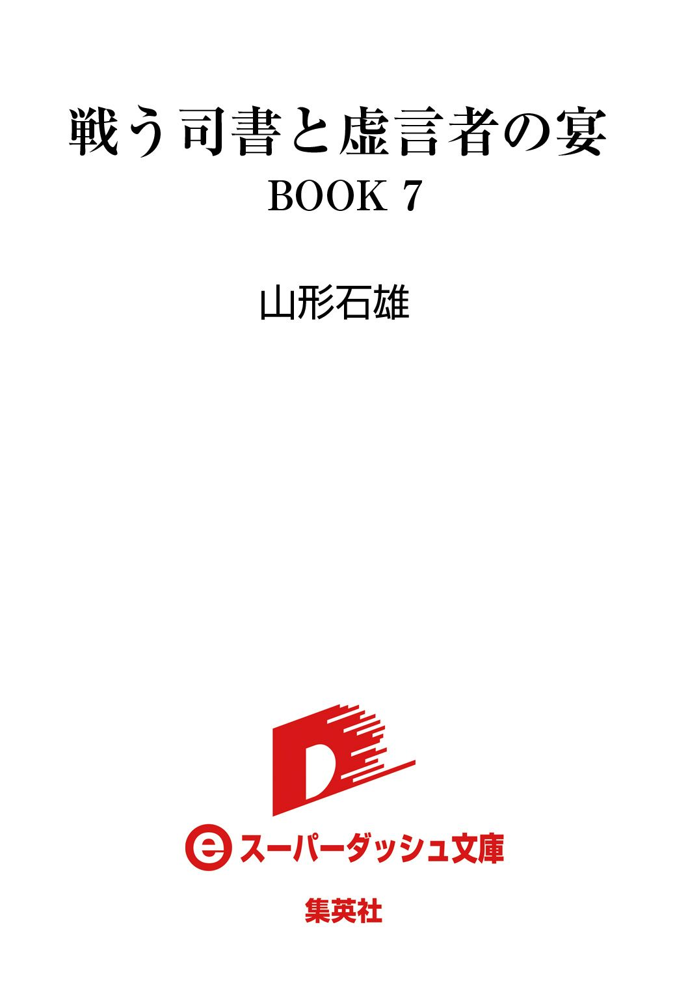

戦う司書と虚言者の宴
BOOK 7
山形石雄
この本は縦書きでレイアウトされています。
また、ご覧になる機種により、表示の差が認められることがあります。
登場人物紹介
オリビア
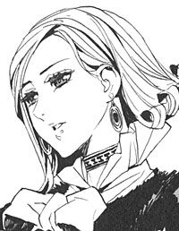
神溺教団の秘密を知る女性。武装司書から逃げながら、反逆を企てている。
ヤンクゥ
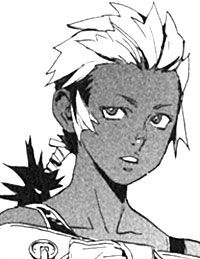
武装司書見習い。泥を操る。滅びかけた故郷の村を一人で守っている。
ミンス
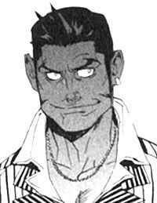
元武装司書。カチュアの後を継ぎ、新たな楽園管理者となっている。
キャサリロ
武装司書。能天気な女性。戦闘力は高い。
ユーリ
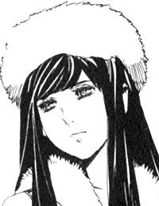
武装司書。次期館長代行ユキゾナの妹。
マットアラスト
武装司書。ハミュッツの右腕。予知能力を使う実力者であり、天性の嘘つき。
ハミュッツ
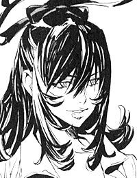
バントーラ図書館館長代行。冷酷で極めて好戦的。投石器を操る。
イラスト／前嶋重機
戦う司書と虚言者の宴
序 章 天国はざわめく
――１９２５年12月
吐く息が、空気中で氷結して舞い散っている。冬の盛りの外よりも、そこは遙かに寒かった。ぼんやりとした青い光に照らされた、殺風景な洞穴の中である。
武装司書マットアラスト＝バロリーが、バントーラ図書館封印迷宮最奥、第二封印書庫に立っていた。
「.........」
この場所には元来、館長代行以外の武装司書が立ち入ることは許されない。ハミュッツと秘密を共有し、共に守るマットアラストだからこそ、この場にいられるのだ。ここには、武装司書と神溺教団が抱える最大の秘密が存在している。
「.........さてと」
マットアラストの目の前には、一本の樹木が立っている。丈は五メートルほど。灰色の幹と、ガラスのような針状の葉が目につく。
果てしなく深い迷宮の底で、頑強な岩を根で砕いて立つ、異様な樹木である。
天国。
歴代の館長代行と、楽園管理者は、この存在をそう呼称している。
現時点で、これの存在を知っているのは世界で六人。ここにいるマットアラストと、ハミュッツ＝メセタ、ユキゾナ＝ハムロー、ユーリ＝ハムロー、フォトナ＝バードギャモン、そしてカチュア＝ビーインハスの六人だ。それ以外の人間が、知ることは許されない。
「.........カチュアの奴、務めを果たしてないな。天国が騒いでるぜ」
マットアラストが独り言を言う。その前では、ガラスの葉が、緩やかにざわめいている。
カチュアが育てた二人の真人、シガルとガンバンゼルの『本』は、すでに天国に捧げられている。しかし、彼らの幸福では天国は満ち足りていない。
当然だろう。惨めな敗残者の『本』で、天国が納得するわけがない。これが求めるのは、欠けることなき、完全な幸福なのだから。
カチュアに与えられた務めは、欠けることのない幸福を探し、天国へ捧げることだ。あの老人が務めを果たしていない以上、マットアラストが援助してやる他ない。
「.........この『本』を受け入れるかな？」
そう呟いて、マットアラストは手に持っていた『本』を、天国の前に捧げた。百年ほど前の、とある富豪の『本』だ。一族の財産を受け継ぎ、何一つ不自由なく一生を過ごした人物である。この『本』をマットアラストは密かに持ち出し、第二封印書庫に運んできた。
マットアラストは手に持った『本』を天国に近づけた。一瞬の間をおき、『本』がはじけた。粉塵と化した『本』の破片は、瞬時に幻のように消え失せた。数秒後、天国の枝葉が、ざわめくのをやめた。
「これでよし」
マットアラストは呟く。しかし、この程度の幸福では不充分だ。半年か一年で、またざわめき始めるのは目に見えている。早く幸福な真人の『本』を捧げねばならない。
そのためにも、反逆した楽園管理者カチュアを早く殺し、新たな楽園管理者を立てねばならないだろう。
「また、戦いに戻るか」
地上では、武装司書の仲間たちが神溺教団を追いつめている。カチュアの打倒まで、あとわずかだ。マットアラストは踵を返す。地上に戻り、カチュアと戦うために。
「.........」
しかし、動かそうとした足が止まった。なぜ止まったのだろうと、マットアラストは考える。ここに留まる理由はない。戻ってやるべき仕事はたくさんある。カチュア率いる神溺教団と戦わねばならない。仲間たちを守らなければならない。
早く戻って、戦うのだ。そうは思うが、足は動かない。
「何のために？」
マットアラストは呟いた。自分は、いや、武装司書は何のために戦っているのか。考えるまでもない。カチュアの悪しき意思を打ち砕き、世界に平和を取り戻すためだ。
そして、新たな神溺教団を作るためだ。
そう、目的ははっきりしている。迷うことは何もない。
にもかかわらず、マットアラストはその場から立ち去れない。
「.........」
彼にはわかっている。全ては、この天国が元凶だと。天国のために神溺教団があり、天国のために戦いが始まり、天国のために仲間たちは死んでいく。
もしも天国さえなければ、戦いは起こらなかった。誰も死ななかった。ルイモンも、フィーキーも、ビザクもヴォルケンもモッカニアも。神溺教団に利用された、たくさんの犠牲者たちも。
この天国さえなければ。
「おいおい、どうしちまったんだ俺は。馬鹿なこと考えてるぞ」
マットアラストはわざとらしく声を出す。頭の中に浮かんだ考えを、笑い飛ばして消そうとする。
彼はひとしきり笑う。笑って忘れようと努力する。
馬鹿なことは考えるな。馬鹿なことを考えるのは、疲れているからだ。帰って休めばすぐに忘れる。美味いものを食って、音楽でも聴いて、一晩ぐっすり寝ればいい。刺すように苦いビールを飲もう。クリームみたいに泡のたったやつを、ゆっくり楽しもう。
音楽は、重厚な古典音楽より、最近の耳当たりの良い曲にしよう。小説を読むのも悪くない。
だから忘れろ。馬鹿な考えを抱くのはやめろ。
そう思いながら、マットアラストは歩き出す。
「.........！」
次の瞬間、マットアラストは振り向こうとした。両の指先を二丁拳銃にかけようとした。そして、銃口を天国に向け、引き金を絞ろうとした。
わずかに一瞬だった。コンマのあとに、いくつゼロが続くかもわからないような、恐ろしく短い一瞬だった。
指を拳銃にかけるどころではない。マットアラストの指先は、一センチも動いていない。
まずは、両手の人差し指だった。誰も何もしていないのに、同時に根元から切断された。次に首が帽子とともに、冗談のように宙を舞った。指と首から鮮血が噴き上がった。
壊れたマリオネットのように、体が崩れ落ちた。どういう不思議な力なのか、服には一ミリの傷もつかず、体だけが十数個に分解されていた。
その様を、マットアラストは予知能力で見ていた。
「.........」
落ちたのは、冷や汗一滴のみ。冷たい封印書庫の中で、汗は床に届く前に、凍りついてチリンと音を立てた。
「.........くく」
マットアラストは笑い出した。なんと馬鹿なことを考えたのだろう。これを滅ぼすことができるなどとは、自分はどうかしていたらしい。
「やっぱり俺、疲れてるな。ハミの奴、俺に仕事廻しすぎだぜ」
肩をすくめて、封印書庫の出口に向かって歩き出す。もはや彼の迷いは消えている。
彼の務めは、天国の秘密を守ること。天国に幸いなる者の『本』を捧げること。
それがマットアラストの、そして武装司書の使命だ。二千年前から受け継がれてきた、逆らうことの許されない使命なのだ。
同じ日の、全く同じ時。
オリビア＝リットレットは、静かな夜闇の中にいた。
メリオト公国の首都にある、駅の片隅である。目の前には石炭を載せた貨物列車が、出発の時を待っている。
ハミュッツから逃げ延び、記憶を取り戻したあの戦いから、二カ月が過ぎている。
オリビアはその間、一人、逃亡生活を続けていた。街から街へ渡り歩き、名前を隠して僅かな金を稼ぐ。追手の気配を感じる前に、すぐに別の街へと渡る。二カ月の間そんな生活を続けていた。寄る辺もなく、身分証明証も持たないオリビアには、生きていくだけで精一杯の毎日であった。
「.........誰もいないね」
そう言いながら、オリビアが貨物列車のコンテナを開ける。この列車は、メリオトの首都から西へ向かい、マチナ大橋を抜けて北方辺境に入り、イスモ共和国へたどり着く。その列車のコンテナの中に、オリビアは潜り込む。
早い話が密航である。メリオト公国に留まるのは、限界に来ていた。逃げ続けるには思い切って国を離れるしかない。しかし、オリビアは出国許可証も入国許可証も持っていない。手段はこれしかなかった。
数十分後、列車は動き出す。オリビアは、ほっと息を吐いた。
揺れるコンテナの中で、オリビアは手をすり合わせた。
寒い。暖房具の一つも持ってくればよかったが、その時間がなかった。無理をしてでも調達してくればよかったと、オリビアは後悔する。
「誰も、見てないな」
オリビアは不安そうに呟く。運転士や機関士に見つかれば、列車から放り出される。彼らに見つかるのはまだいい。もし追っ手に見つかれば、オリビアは殺される。
「......ちくしょう」
そう呟かずにはいられない。
オリビアは現在、二つの勢力に命を狙われている。一つは、神溺教団である。オリビアは肉たちに記憶を取り戻させ、神溺教団に大打撃を与えている。当然、命を狙っているだろう。
もう一つは武装司書だ。
二カ月前の戦いで、オリビアはハミュッツ＝メセタに殺されかけた。命を拾ったのは、自分自身にも信じられない奇跡の結果である。
なぜ、オリビアが武装司書に狙われているのか。それは多少の説明を要する。
かつて、一人の少女がいた。その少女の名を語ることは、現在は許されない。彼女の髪の色をとって、『菫の咎人』と呼称されている。
菫の咎人は、武装司書と神溺教団に反逆した。そして、天国を滅ぼす唯一の手段を知った。何があっても知ってはならない、絶対の秘密を知ってしまった。
その咎によって、彼女は、武装司書と神溺教団に抹殺された。
さらに武装司書は、菫の咎人に関わった者を、一人残らず皆殺しにした。そして菫の咎人のことが書いてある『本』を、この世から全て消滅させた。
秘密を守るためには、秘密が存在することも隠さねばならない。先代の館長代行、フォトナはそう判断したのだ。菫の咎人とは、そこまでして隠さなければならない秘密だった。
しかし、虐殺の手から一人の人間が逃れた。
人間から作られた鉛の戦闘兵器、ベンド＝ルガーである。彼は逃げ延び、その後すぐにハミュッツに殺された。
その僅かな間に、ベンド＝ルガーはオリビアと出会い、心を通わせていた。
十年の時を経て、ハミュッツはそのオリビアまでも殺そうとしている。恐るべき執念と、残虐さである。
オリビアが菫の咎人のことを知っているかどうかは、問題ではない。知っている可能性があるだけで、殺そうとしているのだ。
恐ろしく執拗で、身勝手な殺人者。その魔の手から、オリビアは逃げ続けている。
夜闇を掻き分けて汽車は進む。膝を抱えて震えるオリビアを乗せて。
寒い。眠い。その上、腹も減っている。
今、眠ったら、目覚められるかどうかわからない。歯を噛み鳴らし、腕を擦って眠気に耐える。武装司書、神溺教団、そして寒さ。世界の全てがオリビアを殺そうとするかのようだった。
「ちくしょう」
オリビアは呟く。戦うためにオリビアは呟く。
生き延びなければいけない。自分が死ねば、戦いは終わってしまう。今は、生き延びることが、戦いの全てだ。
「死なねえぞ、まだ死なねえぞ」
オリビアは、自分の頬を拳で殴る。
「何のために、生きている」
オリビアは、小指の先を噛みしめる。爪が割れ、血が流れる。それで眠気は少し覚める。
「何のために、生きている。復讐するんだ。ハミュッツに、武装司書に、神溺教団に復讐するんだろ！」
オリビアが叫ぶ。
今、オリビアが生きているのは、たくさんの人の死の結果だ。肉の船で協力してくれた仲間たち。導いてくれたヴォルケン。命を救ってくれたシャーロット。体を明け渡してくれたレナス。そして、ベンド＝ルガー。
彼らのために、オリビアは死ねない。死んでいった彼らの敵を取らなければならない。武装司書と戦い、神溺教団と戦わなければならない。
全ての悪の元凶、天国を滅ぼさなければならないのだ。
もしも人に、定められた運命があるとしたら、オリビアは戦うために生き延びたのだ。天国を滅ぼすために生きているのだ。
少し、うとうとしていたらしい。オリビアは、壁に頭を打ちつける音で目を覚ました。
「.........危ねえ.........」
オリビアは、目をこする。
彼女は、自分の力で武装司書と渡り合えるとは思っていない。神溺教団と戦えるとも考えていない。オリビアには何の力もない。銃の撃ち方も、剣の使い方も知らないのだ。
だが、オリビアには武器がある。最も無力で最も重要な武器、情報を持っている。オリビアは、天国を滅ぼす唯一の手段を知っているのだ。
『菫色の願い』。それが天国を滅ぼす手段の名前だ。菫の咎人がこの世に残した、ただ一つの遺産だ。菫の咎人からベンド＝ルガーに、ベンド＝ルガーからオリビアに、その遺産は受け継がれている。
今、オリビアにできることは、ほんの小さなことしかない。
『菫色の願い』のことを誰かに伝えること。戦う意志と力を持つものに、情報を与えることだ。この遺産を次の誰かに繋げることだ。おそらくそれが、オリビアにできる最大限のことだろう。
最大限、力を尽くして、それしかできないなら、それに力を尽くせばいい。
「イスモは、まだか？」
オリビアは呟く。イスモに着いたら探すのだ。戦う力と、意志を持つものを。『菫色の願い』を受け継いでくれるものを。
それが、オリビアの使命である。天国を滅ぼすための、小さな一歩。自分自身に課した使命である。
天国を守るもの。天国を滅ぼすもの。二つの使命と、二人の人間。二つの軌跡は、いずれぶつかり合う時を迎える。しかし、そのときは未だ遠い。
そして、一年の時が過ぎる。
第一章 その平和は偽り
――現在 １９２６年12月28日
バントーラ過去神島の館下街は、夕暮れの喧騒に包まれている。仕事を終えた男たちが家路を辿り、道々の家からは夕食の匂いが漂い始める。
かつてバントーラ図書館と世界の人々を襲った、二日間の地獄。
それから一年で、街は復興している。人々の生活も、大乱前の日常に戻っている。しかし、目を凝らせば、傷跡はそこかしこに残っている。地面を削った戦車の車輪跡。壁に刺さった銃弾や、砲弾の破片。しかしそれらも、新たな日常の痕跡にまぎれて、次第に見えなくなりつつある。
マットアラストの足に、まだ片付いていなかった空薬莢が当たった。空薬莢は地面を転がって、排水溝の中へと落ちていった。
「しまったな、時間を間違えた」
そう言いながら、マットアラストは角を曲がる。繁華街の中央にある大きな建物を見つける。樫の重いドアを開ける。
悪い、遅れた。そう言おうとした瞬間、マットアラストは口をつぐんだ。
中は暗い。全ての明かりを消されている。中にいる、百人かそこらの武装司書全員が、私語の一つ、物音の一つも立てずに静まり返っている。
マットアラストは、中に入りそっと扉を閉めた。そして、帽子を取り、胸の前に当てた。
「黙祷、おわり」
闇の中から聞こえてきたのは、一人の女性の声だ。聞き覚えはある。武装司書の、キャサリロの声だ。
「一年前の神溺教団との戦いで、死んでいった仲間。蒼淵呪病に巻き込まれて死んだ一般市民の方々。現在の我々は、彼らの犠牲の上にあります。
我々が誓うのは、二度と過ちを繰り返さぬこと。我々が心を新たにするのは、世界の人々の平和な生と穏やかな死を守る、絶対の使命。
我々はその使命に、我らの持つ知恵と力と、命のすべてを捧げることを誓いましょう」
その場にいる全員が、大きく頷くのが闇の中でもわかる。
「それでは」
そのとき、今まで厳粛だったキャサリロの声色が変わった。
「本日この場に限りまして、全ての誓いを忘れましょう」
次の瞬間、いっせいに明かりが灯った。
二百人ほどが座れる、広い店の中。武装司書のほぼ全員が集まっている。皆が片手にグラスを持ち、もう片方の手にはクラッカーやシャンパンの瓶を持っている。
普段はろくに身なりに気を遣わない連中も、今日は多少なりとも格好をつけている。なかなか見られる光景ではない。
「みなさーん！」
そう言いながら、キャサリロが拡声器を片手に、テーブルの上に飛び乗った。
「今年、一年間、辛いこととか苦しいこととか辛いこととか、いろいろたくさんありましたけど、何とか一年過ごせました！ ほんとーに皆さん、一年間お疲れさまでした！
本日は、年に一度っきりの大パーティです！ 選ばれし戦士、神の代理人、世界平和の守護者から、ただの馬鹿に戻れる唯一の日です！ 思い切り楽しんでしまってください！
乾杯だぞこのやろー！」
キャサリロの声とともに、部屋中でグラスの音と拍手の音。続いてクラッカーの紙リボンとシャンパンのコルクが天井に向けて飛んだ。
「本日はいつもの仕事も悩み事も忘れて、一発派手にやっちゃってください！ 喧嘩は全治十日以内！ 器物破損は被害総額千トホラ以内！ 殺人、強姦、略奪行為、一般人の巻き込み等は厳禁です！ 以上にくれぐれも注意して、好き放題食べて飲んで歌って騒いでください！」
そう言ってキャサリロが、テーブルから飛び降りた。
気の荒い奴が、辺りにシャンパンの泡を撒き散らしている。酔いも回っていないのに、歌いだしている奴もいる。あっという間に会場は、馬鹿騒ぎの場と化した。
ここは、バントーラ過去神島館下街にある、一番大きなビアホールだ。毎年この日、この店は武装司書たちの貸切となる。規律が求められる武装司書に、年に一度だけ許される、大騒ぎのパーティの日であった。
「おいおい、俺たちの体で全治十日なら、相当の怪我だぜ」
マットアラストは肩をすくめる。今日は荒れそうだぜと、心の中でため息をついた。
武装司書のパーティといえば、多くの人はよほどの贅を凝らした饗宴と考えるだろう。並みの武装司書でも、一生分の金を十年で稼ぐ。館長代行候補となれば、イスモの大資本家に匹敵する額を手にする。その武装司書のパーティならば王侯貴族も目をむく贅沢さだと思うだろう。しかし、実態はそうでもない。
会場はただのビアホールだ。会場の奥のほうに広場を作り、その手前には雑然とテーブルが置かれている。出席者はそれぞれ勝手に席に着いたり、立ったまま食べていたりする。
食べ物も、やたらスパイスが効いた肉料理や揚げ物ばかりである。酒は値段はそこそこで、種類と量だけがひたすら多い。
武装司書はほとんどが、中流かそれ以下の家庭の出身である。青春時代を戦闘訓練と魔術審議に明け暮れていた彼らには、上等な料理の味などわからない。高級な酒の飲み方も知らなければ、マナーなど頭のどこにも入っていない。贅など、尽くすだけ無駄なのである。
「久しぶりだな、このパーティも」
そう言いながらマットアラストが、早速シャンパンのグラスを傾ける。
「あれ、マットさん。遅刻ですよ」
そう言いながらキャサリロが話しかけてきた。
「悪い。時間を間違えちまった」
「言ったじゃないですか。今年は前より一時間早く始めるってさ」
「すまんすまん」
そう言いながら、マットアラストは肩をすくめる。
キャサリロ＝トトナは、二十代の半ば。世間一般では若者の部類だが、武装司書としてのキャリアは浅くない。
かなり小柄で、童顔の女性である。しぐさや言動もどことなく幼い。
不釣合いな大きな帽子を被っている。腰やら太ももやらに大量の拳銃を装着している。よく言えば自由奔放な、率直に言えば珍妙な格好だ。
「今年は、君が幹事を引き受けたんだろ？」
「そうなんですよ」
そう言いながらキャサリロが、マットアラストの肩の上に飛び乗って来た。彼女はどういうわけか、人の肩やテーブルの上に飛び乗るのが大好きなのだ。珍妙なのは姿だけではない。
「大変でしたよ。前まではずっとイレイアさんがやってくれたから」
「そうだな。惜しい人を亡くしたよ」
そう言うとキャサリロはマットアラストの頭に軽く肘を落とす。
「今日だけは、しみったれた顔はだめっす。明日にしてください」
「そうだね。すまん」
「楽しい顔しなきゃだめっすよ。三年ぶりのパーティなんですから」
マットアラストの肩に飽きたのか、キャサリロが飛び降りる。
一昨年の十二月二十八日は、アロウ沖襲撃事件の少し後だった。パーティなど開ける状態ではなかった。そして去年のこの日は、あの蒼淵呪病の戦いが始まった日だ。
それを思えば、楽しい顔をしろという、キャサリロの言葉も頷ける。パーティを開けて、出席できるというだけで、途方もない幸せなのだから。
ふと見ると、会場の一番奥に、即席の壇が置かれている。そこにミレポックが拡声器を持って立っている。一年前は短かった髪が、胸元まで伸びている。顔立ちも大人びて、もう少女の面影は消えつつあった。そのミレポックが、声を上げる。
「皆さん、注目願います」
ミレポックが言うが、武装司書たちは好き勝手に話しこんでいる。
「注目願います」
もう一度言うと、やっと、何人かの武装司書が反応した。
「おーい、ミレポがなんか言うぞ」
「聞いてやれー。怒られるぞー」
そんな声が響き、ざわついていた会場が多少静かになる。
「先日、今年三度目の武装司書の昇格審査が行われ、三人の見習いが合格しました。この場を借りまして、皆さまに紹介をしたいと思います。こちらにどうぞ」
ミレポックに促されて、三人の若者が壇上に上ってきた。
「順に自己紹介と一言挨拶をどうぞ。右端からお願いします」
最初に頭を下げたのは、にこやかな表情の少年だった。小柄で、かわいらしい童顔だ。何一つ不自由なく育った、愛玩犬のような少年だった。彼は明るい声で話し始めた。
「みなさんこんにちは、リズリーです。年は十八歳です。趣味は料理と園芸で、好きな色はピンクとコバルトブルーです。得意な料理はイワシのパイとイレイアさん譲りのサーモンのピカタです。今日は腕によりをかけて作りました。あの辺にたっぷり置いてありますから、皆さんおいしく食べてください」
会場から拍手と、美味いぞーという声が上がる。
「.........あなたの仕事はなんですか。次の人どうぞ」
続いて現れたのは、おかっぱ頭の少女だった。眠そうな目があさっての方向を向いていた。少女はしばらく、天井を向いていた。やがて、小さな声で話し始めた。
「武装司書のテナです。空色の小鳥が、私に明日の雲をささやいています。ふわり、ふわりと、春なのに、まるで落ち葉のよう」
「.........なにあれ」
キャサリロが呟いた。
「面白いなあ、あの子」
マットアラストはクックと肩を震わせている。
「月と子猫とミミズクが、二次関数の数式どおりに踊っています。なのにどうして、ピエロの心はときめかないの？ バントーラ図書館に収められる、全ての『本』は夜の粉雪。私たち武装司書は、誰もが煮えた羊のミルク。北の星の六角形が、私のために瞬くのはなぜ？」
「知りません。次の人どうぞ」
ミレポックが言うと、テナという新人武装司書は、意外にあっさりと下がっていった。
そして三人目が壇に登る。右手と右足が同時に出ていた。彼は硬直したままずっと黙っていた。全身が小刻みに震えていた。その新人武装司書を、ミレポックが救出した。
「彼は七人以上に注目されると動けなくなるので、挨拶はなしです。下がってもらって結構です」
新人武装司書は名前すら名乗らず、逃げるように去っていった。
「おい、こんなのしかいないのか！」
会場から上がる野次を、ミレポックは額に血管を浮かせながら無視した。
「では次に、彼らに向けて館長代行から武装司書の心構えを、一言お願いします」
ミレポックは、会場の隅を向く。そこにはハミュッツが、ぼんやりと座ってサラダを食べていた。
ハミュッツは、サラダを咀嚼しながら壇上に歩いてくる。ミレポックから拡声器を受け取ると、一言、
「面倒くさいから、いや」
とだけ言って、会場の隅に戻っていく。眉間に皺を寄せながら、ミレポックは拡声器を受けとる。
「.........では、挨拶はこれで終わりです。皆さん引き続き、お食事と歓談をどうぞ」
そう言い残して、ミレポックは壇上から逃げ出した。
「なんかさあ、年々変な奴が増えてきますよね、武装司書って」
「君が言うなよ」
マットアラストがそう言うと、キャサリロは全く心外だというように眉をひそめた。
そこに、ミレポックが肩を怒らせて歩いてきた。
「ありがとーミレポ」
「キャサリロさん、どうして私にこんな役目を」
「だって、どーせ誰も聞かないのわかってたし。面倒くさかったからミレポ辺りにまかせちゃえ、みたいな」
キャサリロがけらけら笑う。
「いやー良い挨拶だったよ。楽しめた」
「ふん」
マットアラストが話しかけると、ミレポックは露骨に顔を背ける。
「来るんじゃなかった。全くもう」
愚痴をこぼしながら、ミレポックはマットアラストたちから離れていく。
「やれやれ、あいつは相変わらずだな」
「そこがミレポの良いところ。気にしない」
キャサリロが笑う。マットアラストは頷いた。
パーティ開始から、一時間が過ぎている。来るんじゃなかった。そう思いながらミレポックは会場の隅に座っていた。
もともと、にぎやかな場が好きではない。騒ぐのは嫌いだし、酔っ払いはもっと嫌いだ。
ミレポックは会場を眺め渡す。ルイークとツァムロが、ビア樽を抱えて飲み比べをしている。ラスマとコーイオールが、取っ組み合いの喧嘩を始めている。ボンボがテーブルいっぱいに料理を並べて、片端から腹に収めている。
ホールに据え付けられているピアノではマットアラストが聞いたこともない曲を弾き、キャサリロやガモがその周りで歌っている。
皆、常日ごろは尊敬すべき先輩たちだ。それが今は、まるで馬鹿みたいに騒いでいる。
「なんなのかしら」
と、ミレポックが呟く。
でも、馬鹿騒ぎの一つもできない自分のほうが間違っているのかもしれない。一人、所在なく座っているとそんなことも考えてしまう。
「.........」
ミレポックはふと、一年前の戦いを思い出した。胸元まで伸びた髪を触ると、過ぎた時の長さが実感できる。しかし、つい昨日のことのように思えてしまう。
あの戦いで死んだ人たちのことが、頭に浮かぶ。
こんな馬鹿騒ぎをしていて良いのだろうか。巻き添えになって、たくさんの人が死んだのに。ノロティは、イレイアは、もう二度とこのパーティに参加できないのに。
目の前に新人武装司書のテナがやってきた。手に持っているグラスを、ミレポックに差し出す。
「なにかしら、テナ」
テナは、何を考えているのかよくわからない目で、ミレポックを見る。
「誰だって忘れたくないのです。でも、時々は忘れないと、思い出に足をとられて身動きが取れなくなるのです。皆、忘れるのが下手な人だから、今日、がんばって、忘れるのです」
ミレポックは、テナからグラスを受け取る。薄い琥珀色の液体に満たされている。楽しめと言いたいのだろう。
「ありがとう」
そう言いながらミレポックは、グラスの液体を飲み干す。甘いのに、どこか喉をさす刺激がある。初めて飲む飲み物だ。
「これ、何？」
テナは無言で、バーカウンターを指差す。銀のボールに、輪切りのオレンジが浮いた飲み物がある。
「パンチです。カップに自分で注いで飲むのです」
と、テナは説明する。行儀の悪い飲み方だが、悪くない。もう一杯グラスに注いで、腹に収める。不思議とするする喉を通っていく。
「おいしいわ」
グラスを眺めながら、ミレポックは小さく笑った。
――１９２６年２月
蒼淵呪病の大乱は終わった。バントーラ図書館は数多くの犠牲と引き換えに、かろうじて勝利を得た。敵の総帥カチュア＝ビーインハスは、エンリケによって倒された。しかし、それで戦いが終わったわけではない。
武装司書にとって、大乱以後の一カ月が、最も苦しい時期だったかもしれない。過去神島の被災者を保護し、壊滅状態の街を復興し、近海に散らばった各国の海兵たちも救助しなければならない。人命救助という、もう一つの戦いに身を削らねばならなかった。
その上、神溺教団との戦いも未だ続いていた。神溺教団が、本当に全ての手駒を出し尽くしたという保証はどこにもなかった。
ノロティの『本』に記されていた、カチュアという元武装司書が、本当に神溺教団の頭なのかはわからない。彼すら操り人形に過ぎず、本当の黒幕はその奥にいるのかもしれない。
そもそも、神溺教団の恐ろしさは、滅ぼしてもなお生き続けることだ。武装司書が、神溺教団を倒したのは、歴史上で五指に余る回数だ。しかし、そのたびに神溺教団は復活してきた。
武装司書たちは復興に尽力しながらも、神溺教団と戦い続けていた。
カチュアを倒したところで、神溺教団が滅んだと確信しているものは、一人もいなかった。
蒼淵呪病の大乱から二カ月後。歴史に残る事件が起こった。
トアット鉱山に駐屯していた見習いが、飛行機のエンジンを焼け付かせ、バントーラ図書館に駆け込んできた。
「『本』が出ました！ 『本』が、『本』が出たんです！」
そう言われて、何のことか即座に理解できた人間は少なかった。神溺教団の信徒の『本』は、絶対に見つからないもの。そう信じられていたからだ。
「落ち着きなさい。何が起こったの？」
ミレポックが、動転する見習いに水を飲ませる。見習いは咳き込みながら叫んだ。
「信徒の『本』が、発掘されたんです！」
そう言われてミレポックは、初めて事の重大さに気がついたのだ。
見つかった『本』は、トアット鉱山で殺された、ウスパという信徒の『本』だった。アーキットに従っていたが、ノロティに敗れたことが確認されている。後に死体も発見されていた。
ハミュッツ他、武装司書のほぼ全員がバントーラ図書館に集まり、『本』を確認する。
「なぜ、急に？」
武装司書の気持ちは、戸惑いと喜びが半々だった。神溺教団が『本』を封印していた方法は、まだわかっていない。
ミレポックの活躍で、シャール＝ストライトなる人物が『本』の封印に関わっていたことが判明している。しかし、シャール＝ストライトを倒した後も、『本』の封印は続いていたのだ。
発見された理由がわからない。武装司書たちは一様に首をかしげる。
「ま、いいわ。理由はわからんけど、現に『本』が発掘されたんだからねえ。とにかく万々歳よ」
ハミュッツが武装司書たちに告げる。
「俺たちの戦いで、『本』を封印する機関が機能しなくなった。そう考えるしかないな」
そうマットアラストが付け加えた。
もう一つ武装司書を戸惑わせたのは、ウスパの『本』に記されている一つの記憶だった。ウスパはカチュアに、小さな『本』の欠片を見せられていた。
天国を見た男の『本』だとウスパは聞かされていた。
天国とはそれまで、神溺教団の妄想としか考えられていなかった。しかし、現実に天国は存在していたのだ。
天国と称される場所には、たしかに人知を超えた幸福があった。誰だって、こんなものを見せられたら、天国に行きたいと思うに決まっている。なぜ人々が神溺教団に入信するのか、この『本』で明白になった。
天国の正体は、調査の最優先課題となった。次々と発掘される信徒たちの『本』。そして信徒たちのアジトから発見される資料。それらをつき合わせて、真実を探る。だが、神溺教団の秘密主義の壁に阻まれ、調査は遅々として進まない。
とりわけ、天国の正体と、ラスコール＝オセロの正体は、神溺教団絶対の秘密とされていた。
「真実は、カチュア＝ビーインハスの『本』を読むしかないな」
と、武装司書の誰もが口にした。しかし、カチュアの『本』だけは不思議とどこからも発掘されないのだ。
事実は、意外なところから判明した。なんと答えは、バントーラ図書館の、封印書庫の中にあったのだ。
「この『本』を見てくれ」
そう言って、ユキゾナが持ってきた、『本』の欠片。第三封印書庫の片隅で、偶然見つけたという。記録によると、この五百年間閲覧されていない。それ以前の記録は残っていないから、封印されて以降、一度も読まれていない『本』なのかもしれない。
「なんですか、これは」
ミレポックが尋ねる。
「天国の正体が、書いてあった」
武装司書たちは、先を争って『本』に触れていく。
それは、千八百年前の、一人の魔術師の『本』だった。
半分ほどに欠損していたので、全ては読めない。だが、その魔術の内容は書いてあった。
夢使い、と呼称するべきだろうか。人の夢を操り、現実と見まごうばかりの夢を見せる。彼は古代のとある貴族に仕えていた。敵対者に悪夢を見せて精神を破壊したり、あるいは近しいものたちに幸いの夢を見せたりしていた。
「つまり、ユキゾナさん。天国というのは、この魔術師が生み出した夢ということですか？」
ミレポックが言うと、ユキゾナは頷いた。
「.........現在、人類は、創造神が生み出した世界の、ほぼ全てを踏破している。世界のどこにも、あの天国などという場所は見つかっていない。
ならば、この世ならぬ何処かにあると考えるのが必然。
たとえば、夢の中に」
「.........」
武装司書は、いま一つ納得できない。神溺教団が長い間目指していたものが、ただの夢とは、あまりにもくだらない結末ではないか。
そう考えるミレポックたちに、ユキゾナは語りだした。
「俺の仮説だ。多分に想像を含んでいるが、おそらく大きな間違いはないだろう。神溺教団の歴史を、俺なりに解釈すると――」
ユキゾナが語る、神溺教団の歴史とはこういうことだ。
かつて、天国の夢を見た人物の『本』を、誰かが読んだ。『本』の内容が夢とは知らず、『本』を読んだ人々は、天国が実在すると信じるようになった。
千八百年前、人間は西方大陸のわずかな領域にしか住んでいなかった。未だ見ぬ新天地に、限りない幸いのある場所がある。そんな信仰が生まれた。
そして天国へ行くことを望む人間たちが、ひそかに増えていく。
それが神溺教団の始まりだ。
人々は語り合う。天国とは何か。長い議論の果て、天国とは人々の幸福が集められている場所であると、考えるようになった。その妄想はやがて噂になり、噂は伝説になり、いつしか疑いようのない事実になった。こうして、神溺教団の教義が完成する。
だが実際には天国などという場所は存在しない。それを隠すために、ラスコール＝オセロなどという架空の存在を創造し、天国を絶対不可侵の存在に祭り上げた。
全ては虚構の産物だ。現実と妄想の区別がつかなくなった人間たちと、嘘を嘘で塗り固めた教義の数々。それが神溺教団の実態なのだ。
なぜ、神溺教団を滅ぼせなかったのかは、これでわかった。神溺教団を滅ぼしても、伝説はどこかでひっそりと伝えられてきた。そして現実と妄想の区別がつかない人間は、いつの時代にもどこにでもいるのだ。
「たとえば、カチュア＝ビーインハスのように、ですか」
「その通りだ」
ユキゾナはそう言って、話を締めくくった。
馬鹿馬鹿しいといえば、これほど馬鹿馬鹿しい話はない。妄想が妄想を生み、あの恐るべき戦いを生んだ。その妄想のために、人々は死んでいったのだ。
「あくまでも、仮説ね。説得力はあるけど、まだわかんないわよう」
ハミュッツが言う。ユキゾナも頷く。
「神溺教団の信徒の『本』が、出土しなかった理由がわかってないわ。今後も調査を継続するわよう」
ハミュッツが武装司書たちに明言する。なおも天国の実態についての調査は続いた。
しかし、その後もカチュアの『本』は見つからず、天国やラスコール＝オセロの正体もつかめなかった。残された信徒を皆殺しにしても、真実を知る者はいなかった。
ユキゾナの仮説は、次第に事実として扱われるようになっていく。最終的には、彼の仮説がそのまま結論として認知されることになった。
ウスパの『本』が掘り出されて六カ月後。
ミレポックは思考共有を使って、世界各国の首脳や現代管理代行官に、神溺教団の滅亡を宣言し、教団の正体を公表した。
これで公式に、神溺教団との戦争は決着がついたことになった。
その後、各国首脳との話し合いが持たれ、事後処理は全て武装司書に一任されることになった。一般市民に神溺教団のことを伝えるのは、影響の大きさを考えて見送られた。
何か釈然としないものを感じながらも、武装司書と神溺教団の戦いには終止符が打たれた。長い戦いは、終わったのだ。
――現在 １９２６年12月28日
「.........ん、おいしい」
ミレポックは調子に乗って、パンチを掬ってはあおる。飲んでいるうちに、なんだか気分がよくなってきた。実に不思議な飲み物である。
さっきまで、神溺教団との戦いを思い、心が沈んでいた。飲んでいるうちに、神溺教団のことまで忘れてしまいそうだ。
「こんなことで良いのかしら」
と、ミレポックは呟く。
「良いのです」
傍らで聞いていたテナが答える。
ミレポックは、思う。おそらく神溺教団の本質は、天国という妄想ではないのだろう。
神溺教団を生んだのは、シガルのような、幸福のためなら何をしてもかまわないという人間の心だ。貪欲さや傲慢さを恥じない、人間の愚かさだ。
そんな人間が集まり、神溺教団という心の支えを得て、あの恐るべき暴挙に至ったのだ。
神溺教団は馬鹿馬鹿しい。そして、勝利もまた馬鹿馬鹿しい。
しかし、それで死んでいった人間の命は、決して馬鹿馬鹿しいものではない。ノロティや、イレイアや、ルイモンたち。ミレポックの脳裏に、彼らの顔が浮かんでは消えた。
「みんな、ごめんなさい」
そう呟いて、ミレポックはパンチをさらにもう一杯飲んだ。
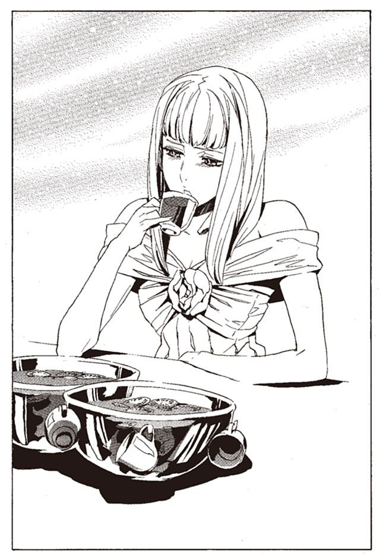
「私、楽しませてもらうわ。だって、やっと平和になったんだもの」
いつの間にか、銀のボールは空になっている。ミレポックは見習いを呼び、もう一杯持ってくるように言った。
その一方で、武装司書たちが会場の一角に集まっている。その中心にはピアノを弾くマットアラストがいた。長い指が、軽快に鍵盤の上を踊る。演奏が終わると同時に、盛大な拍手が上がる。
「『フルベック市の土曜日の夜』。満足したかな？」
マットアラストは、両手を広げて皆に笑いかける。
「流石はサボリ魔だな。どれだけ練習したんだ？」
手を叩きながら言ったのは、ガモだ。マットアラストと同年代の、ベテランの一人。手入れされた口ひげと、クラシックなスーツが武装司書には似つかわしくない。
「何がサボリ魔だ。このぐらいなら楽譜見れば弾けるんだぜ」
「そーなんですか。すごいですねえ」
キャサリロがそう言いながら、ピアノの上に飛び乗る。
「キャサリロ。マットアラストの言うことは信じないのが鉄則だぞ」
ガモが笑う。
やれやれと、マットアラストは肩をすくめる。どうやら、サボリ魔のレッテルは完全に定着してしまったらしい。図書館にほとんど姿を見せないのだから、他の武装司書にとっては当然かもしれないが。
マットアラストは、この一年間裏工作に徹していた。一般の武装司書には伝えられない、秘密の任務を一手に引き受けていた。
マットアラストの任務は、神溺教団の秘密を守ること。そして、神溺教団を存続させることだ。
さしものマットアラストでも、並大抵の任務ではなかった。武装司書たち全員を騙しきらなければならないのだから。
彼もまた、長く辛い一年を過ごしてきた。その結果が、この平和なパーティなのだ。
――１９２６年１月
エンリケとノロティの活躍で、カチュアは打倒された。指揮官を失った神溺教団には、もはや反攻の力はない。武装司書たちは、復興のかたわらで麦でも刈り取るように残った信徒を抹殺している。神溺教団の正体に迫ろうと、情報をかき集めている。
マットアラストはそれに参加していない。もっと重大な任務を任されていたからだ。
「ううむ.........頭痛くなってきた」
マットアラストは、煙突のようにパイプを吹かしながら呟いた。イスモ共和国にある、個人所有の別荘の中である。マットアラストはここを、裏の任務を遂行するための拠点としても使用していた。
彼に与えられた使命は二つ。
一つ目は、部下の武装司書たちから、神溺教団の真実を隠すことだ。神溺教団は、本当は武装司書の下部組織であること。そして天国は実在し、バントーラ図書館の第二封印迷宮にあること。それらを隠さねばならない。
そしてもう一つは、神溺教団を存続させることだ。神溺教団打倒に燃える武装司書たちに、なんとか戦いを止めさせることだ。しかも、神溺教団との繋がりを悟られないように。
マットアラストは、咳き込んだ。パイプの吹かしすぎで喉が荒れている。煙の中に名案を探し続けて、一週間が過ぎている。
「悩みどころでございますね。マットアラスト様」
背後で、喪服姿の少年がくすりと笑った。人の『本』を運ぶ追憶の戦器ヨル。別名ラスコール＝オセロの現在の姿である。
別荘の中には、数十冊の『本』が積まれている。全て、ラスコールがこの場に運んできた、神溺教団の信徒の『本』である。
「丸く収めろって言ったってなあ。どうすれば良いんだよ」
「マットアラスト様は、天性の嘘つきではございませんか。腕の見せ所でございましょう？」
ラスコールは笑った。
「そうは言ってもな、これはしんどすぎるぜ」
そう言いながら、マットアラストは小さく咳をする。部屋はパイプの煙で火事のようになっている。
「武装司書から見習いまで、皆がめちゃくちゃ張り切ってるんだよ。これをどうすれば良いんだ？」
「今までどおり、隠し切ればよろしいのではありませんか？」
過去の神溺教団との戦いでは、信徒を皆殺しにした時点で戦いを終わらせていた。神溺教団の正体は長い年月をかけて、うやむやにしてきたのだ。
「それができないから、悩んでるんだ」
マットアラストは灰皿に灰を落とし、もう一度火をつける。
「何しろ、この数年で秘密が暴かれまくってる。
神溺教団の総帥は、真人を生み出して束ねる楽園管理者。神溺教団の目的は、全ての幸いを収める場所、天国に行くこと。神溺教団の『本』はラスコール＝オセロに掘り出され、天国に運ばれていること。重要機密がダダ漏れだ。
どれもこれもカチュアのせいだぜ」
マットアラストはぼやく。
カチュアの登場以前は、神溺教団は『欲望を肯定し、悪行に躊躇しないこと』を教義とする宗教と思われていた。楽園管理者の存在も、天国の存在も知られていなかった。
だから、邪悪な人間を消し去り、神溺教団の存在を一般市民に秘匿すれば、神溺教団は滅びる。そういうことで決着をつけていた。
だが、今はそういうわけにはいかないのだ。
「カチュアの奴、いつまで俺に迷惑かけりゃ気が済むんだ。生き返らせてもう一回殺したいぜ」
秘密を知らない武装司書たちは、調査を進めている。神溺教団が目指す天国とは何か。カチュアはなぜ楽園管理者になったのかを探っている。
彼らとて、無能な人間ではない。調査はゆっくりとだが、着実に進行している。
「ガモがな、カチュアが楽園管理者になった経緯を調査してる。それで、当時の館長代行の『本』を、特別に読ませて欲しいって陳情してるんだ。そんなもの、読ませられるわけないだろ。館長代行の命令で楽園管理者になりましたなんて言えるか」
マットアラストが頭をかきむしる。彼も今度ばかりは、本当に困り果てていた。
このまま調査を続けられたら、あるいは真実にたどり着いてしまうかもしれない。絶対に知られてはならない真実にだ。
真実が暴かれたら、武装司書は崩壊する。どうにかして、武装司書たちに調査を打ち切らせなければいけない。
「圧力をかけてみればいかがでございましょうか。これ以上、神溺教団のことを調査することは許さないと、おっしゃってみては」
「そんなこと言ったら、武装司書と神溺教団が繋がっていると、明言するみたいなもんだろう。君も意外に頼りにならないな」
「申し訳ございません。とかく私は性能が悪うございますので」
楽しそうにラスコールは笑っている。
マットアラストは、テーブルの上の紙を見る。そこには、今後のシナリオ案が乱雑に書かれている。『神溺教団はいかにして誕生したか』とタイトルが振られている。
「これで、騙しきるしかないか」
積み上げられた信徒の『本』から、一つを取り上げる。ウスパという男の『本』だ。
「ラスコール。この『本』をトアット鉱山に埋めなおしてきてくれ」
「おや、神溺教団の『本』が読まれてしまうのではございませんか」
「しかたない。このシナリオで押し切るしかない」
――１９２６年２月
武装司書が慌ただしい。ウスパの『本』がトアット鉱山から発見されたのだ。ラスコールに頼んで埋め戻したものだ。
マットアラストはウスパの『本』だけではなく、多くの信徒の『本』を埋め戻させていた。
この先も多くの『本』が発見されていくだろう。重要な秘密を知らない、下っ端の『本』に限ってだが。
「騙しきれるかな。みんなを」
マットアラストとハミュッツは館長代行室で話している。
「まあ何とかなるでしょ。あんたのシナリオ、良くできてるわよ」
と、ハミュッツが言った。
「あとは、例の『本』の使いどころだな」
「そうね」
マットアラストのシナリオでは、この後に夢使いの『本』を公開することになっている。それを使って、天国の正体を騙しぬく。そして神溺教団が滅んだことにするのだ。
「夢使いの『本』はユキゾナに持ってこさせるわ」
「ユキゾナに？ 俺や代行じゃだめなのか？」
「わたしはめんどくさいから嫌よう。ボンボは馬鹿っぽいから信憑性がないし。嘘つきのあんたが言ってもやっぱり信憑性がなくなるのよねえ」
「違いない」
マットアラストは苦笑する。とにもかくにも、武装司書たちを騙しぬく計画は進行している。あとは疑惑を生まないように細心の注意を払っていくしかないだろう。
「じゃ、次は神溺教団を復活させないとな。候補がいてくれて助かったぜ」
そう言いながら、マットアラストは、楽園管理者候補の顔を思い出す。ミンスの素質は申し分ないが、問題は承諾するかどうかだ。
「ミンスにはもう伝えたんだな？」
「まだよ。あんたやっておいて」
「.........また俺か」
ハミュッツは、口を尖らせて言う。
「館下街の復興に、遺族への賠償に慰問に。各国との政治交渉。わたしは忙しいのよう。ユキゾナもボンボも手が離せないの。あんたしかいないじゃない」
たしかにそうだ。そもそも裏工作は自分の担当だ。
「なあ、もしミンスが承諾しなかったらどうなるんだい」
「当たり前でしょ。あんたが楽園管理者になるのよ」
勘弁してくれよと思いながら、マットアラストは部屋を出た。
――１９２６年４月
ミンスは楽園管理者就任を承諾してくれた。マットアラストは心底胸をなでおろした。その後も、マットアラストは新生神溺教団の組織作りと活動支援に、世界中を駆け回る。
傍から見れば遊んでいるように見えただろう。それは、マットアラストが遊んでいると偽装していたからなのだ。
実際のところ、今までこれ以上忙しい時期はマットアラストにはなかった。その努力の甲斐もあり、ようやく新生神溺教団は組織の体を成してきた。
そんな時、マットアラストはハミュッツから召集を受けた。同時にユキゾナとユーリ、そしてボンボも呼び出された。神溺教団の秘密を共有する幹部たちが、一堂に会した。
ハミュッツから指定された会合の場は、図書館上空、ボンボが操る鯨の上だった。
「よっと」
小さなかけ声とともに、屋根から鯨の上に飛び乗る。ハミュッツの執務室では、万が一だが盗み聞きされる可能性があると判断されたのだ。
「マット、久しぶりだね」
そう言ったのは、武装司書最強の一角、鯨使いのボンボである。武装司書の秘密を知る一人だ。ミンスと同じ時期に、ハミュッツから秘密を明かされている。
「お久しぶりですわ、マットアラストさん。ご健勝のようで何よりです」
その傍らに立っているのは、次期館長代行といわれるユキゾナと、妹であり忠実なパートナーでもあるユーリだ。この二人には、神溺教団との戦いが始まる前から、秘密を伝えている。
ユキゾナは、冷徹な視線を向けるだけで挨拶もしない。ユーリが、礼儀正しく一礼をする。
最後に、バントーラ図書館の最上部から、ハミュッツが大きく跳躍して、鯨の上に乗って来た。
裏から世界を操る、悪党どもが勢ぞろいか。マットアラストは仲間たちの顔を眺め回しながら、そんなことを考えた。
「さて、みんな集まったわねえ」
ハミュッツが手を叩く。
「世界の復興も順調に進んでいるわ。神溺教団との戦いも、上手いことうやむやになってきてるわねえ。それに、ミンスの神溺教団も良い組織に育ってきてるわ。
みんなよくがんばってくれてる。ありがとね」
「.........代行。無駄話のために呼んだのではありませんよね」
ユキゾナがぼそりと言う。
「あんたはせっかちねえ。まあいいわ。そろそろ、棚上げになっていた問題を片付けるわ。
残った反逆者、オリビア＝リットレットのことよう」
そういえば、そんな奴もいたなとマットアラストは思い返す。
「あの女はまだ生き延びているわ。おそらく何処かで、反逆の機会を窺っているわ。対処しなきゃいけないわよねえ」
「それで、対策は？」
「わたしが逃がした時から、探し続けてはいるわ。ここらで本腰を入れて探さなきゃいけないわねえ」
ハミュッツがそう言うと、ユキゾナが踵を返し、鯨の背中から降りようとする。
「ちょっと、どこに行くのよ」
ユキゾナはハミュッツの制止を無視して、鯨から飛び降りた。残ったユーリが、微笑を浮かべながら言う。
「失礼ながら、たかが一般人の女性一人。我々が集って問題にする相手とも思えませんわ。見つけて始末すれば、済むことではありませんか」
「油断しすぎよ。あいつは、蟻の一穴よう。あいつが握ってる秘密から、武装司書が崩れる可能性はあると思わないの？」
「では殺せばよいのでは？」
ユーリが、優しげな表情を見せる。その表情からは想像もできない冷酷な言葉を発する。彼女は一度敵対した相手には限りなく残酷に振る舞う女性だ。
「それでは失礼いたします」
ユーリがスカートの裾を押さえながら、鯨から飛び降りる。
「あいつらは、言うこときかないわねえ」
「でもさ、代行。そいつなんか問題でもあるの？ 放っておけばいいんじゃない？ 美人だし」
ボンボは、おやつをぼりぼり齧りながら、呑気に言う。美人は関係ないだろうと、マットアラストは心の中で思う。
「問題よ。あいつはベンド＝ルガーの存在を知っているわ。それだけなら、まだいいわ」
ハミュッツは言葉を切る。
「あの女は『菫色の願い』を知っている可能性がある。これが最大の問題よ」
ボンボは、おやつの袋を投げ捨てながら聞く。
「その『菫色の願い』ってのは何さ。僕は聞いたことないんだよね」
マットアラストが口を挟む。
「そうだな。天国を滅ぼす、唯一の手段ってところだな」
「そりゃあ大変だね。殺さなきゃいけないね」
ボンボが、大口を開けて笑う。その目が、静かに鋭い光を放つのをマットアラストは見た。
「それでさ、それ、どうやるの？」
その瞬間、マットアラストが銃を抜いていた。銃口はボンボの眉間に向いていた。
「あれ？ マット。それはどういうことかな？」
「いやね、まさかお前、天国を滅ぼそうなんて考えてはいないかと思ってな」
マットアラストが笑う。ボンボは秘密を知って日が浅い。あるいはまだ、天国のことをよく理解していないのかもしれない。
「.........考えてたらどうするのかな」
ボンボは笑いながら言う。
「そりゃあ死んでもらうに決まってるだろう」
マットアラストとボンボは笑いあう。しばらく二人で笑っていた後、ボンボは両手を挙げて降参した。
「わかった。聞かないよ。君は本当に怖い男だね」
「わかってくれて何よりだ」
そう言って、マットアラストは銃をしまう。
「実は俺も知らないんだ。知ってたら、天国を滅ぼすなんて馬鹿なこと考えちまうからな」
「で、どうするんだい。代行。ユキゾナも言ってたけど、こんな話、僕たち全員で話し合うことでもないと思うね」
マットアラストも頷く。
「そうだな。代行は少しオリビアを過大評価している部分があると思う」
部下四人に否定されて、ハミュッツは少しむくれた顔をする。
「わかったわよ。じゃあとにかく、見つけ出して殺すってことでいいわね。マットに一任するわよう」
「また俺か」
マットアラストは、肩をすくめる。
「当然でしょ。ボンボはこういう仕事苦手だし、ユキゾナは帰っちゃったんだから」
「やれやれ。了解したよ」
ハミュッツは頷き、鯨の上から飛び降りた。なぜかボンボは、まだ笑っている。
「しかしね、マット。酷いもんだと思わないかね。罪もない女の人を一人、よってたかって必ず殺せだって。まるっきり、悪の親玉だねえ」
「よくわかってるじゃないか」
マットアラストは答える。
「バントーラ図書館館長代行は、この世の悪の化身だぜ。俺たちはその悪の手下さ」
そう言い残し、マットアラストも飛び降りる。
さて、殺しに行こう。知ってはならないことを、知っているかもしれない女を。
――現在 １９２６年12月28日
演奏にも少し疲れ、マットアラストはピアノから離れた。バーカウンターにある酒瓶をいくつか取り出し、自分でシェイカーを振る。カクテル作りも彼の趣味の一つである。
ビターの効いたカクテルを味わいながら、マットアラストはこの一年のことを思い返す。
なかなか、気苦労の多い一年だったが、結果は概ね上々だった。武装司書たちには秘密を隠し通せ、新生神溺教団も完成しつつある。
だからこそ、今こうしてのんびりとカクテルを味わっていられるのだ。
それにしても、オリビアのことだけは予想外だった。
無力な、ただ殺すだけだと思っていた標的。それがまさかあんなことになるとは予想だにしなかった。オリビアのことを侮っていたことは、認めざるを得ない。さすがは、ハミュッツから逃げ切っただけのことはある。
「ねえねえ、マットさん」
と、そこにキャサリロが話しかけてきた。
「あれ、大丈夫なの？」
指差したほうを見ると、パンチが置かれたテーブルの横に、ミレポックが立っている。グラスに注いでは、一息に流し込んでいる。二度も三度も、それを繰り返している。
「とんでもないペースで飲んでるよ。そもそもあいつ、お酒飲めたっけ」
二人は、ミレポックに近づく。
「ねえ、ミレポ。大丈夫なの？」
「何がでしょうか」
ミレポックの顔は平静のままだ。呂律も回っている。
「君、酒飲めたか？ さっきから飲みっぱなしだけど」
「私は酒なんて飲みませんけれども。何かの勘違いではないですか？」
キャサリロが、ミレポックが持っているグラスを奪い取る。中の匂いを嗅いで、舌で少しだけ舐める。
「これ、酒入ってるよ」
「.........ほう」
ミレポックが変な声を出した。
「ワイン、オレンジキュラソー、レモンジュースとメイプルシロップ。それにスライスしたオレンジとライム。度数は低いけど、確かに酒だな」
マットアラストが解説する。ミレポックが、キャサリロの持っていたグラスを奪い返す。中の酒をしばらく眺めた。ゆっくりと、頭が揺れ始めた。
「大丈夫か、ミレポ」
マットアラストが尋ねる。ミレポックはマットアラストの顔をしばらく見つめ、
「きゅう」
と一言鳴いて真後ろに倒れた。キャサリロとマットアラストは、二人で肩をすくめた。
「どうしようかこの子」
「ま、どっかで寝かせておけば、そのうち起きるだろう」
「マットさん、お願いね」
「何で俺が」
そんなことを話していると、二人は後ろから話しかけられた。
「あれ、そいつ、倒れちゃったのか？」
マットアラストは、後ろを振り向く。
「たしか、ミレポックだっけ。あたしが運んでおこうか」
背後に立っていた女性は、そう言って笑った。マットアラストは、この人も来ていたのかと少し驚いた。
そこに立っていたのは、オリビア＝リットレットだ。
かつて、ハミュッツ＝メセタに追われ、奇跡的に逃げ切った女。武装司書と神溺教団共通の敵として、その両方に命を狙われた女。
そのオリビアが今、パーティドレスに身を包み、シャンパングラスを片手に立っていた。
第二章 反逆は始まる
――現在 １９２６年12月28日
このパーティを主催したのは、キャサリロである。
本来は武装司書の内輪で行うパーティである。しかしキャサリロは、武装司書に縁のあった何人かに、特別に招待状を出していた。九カ月前に武装司書をやめたミンス＝チェザインは、結局来なかった。神溺教団打倒の、最大の功績者エンリケは、行方すらつかめなかった。
そして、招待状を出したもう一人が、このオリビア＝リットレットだった。
「オリビアさん。来たんだー」
と言いながら、キャサリロがオリビアの手をとってはしゃぎまわる。
「呼んでくれてありがとな。でもあたしが来ていいのかね。なんか場違いのような気がするんだけど」
「いいの。良くないなら呼ばないよ」
「まあいいや。楽しませてもらうよ。その前にこいつだな」
そう言って、オリビアがミレポックを担ごうとする。
「そんなこと、しなくていいの」
すぐさまキャサリロが、ミレポックの体を奪い取る。
「ほらマットさん、運んどいて。なにオリビアさんに働かせてるのよ」
そう言って、ミレポックをマットアラストに押しつける。振り回されたミレポックが、くええ、と変な声を上げた。
「あたしのことは、別に気にしなくていいよ。気を遣われると肩が凝る」
「そんなこと言っちゃだめ。オリビアさんはこのパーティの賓客だよ。この馬鹿より、この道楽者より、あそこの快楽殺人者よりずっと偉いんだよ」
キャサリロは、ミレポック、マットアラスト、ハミュッツを順に指し示す。
「そりゃ言い過ぎだって、なあ、マットアラスト」
オリビアが、マットアラストに話しかける。
「ううん、どうだろうね」
キャサリロは、マットアラストの脛を蹴る。
「うるさいな、ほらほら、邪魔者はどっか行った」
「やれやれ。しかし、ミレポの奴、ゲロなんか吐かないだろうな」
ぼやきながら、マットアラストは、ミレポックの体を担いで去っていく。
「オリビアさん、たいしたパーティでもないけど楽しんでってよ。とりあえず料理とお酒はおいしいから」
「そうだな、ちょっと食べたけどたいした味じゃないか。誰が作ってんだ？」
「リズリーって知ってる？ この間武装司書になった奴だけど、あいつだよ」
「知ってる。あの腹黒小僧だろ。あいつが作ってんのか」
オリビアは驚いている。
「お腹すいてきたし、食べに行きましょ」
二人は連れ立って、会場の中を歩いていく。キャサリロはオリビアにまとわりつきながら、料理や飲み物を摘んでいく。
この二人は、仲が良い。というより、キャサリロが一方的にオリビアを好いているのだ。
七カ月前、予想もしていなかった形で、キャサリロはオリビアのことを知った。それまでは、彼女が生きていることも、そもそもオリビアという人物がいることも、キャサリロは知らなかったのだ。
――１９２６年５月
戦いから半年が過ぎ、武装司書の再編成や、館下街の再建、神溺教団の殲滅と、あらかたの仕事が片付きつつあった。懸念だった神溺教団の正体も、ユキゾナの仮説で決着がつきかけている。
ようやく、武装司書たちにもゆとりが生まれてくるころだった。
キャサリロたちの間で、一つの疑惑が囁かれていた。それはひっそりと、しかし確実に武装司書の間に広まっていった。
去年の九月に起こった事件、ヴォルケン反乱事件のことである。
蒼淵呪病の大乱の後、ノロティの『本』がバントーラに送られてきた。
そこから、武装司書ダルトムの裏切りが発覚した。ダルトムは、天国という餌に釣られ、武装司書を裏切っていた。ミンスの目から逃げ回り、裏切りの疑惑を生まないように立ち回っていた。そして密かに、図書館の情報をカチュアに漏らしていた。
ダルトムの『本』は出土していないが、もし見つかったら叩き壊してやろうとキャサリロは思っている。
そして、ダルトムの裏切りが発覚したことで、一つの疑問が生まれた。
ヴォルケン反乱事件の時、ビザクを殺したのは、あるいはヴォルケンではないのかもしれない。あの日、ビザクが死んでいると武装司書たちに伝えたのは、ダルトムだったのだ。ダルトムは、第一発見者ではなく、真犯人だったのではないか。
そこから、もう一つの疑問が持ち上がった。
ヴォルケンは本当に、裏切っていたのだろうか。
ヴォルケンの裏切りには、謎が多い。自転人形ユックユックを盗み出したこと、レナス＝フルールを連れ出して殺したこと、ビザクを殺したことから、裏切っていたのは間違いないとされている。しかし、その目的は不明。行動も不可解な部分が多すぎる。
ハミュッツが明かしたところによると、まずヴォルケンの目的は自転人形ユックユックの奪還である。ユックユックには神溺教団にとって重要な魔法権利が込められていたらしい。そして、レナス＝フルールの元の人格が、その魔法権利に関わっていたらしい。
ヴォルケンがビザクを殺したかどうかは、ハミュッツにもわからない。状況を考えると、ヴォルケンが殺したと考える他ないという。
どことなく歯切れが悪く、不可解な説明だとは誰もが思っていた。
そしてダルトムの裏切りが発覚し、疑惑は再燃する。
やはり、ヴォルケンは、裏切っていなかったのではないか。彼の人格への信頼は、今でも厚かった。そして、ハミュッツへの信頼は、それより遙かに薄かった。
そのことについて、キャサリロはガモと話した。この二人は何度かチームを組んでいる。気の置けない仲である。
バントーラ図書館の裏手、武器倉庫の陰に隠れ、二人は息を潜めて話しあっていた。
「しかし、ダルトムが裏切っていたからといって、ヴォルケンが裏切っていなかった証拠にはならないな」
ガモが、慎重な意見を言う。
「証拠にはならないよ。だけど、疑惑は疑惑だよ」
そう話すキャサリロには、普段の幼稚な雰囲気はない。日常の顔と、非日常の顔を彼女は明白に使い分ける。
最強レベルには劣るものの、武装司書の中でも一目置かれる実力者である。その眼光は、恐ろしく鋭い。
「だとしたら、代行の話は全て嘘、ということか」
「.........ヴォルケンの話を聞いた？ 代行の悪事を暴くって言っていたわ」
「つまり、口封じのため、と」
キャサリロは頷く。
「ビザクさんをダルトムが殺したのは、代行にとっても予定外だったはずね。そのときは、代行もダルトムの裏切りを知らなかったわけだから。
代行は、それを上手いこと利用して、ヴォルケンを裏切り者に仕立て上げた」
そう言った瞬間、キャサリロとガモは周囲を見渡す。ハミュッツの触覚糸で聞かれていないか、二人は何度も確認している。
「だとしたら、レナス＝フルールは何に関わっていたのかな。そして、あの自転人形はなんだったんだ？」
「それはわからないね。ヴォルケンの『本』も、レナスさんの『本』も出土しないし」
「レナス＝フルールはどこに行ったのかな」
「考えたくないけど、代行に.........」
二人は顔を見合わせる。そして、よりいっそう息を潜めて言う。
「キャサリロ。最悪の場合、お前はどうする？」
「聞かなくてもわかるよね？ 戦うよ」
キャサリロの目が、鋭い刃物の色を帯びる。
「できるのか？」
「大人しく、裁判にかけられてくれる人じゃないよね。ならやるしかないでしょ」
「.........でかい事件になりそうだな」
「あたし一人じゃしんどい。仲間を集めないとね」
「逸るな。代行と戦うのは、最悪の場合の話だ」
「どうなるにせよ、他の人とも相談しておこうね」
このような話をしているのは、キャサリロとガモだけではない。多くの武装司書が、同じ疑惑を抱いている。
バントーラ図書館に、不穏な空気が漂い始めたころ。キャサリロたちは信じられない人間と再会した。
マットアラストが突然、ヴォルケン事件の真相を明かすと言い出したから、皆が驚いた。キャサリロたちはバントーラ図書館の小会議室に集められ、マットアラストの登場を待っていた。
「本当に、真相を明かすのでしょうか」
ミレポックが言った。
「マットアラストさんだぜ。あの人なら信頼できるさ」
と、ルイークが笑う。
「どうかな、あいつも油断できないところがあると思うが」
ガモが鋭い目をしながら言う。キャサリロも頷く。
「そうだね。マットの旦那のことは正直よくわからない。あたしは結構仲良いほうだけど.........それでも底が見えないような気がする」
ぐうたらでサボりがちなマットアラストだが、頭脳と戦闘力は誰もが認めている。ハミュッツを支えているのは、間違いなく彼だ。それだけに信頼しきるのは、難しい。それに、マットアラストはサボっているのではなく、ハミュッツの密命を受けて裏の仕事をしているという噂もある。
ざわめく会議室に、パイプを吹かしながらマットアラストが入ってきた。いつもの、飄々とした表情のままだった。
開口一番、彼は言った。
「さてみんな、まずは謝らなきゃならん。実は俺はずっと前から、ヴォルケン反乱事件の真相を知っていたんだ。ずっと黙っていて、申し訳ない」
ちょっとした浮気を謝っているような、軽い口調だった。それがかえってキャサリロたちを戸惑わせた。
「どういうことですか！」
ルイークが立ち上がる。
「それを説明しようってんだけど。まあ俺が話すより、当事者に言ってもらったほうがいいだろう。入ってくれ」
ハミュッツが来たのかと、誰もが予想した。しかし、そこに現れた人の顔を見て、そこにいた全員が立ち上がった。
忘れもしない、レナス＝フルールだった。
「生きていたのか！」
「どうして、今までどこに！」
武装司書たちの声に、レナスは不敵に笑う。そしてマットアラストの隣の椅子に腰を下ろした。
「まずは最初に。今のあたしはレナス＝フルールじゃない。この体の元の人格、オリビア＝リットレットよ」
どういうことだと、混乱するキャサリロたちに、オリビア＝リットレットは説明を始めた。
「一番初めから説明する。長い話になるから、ちゃんと聞きな。
あたしは、十年以上前に、クラー自治区の戦場で神溺教団に囚われた。知ってのとおりアーガックスの水で記憶を奪われ、神溺教団に飼われていた。
だけど、あたしは神溺教団に屈しつづける女じゃなかった。あたしには、取り戻したいものがあった。戦場で共に生きてきた、仲間たちの記憶。おぼろげな家族の記憶。何より人間らしい心を取り戻したかったんだ」
オリビアの説明は続いた。シャーロットという魔術師に取り入って、自転人形ユックユックを譲り受けたこと。仲間たちを集め、決死の魔術審議を行ったこと。発覚し、記憶も自転人形も奪われたことなどだ。
「そしてあたしはモッカニアの母親に仕立て上げられた。その後の事情はあんたらも知ってるだろ」
キャサリロたちは頷いた。オリビアの横で、マットアラストが楽しげにパイプを吹かしている。
「それで、その後は？」
「あたしたちが使っていた自転人形は、武装司書の手に渡った。それを、神溺教団はずっと危惧していたんだ。肉たちの記憶が戻ったら、神溺教団は大打撃を受けるからね。そこで動いたのが、ヴォルケンだ」
「やっぱり、あいつは裏切っていたのか！」
興奮したルイークが立ち上がる。キャサリロが説明の途中だと、袖を引っ張って席につかせる。
「神溺教団はヴォルケンを使って、自転人形を盗み出した。けれども、まだ不安があった。魔法権利が発動する可能性は、自転人形が残っている限りあるわけだしね。
そのころ、レナスの中で、あたしの記憶は戻り始めていたんだ。そして、ヴォルケンはそれに気づき、あたしを連れ出した。自転人形に込められた魔法権利を解除させるために」
「そういうことだったのか.........」
「で、あいつはビザクさんを殺し、あたしを脅迫して自転人形を解除させようとした。そこにハミュッツさんが間に合って、ヴォルケンを倒してくれた。そしてあたしは自転人形の力を発動し、記憶を取り戻したんだ。
その後、神溺教団が、あたしを狙ってくるのは目に見えていた。ハミュッツさんに頼んで、死んだふりをさせてもらっていたんだ。
これが、顛末さ。理解できた？」
一気に語り終えたオリビアは、一息ついた。淡々とした語り口だが、それだけに歩んできた道の壮絶さが、伝わってきた。
とんでもない人だ。戦闘力を持たない身で、神溺教団を欺き、一人戦いぬいた。力と組織に頼り、安全なところで戦いを続けてきた自分たちに比べて、この人はどうだ。
「オリビアさん、あなたはすごい人です」
キャサリロが、駆け寄ってオリビアの手を握り締める。
「あたしら、自分たちが恥ずかしいです。あなたがそんな戦いをしているのに、何の手助けもしなかった。
神溺教団は、オリビアさんが滅ぼしたようなものじゃないですか」
「気にしなくていいさ。あんたたちがいたから、神溺教団は滅んだんだ。
だけど.........」
と、オリビアはキャサリロの手を放した。
「ヴォルケンを放置してたことだけは、少し恨むな」
そう言って、オリビアは自分の体を抱きしめた。
「酷い、本当に酷い奴だったよ。なんであんな奴を、殺しておかなかったんだ」
オリビアの目に、かすかに涙が浮かんだ。慌てて袖で、目元を拭った。
「すまん、かっこ悪いところを見せたな。嫌なことを、思い出しちまったよ」
キャサリロが呆然とする。ヴォルケンが何をしたのか、その姿で理解できた。ヴォルケンは、こともあろうにこの人を。
「なんてこと！」
ミレポックが、机を殴りつけて立ち上がる。今にも戦いを始めそうな顔をしていた。
「そんな奴だったのか......くそ、一度でも信用しかけた自分が腹立たしいぜ」
ガモが歯を噛み鳴らす。
「気にしないでくれ。もう忘れたよ。あんまり騒がれると、こっちが辛い」
オリビアは気丈な笑みを見せた。本当に強い女性なんだなと、キャサリロは実感した。
「まあ、ヴォルケンについてはそういうことだ。皆、代行への疑惑は晴れただろ？
オリビアさんは今後、戦災難民として図書館で保護することになる。みんな、オリビアさんが困ってたら、快く力を貸してあげてくれ。
それじゃ、この辺りで解散だ」
話を締めくくろうとしたマットアラストを制してミレポックが手を上げた。
「ちょっと待ってください。もっと早く明かしてくれてもよかったのでは」
オリビアはマットアラストに目配せをした。マットアラストが小さく頷き、オリビアが話し続ける。
「あたしがマットアラストさんに頼んだんだ。神溺教団が滅んだとはいっても、まだ油断はできないからね」
ミレポックが首をかしげる。
「それにしては、長かったですね。神溺教団との戦いが終わってから五カ月ですよ」
「ああ、それは.........」
マットアラストが喋りかけた。そのとき、オリビアがマットアラストの胸の中に寄り添った。そして、人差し指を彼の唇に当てた。
「それは、こいつが離してくれなかったからさ」
非常に説明のしにくい気まずさが、小会議室の中に満ちた。マットアラストの額から、汗が一滴垂れた。
「まあ、この人に慰めてもらってるうちに、ちょっとばかり深入りしちまってな。
俺が君を守るとか、俺だけの君でいてほしいなんて言うから、ずるずる関係が長びいちまって。全く、勝手な奴だよな。どうしても離してくれないんだから」
「それで.........去年の九月からずっと。ふ、不潔」
ミレポックが、口をあんぐりと開ける。
「あ、はは、あははは」
マットアラストが、笑って誤魔化そうとする。もちろん武装司書の誰も笑っていない。
「いっつも姿が見えないから、どこに行ったのかと思っていれば」
ガモが立ち上がり、マットアラストの背後に回る。
「なるほど、そういうことだったのか。合点がいったよマットさん」
キャサリロが、首と拳をこきこき鳴らす。
「死刑ですね。確実に死刑です」
ミレポックは、マットアラストを見るのも嫌だという顔だ。
マットアラストが、ドアに向かって後ずさりをする。しかし、背後にガモが回りこんでいた。がっしりと羽交い絞めにされる。
「やりますけど、構いませんねオリビアさん」
キャサリロが、屈伸運動をしながらオリビアに聞く。
「ん、まあお手柔らかにな」
オリビアはそう言って、そそくさと逃げていく。
「ちょっと、オリビア、これは、予定に、ない」
キャサリロは十分な助走をつけ、机を踏み台にして天井すれすれまで跳躍した。そして両足を揃えて靴底を、見事にマットアラストの顔面にぶちこんだ。
鼻面を押さえるマットアラストを見て、オリビアがけらけらと笑っていた。
その後、オリビアは館下街で暮らしている。レナス＝フルールだったころに勤めていた、裁縫店に復帰している。オリビア自身は裁縫を学んだことはないが、レナスの記憶が手に残っているという。
武装司書たちは、オリビアに感謝の念と敬意をこめて接した。それから七カ月の間、オリビアはバントーラ図書館で、ごく普通の一市民として、平穏な生活を続けていた。
――現在 １９２６年12月28日
パーティ会場で、オリビアとキャサリロが話している。
「へえ、新しくお店開くんだ」
キャサリロが、揚げた腸詰めを頬張りながら声を上げる。オリビアの勤めている店が二号店を出すので、そこの店長を任されるらしい。
「まだ決まったわけじゃないさ。そういう話があるだけ」
「それでもすごいよう、あたし服とか買いまくるよ」
「気が早えな。まだ何にも決まってないんだって。あたしの経験も足りないし、資金の問題とかいろいろあるんだし」
「融資ならするよ、あたし城買えるぐらいなら持ってるから」
「友達に借りちゃいけねえさ。自分らで調達するさ」
オリビアは笑った。キャサリロにとってオリビアは、実に魅力的な女性だった。頭がよく、行動力も度胸もある。口調はぶっきらぼうで乱暴だが、根は優しい。どこか淋しがりやなところがある。キャサリロは、少し話しただけで好きになってしまった。
「でも、面白そうだな。店長ってのも。第二の人生としちゃ、ちとできすぎだよな」
「人生のバランスだよ。オリビアさん、今まで、嫌なこと多かったでしょ。だからこの先は、良いことたくさんあるんだよ」
「そうなりゃ嬉しいね。あとは、良い男も捕まえなきゃな」
「おっと、マットの旦那は完璧に捨てますか」
「あんなのとっくに捨てたよ。あの馬鹿にあたしはもったいないさ」
流石だなあと、キャサリロは感心する。あんな格好良くて金持ちで、頭もいい男に、自分はもったいないときたか。
「じゃ、どんな人がいいのさ」
「そうだなあ、やっぱ男は誠意だよ」
「誠意ねえ。でもそれって一番難しくない？」
二人の雑談はとりとめなく、ひたすら続いていく。
一方、マットアラストは、隣の談話室に椅子を並べていた。ぐったりしているミレポックを、椅子の上に寝かせる。放っておけば目を覚ますだろう。
自分も酒を楽しもうかと思いながら、会場に戻っていく。そのとき、新人武装司書の一人、リズリーに話しかけられた。
「マットさん、オリビアさんが来ましたねえ」
リズリーは今日、料理と給仕を一手に引き受けている。誰かに押しつけられたのではなく、彼が勝手にやっているのだ。今も、子豚の丸焼き香草詰めの皿を片手に載せている。
「ああ。来てるね。どうかしたかい？」
「どうなんですか、オリビアさんとは」
空いている手で、マットアラストのわき腹を小突いてくる。
「どうもしないよ。彼女とはもう何もないさ」
「えー。本当ですかー聞きたいなー詳しく聞きたいなー」
マットアラストはため息をつく。リズリーは武装司書のくせに、有閑主婦よろしくゴシップに目がない。
「何にもないって」
「そうかなあ。つまんないなあ」
リズリーは肩をすくめる。
「はあ、退屈だなあ。武装司書って、男の人はみんな朴念仁ばっかりだし。女の人はみんな一本ネジ外れてるし。まともな色恋話がどこにもないよ。ほら、あれ見てくださいよ」
寝ているミレポックを指差す。
「あれとかお持ち帰りのチャンスなのに、誰も行動起こさないでしょ。全く何考えているんでしょうねえ」
「そりゃあ、あとが怖いからなあ」
ミレポックの性格を知っているマットアラストは、素直な感想を口にする。
「そうですね。どう転んでもリットル単位の流血は免れませんよね。
となると、あとの楽しみはオリビアさんぐらいか。誰か言い寄る勇者はいないのかなあ」
全く、呑気なものだ。マットアラストは心の中で苦笑する。
オリビアはかつて、ハミュッツを恐れさせた反逆者だと、知りもしない。マットアラストが殺す直前までいったことも知らない。知っていたら、こんなゴシップどころの話ではない。
マットアラストは思い返す。反逆者オリビアがマットアラストに殺されず、平和を手に入れたいきさつを。全く奇妙な話だった。とかくこの世は、予想のつかないものらしい。
――１９２６年５月
マットアラストは、オリビア抹殺を請け負い、図書館を離れていた。
彼は、武装司書とは別に、個人の私兵を保持している。裏の社会に手を伸ばし、買収した連中だ。彼らは自分たちの雇い主が、マットアラストであることを知らない。知らせるつもりもない。金で雇った使い捨ての手駒に過ぎなかった。
彼らは世界中に散らばり、秘密裏にオリビアの行方を追っていた。
「イスモにいたのか。やれやれ、クラーやメリオトを探しても、見つかりっこなかったわけだ」
兵隊から送られてきた報告書を見ながら、マットアラストは呟いた。いくら逃げ回っても、しょせんは後ろ盾も特殊能力もない女性一人。抹殺は時間の問題だろう。
そこに、手下からの報告とは別に、郵便が届いた。バントーラ図書館のハミュッツからだった。封筒の中に、もう一つ封筒が入っている。どうやら、ハミュッツ宛の手紙を、そのままマットアラストに転送したらしい。
差出人を見て、驚いた。今殺そうとしている、オリビア＝リットレット本人からだ。
「どういうことだ？」
中を見て、もっと驚いた。便箋一枚に、下手な字で一言書いてある。
『助けて欲しい』
その下に、現在の潜伏先が書いてあった。
動かしている兵隊に、この場所を告げ、抹殺することもできる。しかし、マットアラストは自ら足を運ぶことにした。
しかし、何を考えているのだろう。自分を狙う相手に、何の助けを求めるのか。
自動車の窓から、マットアラストはオリビアの姿を探した。イスモ共和国のとある街、駅の周辺が指定の場所だった。
オリビアは確かにいた。顔を隠し、駅で靴磨きをしていた。月給取りらしい、スーツ姿の男の靴を懸命に磨いている。
レナスとは何度も会っているが、オリビアとは初対面だ。ハミュッツは強敵と認識しているようだが、見込み違いではないかと思った。長い逃亡生活でやつれた、ただの女性にしか見えなかった。
「ふむ、どうしたものか」
マットアラストはそう呟きながら、車に備えつけの工具箱からスパナを取り出した。それを手で弄ぶ。
車の窓から素早く手を出して、スパナを高く放り投げる。そしてオリビアの後頭部に落下させれば、簡単に脊髄を破壊できる。予知能力を使わなくても、この程度ならわけはない。
身元不明の不運な女性、ビルの上から落ちてきたスパナに当たって死亡。明日の新聞に五行ぐらいの記事が載るだろう。
マットアラストはしばし悩む。今殺すか、あとで殺すか。どちらでもたいして変わらないから、逆に迷いが生じる。
今殺すかと、手を出そうとした瞬間、オリビアが顔を上げた。マットアラストは手を止めた。マットアラストのほうを見たのかと思ったが、違うらしい。靴を磨かせている男に話しかけられたようだ。
「.........気勢をそがれたな」
一度つまらないことで失敗し、もう一度というのも格好が悪い。車を動かし、靴磨きをしているオリビアの横に乗り付けた。
「乗りなさい」
ドアを開け、オリビアに話しかける。オリビアはしばし戸惑っていた。やがてぼろ布を投げ捨てて、車に乗り込んだ。靴を磨かれていた男が、目を丸くしてオリビアを見ている。驚くのも無理はない。靴磨きの女性が、高級車に乗っていってしまうのだ。
シネマのワンシーンとしても、なかなか面白そうな絵だなとマットアラストは思った。
車を人気のない郊外に走らせる。抹殺するのに適当な場所を探すためだ。隣にいるオリビアを横目で見る。自分を殺すために走る車に乗るというのは、どういう気持ちなのかなと想像を巡らせる。
もともとマットアラストは、戦いも殺人も、好きではない。ましてや、何の恨みもないオリビア相手では、気が進むわけがない。
にもかかわらず、殺すことにためらいはない。マットアラストにとっては、殺人と自身の感情に関係はない。どれほど好きな相手でも、必要ならば殺す。
かつて、マットアラストはミレポックから、ラスコール＝オセロの秘密を隠そうとしたことがある。もしそのとき、ミレポックが秘密にたどり着いていたら、彼はためらいなく殺していただろう。
マットアラストは、そういう男だ。
「さて、俺のことは覚えていてくれたんだね」
「ああ。レナスだったころの記憶は残っているよ」
「俺をどんな奴だと思っている？」
「武装司書でも五指に入る実力者。館長代行に限りなく近い人」
「そのとおり、そして君を狙い、ヴォルケンを殺したハミュッツの右腕だ。そして今、君を殺す任務を請け負っている」
マットアラストの言葉に、オリビアは動揺する様子を見せなかった。
「君は自分の置かれている状況をわかってるのかな？」
「わかってる。あたしは武装司書にとって邪魔者だろう。ヴォルケンのこと。ベンド＝ルガーのこと。知ってはいけないことを知っている相手だ」
「話が早くて助かるぜ」
車は街を抜け、広い牧場地帯を走っている。完全に人気がなくなるまではもう少しかかる。
「少し教えてくれないかな。実はこっちは君のことをほとんど知らないんだ。君はどうしてベンド＝ルガーに出会ったんだ？ あと、あの自転人形ユックユックってのはなんだったんだ？」
「.........てめえら、何にも知らないのか？」
「何しろ話してくれる前に逃げちまったからな。まあ、ハミュッツは君が話す前に殺すつもりだったらしいが」
「......信じられねえ。あたしの事情も知らずに殺そうとしてたのかよ」
「それがどうかした？」
マットアラストは、平然と言う。
「別におかしな判断でもないと思うがな。殺すことは決まってるんだ。君の事情は、殺した後『本』を読めばわかるからね」
「.........あんた、ハミュッツよりは少しはましな奴かと思っていたぜ」
「おかしいなあ」
ハンドルを切りながら、肩をすくめる。
「どうしてだろうね。世の中の皆は、俺を善人だと思ってるんだ。俺自身は、ハミとどっこいどっこいか、それ以上の悪党だと思ってるんだがなあ」
「ある意味ハミュッツより質が悪いぜ。表向き、善人で通っているあたりが最低だよ」
マットアラストは笑った。なかなかオリビアという女性、頭が切れる。こういう相手との会話は楽しい。
「そういうもんだろ？ 一番悪い奴は陰に隠れているもんさ。悪人丸出しで世間を渡ってるハミのほうがおかしいんだよ」
「つまり、あんたこそが最大の悪。そういうこと？」
「とんでもない。俺なんか下っ端の小間使いだよ。本当に一番悪い奴は、もっと後ろに隠れているよ。それこそ、誰も存在を知らないぐらい後ろにね」
少し、喋りすぎたかなとマットアラストは僅かに後悔する。
「さて、それより話してくれないかな。君はどうしてベンド＝ルガーと出会い、どうしてヴォルケンと一緒に逃げたんだ？」
オリビアの話が終わる頃、車は牧場を抜けた。隣町との中間地点。誰も通らない平原の真ん中に車は停まった。二人は外に出る。
「なるほど、事情は理解できた。しかし、神溺教団を滅ぼしてくれたのは君の力でもあったわけか。これは恐れ入った」
そう言いながら、マットアラストは腰の銃を確認する。ここまで連れ出しておいてなんだが、やはり人を殺すのは気が進まない。
「あたしを殺すのか？」
「ああ」
マットアラストは答える。オリビアが言いたいことはわかっている。洗いざらいぶちまけたのだ、命乞いをしたいのだろう。
「マットアラスト。どうしてあたしが殺されなきゃいけないんだよ」
「そう言われても困る。諦めて死んでくれ」
「あたしは、ベンド＝ルガーが抱えている秘密なんて知らない。あたしが知ってるのは、あいつの掌だけよ」
たしかに、彼女の言い分を信じるなら殺す必要はないかもしれない。
オリビアは『菫色の願い』を知らない。降伏してきたところをみると、武装司書に反抗するつもりもないらしい。
だが、仕方ないのだ。
「たしかに、秘密そのものは知らないらしいね。だけど、秘密が存在していることを、君は知っている」
「.........なんだよ、それ」
「秘密が存在することも、秘密にしなきゃいけないんだ。君は、ベンド＝ルガーの存在を知っている。俺たちがベンド＝ルガーに関わる者を、殺していることも知っている。
それだけで、殺す理由には十分さ」
「誰にも言わない。それでも殺すのか？」
「言わない保証はどこにもない」
「忘れるわ。アーガックスの水を飲む。それでもだめなのか？」
「殺すほうが確実だ。世の中は何が起きるかわからない。とりわけ君は何をするかわからないからな」
オリビアは、絶望的な表情で歯を噛み締める。可哀相だとは思うが、それだけだ。彼女を殺せば、丸く収まる。生かしておけば面倒になる。
「.........秘密を守るのに、協力する。それでも、だめか？」
それを聞いた瞬間、マットアラストの表情がわずかに変わった。
「.........手紙に書いただろう？ 助けて欲しいって。手土産もなく、助けて欲しいなんて言わねえよ」
「どういうことかな？」
「ヴォルケンは裏切っていなかった。それは隠しておきたいんじゃないのか。隠すにはあたしが必要じゃないのか？」
銃に伸びかけた、マットアラストの手が止まった。オリビアの利用手段に、その時初めて気がついた。確かにオリビアがいれば、キャサリロたちを止められる。
マットアラストの頭脳が回転を始める。数秒の間に、マットアラストの頭にはシナリオが完全にできていた。
悪くないシナリオだ。オリビアの協力を得られれば、キャサリロたちを騙しきれるだろう。
しかし問題は、オリビアが本当に協力する気なのかだ。マットアラストに協力すると見せかけて、一矢報いるなんてことを、考えているのかもしれない。
「酷い人だなあ。君は、ヴォルケンを裏切るのか？」
「ああ、裏切るさ。あんたたちには劣るけど、あたしも相当の外道だよ」
オリビアがマットアラストを睨みつけて言う。その目に、かすかにでも迷いが浮かべば、殺す。
「ベンド＝ルガーのことを忘れてもいいのか？ 君はそのために戦ったんだろう」
「あたしから持ちかけた話だよ。アーガックスの水を飲むしかないだろ」
「本当に？」
マットアラストは銃を抜き、オリビアに向ける。オリビアが一歩後ずさる。
「命を懸けて取り戻した記憶を、生き残るために捨てるのか？ 少しおかしいような気がするな」
最後の揺さぶりをかける。オリビアは、歯を食い縛り、涙を流した。
「おかしいか？ 何がおかしいんだ。ヴォルケンだって、裏切りたくない。ベンド＝ルガーのことを忘れるなんて、絶対嫌だ」
「それなら、どうして彼らを裏切る？」
「それは.........」
オリビアは、十秒ほども口籠もった。やがて恥じるような声で言った。
「.........死にたくないからだよ」
「.........それだけか？」
「それだけだよ、それが悪いか！」
オリビアが地に膝を落とし、地面を殴りつけた。
「忘れたかねえよ。裏切りたくもねえ！ だけど、そうするしかねえじゃねえか。他にどうしろってんだ。どうしようもねえじゃねえか。死にたくねえのがおかしいのかよ！」
「.........悪かった」
そう言いながら、マットアラストは銃口を下ろした。
「命を懸けて戦いたいとか、誰かのためなら死んでもいいとか、そういう敵が多かったんでね、勘違いをした。君もそういう人かと思っていた」
「マットアラスト。あたしは、おかしいのか？ 間違ってるのか？」
「間違ってはいない。正解はないからね。生き延びるために、大切な人を裏切るってのも、間違ってはいないよ」
「あたしは、だけど.........ベンドのことを......」
オリビアは泣き出した。演技だとすれば、たいした女だ。女優になっても面白い人だと、ふと考えた。
マットアラストの中で、オリビアはこの時、殺すべき相手から利用するべき相手にくっきりと入れ替わった。利用するべき相手とは、守るべき相手でもあるのだ。
しかし、オリビアを信頼したわけではない。本当に秘密を知らないという確証はないし、武装司書と戦うことを、本当に諦めたという保証もない。
マットアラストは、オリビアをテストすることにした。
本当に、武装司書に逆らう意思はないのか、自分が見聞きした秘密を、無かったことにするのか。マットアラストは、武装司書たちを集めてオリビアを試すことにした。
オリビアは、マットアラストの言うとおりに、ハミュッツの陰謀を隠し、嘘を並べ立てた。傍から見ても、見事な演技だった。天性の嘘つきを自認するマットアラストも、オリビアの演技には舌を巻いた。
その上、キャサリロの飛び蹴りというおまけまでつけてくれた。
それでもなお、マットアラストはオリビアを信頼しきったわけではない。彼は用心深い。オリビアを試す、最後の一手を用意していた。
小会議室での一件の後、マットアラストはオリビアを自宅に住まわせた。拘束したり、鍵のかけた部屋に閉じ込めたわけではない。キャサリロやミレポックが訪ねてくれば、普通に応対させる。少しの間なら外出も許した。しかし、事実上は監禁状態である。アーガックスで全ての記憶を消すまで、自由にさせるわけにはいかない。
そのまま、三日が過ぎた。
「なあ、あたしはいつまで監禁されてるんだ」
と、オリビアが言った。マットアラストとしても、恋人でもない女性を家に住ませておくのは楽しくない。傍からは蜜月と思われているのも、若干不愉快だ。マットアラストは、一人の男を待っていた。彼はバントーラ図書館から遠く離れた場所にいた。来るのに時間がかかる。
「もう少しの辛抱だ。ある男に、君を尋問してもらう。自由になってもらうのは、そのあとだ」
「尋問？」
オリビアが、腰を浮かせる。
「なあに、安心しな。拷問なんかしないさ」
そのとき、ドアが乱暴に叩かれた。マットアラストは、やっと来たなと思った。
マットアラストの返事もまたず、ドアが開いた。入ってきたのは巨漢の男だった。
「遅かったじゃないか、楽園管理者」
「わしをその名前で呼ぶな」
マットアラストが呼んだのは、新たな楽園管理者、ミンス＝チェザインである。未だ衰えていない、鍛え上げられた体を揺らし、ミンスはオリビアの前に座った。
「楽園管理者？ どういうこと？」
「気にすんなら。どうせ忘れるんじゃからのう」
そう言って、ミンスはオリビアの顔を睨みつける。そのとき、ミンスの瞳がぼんやりとした光を帯びる。
彼の能力は、聖浄眼と呼ばれている。魂を見るその力は、一目見るなり相手の人間性を看破する。さらには精神状態や心の微細な変化までをも全て見通す。
彼の前には、いかなる詐欺師も全くの無能と化す。表情や声で嘘をついても、心の動きを見られては、騙しきることは不可能だ。
「のう、オリビア。武装司書が、憎いかよ」
ミンスが尋ねる。
「そんなことは、ないわ」
「嘘じゃな。わしにはわかる。おんしは、隣のこの男を殺しとうてたまらん」
オリビアがたじろぐ。
「まあええ。この男は悪党じゃからのう。憎まんほうがおかしいわ」
ミンスが、マットアラストを横目で見る。
「次の質問じゃ。おんしは『菫の咎人』のことを知っておる」
オリビアが首を横に振る。ミンスは、マットアラストに向かって言う。
「嘘は言うとらん。この女は間違いなく知らない」
「.........続けてくれ」
「まだ聞くぞ。おんしは、『菫色の願い』を知っておる」
オリビアはまた、首を横に振る。
「おんしは、武装司書と戦うつもりだ」
オリビアは再度首を横に振る。
「おんしは、ベンド＝ルガーの存在を誰かに話した」
「話したわ」
「誰にだ」
「ヴォルケンよ」
「それだけか」
「ヴォルケンだけよ」
「.........ほうか」
ミンスの目から光が消える。
「間違いない。この女は何も知らん。戦う意思もない。ベンド＝ルガーのことも、ヴォルケン以外の誰にも話しておらん。つまり、全くの無害ということじゃ」
「まあ、待ってくれ。最後に一つ質問がある。もう一度聖浄眼を使ってくれ」
「なんじゃ」
「オリビアは、俺に何か隠し事をしている」
ミンスが、薄ぼんやりと光る目で、オリビアを睨む。そして、やはり首を横に振る。
「何にも隠してはおらん。考えすぎじゃ」
「うむ......」
ミンスは立ち上がり、マットアラストの家を去る。去り際に、振り向いて言った。
「おんしら、考えすぎじゃ。そんな女に、武装司書と戦ったり神溺教団を滅ぼしたりする力があると思うんか」
「冷静に考えれば、無いんだけどな。念には念を入れてってことさ」
「ハミュッツのボケナスに伝えておけ。
たかが女一人に、ビクビクすんなら。わしの神溺教団は、カチュアとは違う。わしの神溺教団は絶対に滅びん」
「頼もしいぜ。伝えておくよ」
そう言い残して、ミンスは部屋から出て行った。
「あいつが、新しい楽園管理者.........」
オリビアが、出て行ったドアを睨みつけている。
「まあ気にするな。君には関係ない話だ。それに、すぐに忘れてもらうんだからね」
そう言ってマットアラストが、懐から一つの杯を取り出した。記憶を破壊する追憶の戦器、虚構抹殺杯アーガックスである。
「約束どおり、君にはベンド＝ルガーのことを忘れてもらう。ヴォルケンのことも、俺たちから逃げ回っていたことも、全てだ。
それを忘れてくれれば、俺たちはもう君を殺そうとはしない。君には、これから何事もなく平和に暮らしてもらうことになる」
マットアラストは水差しから、杯に水を注ぐ。杯を持って、一つ念じる。杯が小さく震え、記憶抹殺の水が生み出される。
それを、オリビアに差し出した。
「根こそぎ記憶を消すつもりなんだな。あたしの頭、おかしくならないのか？」
「記憶を消した後、君にはこう説明するよ。ヴォルケン事件で、君はとても恐ろしい経験をした。夢にまで見て、毎日うなされていた。それを見かねた俺が、君の記憶を消したってね」
「そう、あんた、やっぱり酷い奴だな」
オリビアは泣いた。
オリビアが決断するまでの間、マットアラストは十五分もの間、黙って待っていた。目を閉じ、何かを呟き、オリビアは一気に飲み干した。
「.........」
しばし、オリビアは呆然と周囲を見渡していた。なぜ自分がここにいて、今何をしていたのか理解できていない顔だった。アーガックスの水を飲んだ人間は、こういう顔をする。
「大丈夫かい？ ちゃんと記憶は消えてる？」
マットアラストは語りかける。オリビアは、手の中にあるアーガックスを見て、怪訝そうな顔をした。
「あれ、あたし、何してるんだ？」
「ああ、忘れちまったのか。君の記憶を消させてもらったんだ。神溺教団に君はひどいことをされたんだ。その時の記憶を消したいと、君が言ったんだよ」
オリビアが首をかしげる。
「そうなのか？ なんだか、ここしばらくの記憶がないんだが。あたしはいったいどうしちまったんだ？」
「それを、これから教えるよ」
マットアラストは、これまでのことを説明していく。三日前、小会議室で彼女自身が言った嘘をそのまま説明した。記憶を失ったオリビアは、それをすぐに信じた。
「そうか、そんなことが.........」
オリビアは、なおも首をかしげる。しかし、概ねのところは納得したようだった。
これでよしと、マットアラストは思った。
真実は嘘の中に隠された。オリビアは、マットアラストの嘘を疑うことなく生きていくだろう。嘘を信じている限り、マットアラストは彼女を殺さずに済む。
オリビアはこの先、戦いとは無縁の平和な人生を送っていくだろう。
戦災から逃げ回り、神溺教団に囚われ、武装司書に命を狙われ、オリビアは人生のほとんどを戦いの中で生きてきた。それが、今ようやく終わったのだ。
やはり、人は殺さないほうがいい。たとえそのために、人を欺くとしてもだ。
――現在 １９２６年12月28日
マットアラストは横目で、オリビアをちらりと見た。その顔には、かつて死に怯えていたころの暗さはない。武装司書への憎しみに満ちていた、刺々しさもない。
マットアラストは、オリビアを欺いた。大切なベンド＝ルガーの記憶を消すという、残酷なこともした。だが、その結果、彼女は今の平和を手に入れたのだ。
たしかに、マットアラストは悪党だろう。だが彼は悪党なりに、善処している。世の中のなるべく多くの人間が平穏に暮らせるように、知恵を絞っているのだ。
その辺りが、自分の質の悪さかなと、マットアラストは思った。
「おや、オリビアさんが気になりますか、未練たらたらですねえマットさん。痴情のもつれですか？ 愛の泥沼ですか？」
傍らには馬鹿がいる。リズリーがマットアラストのわき腹を小突く。
「お前なあ、少し痴話話から離れられんのか？」
「できません。する気もない」
「胸を張るなよ」
マットアラストはため息をつく。
「おおっと。思い出した。そういえばルイークさんに春が来たという噂が」
「.........ほう」
うざがっていたマットアラストだが、その言葉に、耳がピクリと動いた。ルイークとは武装司書随一の巨漢である。人かゴリラかで分ければ人だが、人かゴリラか中間かで分ければ間違いなく中間である。戦闘では命知らずだが、女性に対してはかわいそうなほど臆病だ。
「あのルイークか。相手は？」
「それがね、オリビアさんに懸想をしているとか」
「そりゃ無茶だ。ありゃ初心者に飛べるハードルじゃないぞ」
「てゆーか、マットさんも興味津々じゃないですか」
「.........む、まあいいよ。そんなことよりルイークがなんだってオリビアに」
こそこそと声を潜めながら、二人は、馬鹿話を続ける。
オリビアだけではなく、マットアラストもまた平和を謳歌していた。誰も殺さず、誰とも戦わなくていい時間。酒と馬鹿な話を、十分に楽しんでいるのだ。
会場の隅にあるテーブルには甘いシャンパンの瓶と、小さなサラダの皿だけがある。熊か牛のように料理を平らげていく、武装司書のパーティの中では、ずいぶんと慎ましい。
そのテーブルで、ハミュッツが一人、ぼんやりとサラダ菜を突いていた。
意外なことだが、ハミュッツはどちらかというと小食なほうである。肉や魚より野菜が好きで、酒もあまり強くない。大食いの多い武装司書の中では、かなり珍しい。
「.........よく騒ぐわねえ、みんな」
ハミュッツは、ぼんやりとした口調で呟く。
一年前、ハミュッツが言葉を発すれば、近くにいる誰もに緊張が走った。静かな声の中にも、抑え切れない危険性がにじみ出ていた。機嫌が良いときの肉食獣のような迫力を、全身から放っていた。
今、その姿に覇気は感じられない。牙も爪もない、檻の中の老いた虎のようだった。
変わったのは雰囲気だけではない。日々の暮らし方も、様変わりしていた。
もともと、ハミュッツはかなり勤勉な人間だ。政治や組織運営も自分の手でこなしている。
歴代の館長代行には、戦闘時以外は椅子に座っているだけだったものも多くいる。その中でハミュッツは、例外的な存在だった。
しかしそれも過去の話だ。次代の館長代行のユキゾナや、次代のナンバー２といわれるボンボに、仕事のほとんどを任せている。館長代行の執務室に来ては、趣味の裁縫や読書で時間を潰す日々を送っていた。
「.........退屈だなあ」
ハミュッツは呟く。パーティ会場でも、その様子は変わらない。話しかけられれば適当に受け答えするが、心ここにあらずといった感じである。
変化のきっかけは、誰が見ても明らかである。一年前の、蒼淵呪病の大乱と、神溺教団の滅亡だ。
代行は精神的に燃え尽きたんだと、評する者もいる。それを、否定するつもりは、ハミュッツにはない。
ハミュッツの目が、会場の一点に注がれる。キャサリロと楽しげに話す、オリビアに。ハミュッツに背中を向けているので、表情は見えない。
「オリビア......あんた、何を考えているの？」
ハミュッツは呟き、気の抜けたシャンパンに唇をつけた。
――１９２６年５月
カチュアの陰謀を知った十年前。その日から、蒼淵呪病の大乱が終わる日まで、ハミュッツは待つのが楽しかった。何を仕掛けてくるか、それに、どう対抗していくかを、考えるのが楽しかった。
待つ身の楽しさは終わった。カチュアは死に、反逆は終わった。神溺教団は三度ハミュッツを追いつめたが、仕留めるには至らなかった。
しかし、落胆の日々の中にも、希望はある。オリビアの存在だ。
マットアラストは、オリビアについてこう言った。
「いくら君から逃げ切れたところで、俺たちに対抗できるわけがないだろう。考えすぎさ」
ユーリはこう言った。
「哀れですが、オリビアさんは死ぬのを待つだけの身。あとは、他の人に秘密をばらしたりせず、無用の害を撒き散らさないことを祈るだけですわ」
ハミュッツは考える。常識の範囲内で言えば、あの女は取るに足りない敵だ。武装司書に殺されて、それで終わりだ。
しかし、あの女は逃げ延びた。そして今も生きている。生きている限り、あの女は必ず何かをやる。
話したこともないオリビアだが、ハミュッツは信じていた。神溺教団を壊滅に導いた女。自分から逃げ切った女。何度殺そうとしても、生き続けてきた女。
必ず、何事かを為し遂げるはずだ。
だが、ハミュッツの期待は、またしても裏切られた。
オリビアはマットアラストに降伏し、命乞いをした。ヴォルケンの無実を晴らすことも、ベンド＝ルガーの存在を明かすこともしない。生き延びるために、マットアラストに犬のように服従している。
「また、なの？」
ハミュッツは呟く。
「またあたしは裏切られるの？」
オリビアが、マットアラストに監禁されてから二日目。ハミュッツはマットアラストの自宅に足を運んでいた。
マットアラストはユキゾナと会うために外出している。その隙を狙って、ハミュッツはアパートの中に上がりこんだ。
「初めまして、オリビア。レナスの時は何度か話したけど、会うのは初めてよね」
その時オリビアは、ソファに座って本を呼んでいた。ハミュッツの顔を見て、本を取り落として身をこわばらせる。当然だろう。ハミュッツが恐ろしくないわけがない。しかし彼女はオリビアを、怯えながらも戦える女と信じていた。
「.........そ、そうだな。何の用だい」
「用ってほどの用でもないけど、殺そうかなと思うんだけど」
ソファから立ち上がり、後ずさりをする。
「マットには内緒よ。勝手に殺したら怒られちゃうから」
そう言って、オリビアに近づく。両肩を掴んで、ソファに座らせる。
「どうして、殺すんだよ。あんたらに協力しただろ。ヴォルケンのことも隠した。ベンド＝ルガーのことだって」
「わたしがそれを、望んでいると思うのかなあ？」
目を見ただけで、オリビアが息を呑む。掴んだ両肩から、恐怖の震えが伝わってくる。
「わたしはね、期待してたのよう。あなたが何か起こすと。わたしに挑んでくると、もしかしたらわたしを殺せるかもとね」
「.........どういうこと」
オリビアに顔を近づける。まるで、恋人同士のような距離だ。
「わたしはね、服従する人はいらないの。わたしはバントーラ図書館館長代行よ。神の代理人なのよ。服従してくれる人間はいくらでもいるのよ」
「何を言ってるのかわからない」
「わたしは反逆して欲しいの。抵抗して欲しいの。あなたはもう、抵抗しないの？ 抵抗したくなるようにしてあげようか？」
ハミュッツは、オリビアの顔に爪を突きたてる。
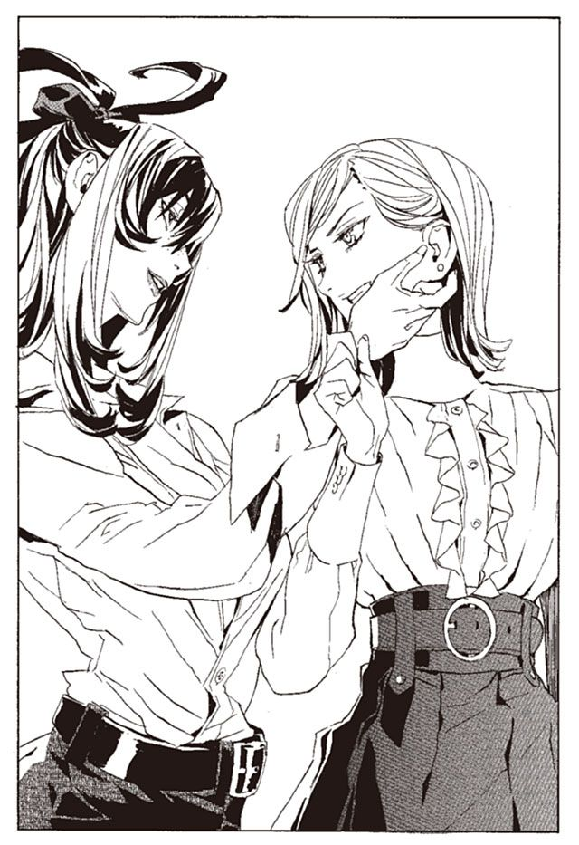
「わたしは、あなたに殺されたいのよ、オリビア」
そう言った瞬間、オリビアの体から急に震えが消えた。
「殺されたいの？ .........何それ。あんた、変な奴だな、殺されたいのか」
ハミュッツは、異変を感じる。オリビアは、けたたましく笑い始める。
「なんだ、あんたそういう女だったのか。なあんだ、知らなかったぜ。お互い縁が深いけど、考えてみれば顔を合わせるのも初めてなんだな」
「あら」
ハミュッツが目を丸くする。
「さっきから顔が近いぜ。気持ち悪いから離れろ」
ハミュッツの顔を押しのける。オリビアはソファに座りなおし、脚を組んだ。ハミュッツも向かいのソファに座る。
「あんたは抵抗して欲しいのか。そういうことなら話は早い。隠す必要もねえな」
「あら、あなた、反逆するつもりなの」
「当たり前さ」
ハミュッツにはにわかには信じられない。マットアラストに捕縛され、アーガックスの水で記憶を失おうとしている今、どんな反逆をするつもりなのか。
「疑ってるね。あたしをなめちゃいけないよ。これは全部、予定通りなんだから」
「マットに捕まるのが？」
「そうだよ。マットアラストの馬鹿は、あたしの策略通り、アーガックスの水を取りにいってくれてるのさ」
「あなた、アーガックスの水を飲んで、どうするつもりなの？」
「自分の手札を相手に明かす馬鹿はいないなあ」
「それもそうねえ」
ハミュッツは肩をすくめる。
「それでどうするの？ ハミュッツ。反逆者を殺す？」
「どうしようかしらね。口先だけかもしれないし」
「そう思っていてくれればありがたいな」
ハミュッツとオリビアは、笑いあう。なんとも奇妙な光景である。
「それで、あなたこれからどうするの？ わたしを倒せそうなの？」
オリビアは、不敵な笑みを浮かべて答える。
「手を明かすわけにはいかないんだけどな。まあいいや。親切で少しだけ答えてあげるか」
人差し指が、ハミュッツの胸に向けられる。
「まず、あたしの狙いはあんた一人の首ごときじゃあない。たかが館長代行一人の命で、満足するあたしじゃねえんだよ」
「大きく出たわね」
「そしてもう一つ。あたしの勝ちは、すぐそこにある。九割方、いや、九分九厘まであたしの勝ちは決定している」
オリビアは、さらに深く笑う。
「これはまた、嬉しいこと言ってくれるじゃないの」
ハミュッツは、オリビアが何を考えているのか見当もつかない。だからこそ、オリビアの勝利は揺るがない。オリビアがどう戦っているのかわからないなら、ハミュッツには勝ち目がないだろう。
「嬉しいわね、来てよかったわ。短気を起こして、殺さなくてよかった」
「だろ？ じゃあ帰りな。マットが帰ってきたら怒られちまうぞ」
ハミュッツは、アパートの外に出た。すぐ前で、ミレポックと出くわした。
「あら、ミレポ。今日は良い天気ね。気持ち良いわ」
ミレポックは首をかしげている。
「どうかしたんですか？ 代行」
ハミュッツがあまりにも楽しそうで、不安になっているのだろう。ミレポックは、怪訝そうに何度も振り向きながら、マットアラストのアパートへと入っていった。
――現在 １９２６年12月28日
それから、七カ月が過ぎた。
オリビアと話したことを、ハミュッツは誰にも伝えていない。マットアラストにもだ。伝えれば、オリビアは殺されるだろう。それではあまりにもつまらない。七カ月の間、ハミュッツはひたすら傍観に徹していた。
パーティを迎えたこの日まで、ハミュッツは考え続けている。オリビアの言っていた、「すでに決定した勝利」とはなにか、未だに手がかりすらつかめていない。
第三章 影は忍び寄る
――現在 １９２６年12月28日
パーティ会場の厨房で、忙しく働く青少年たちがいる。この店の従業員ではなく、武装司書見習いである。
一般人が酔った武装司書の喧嘩に巻き込まれたら重傷は免れない。そうなったら、たとえパーティの場でも重罪である。
よって、重傷を負う危険が少ない見習いたちが、強制的に駆りだされているのだ。
「こらー見習いどもー。さ、ぼ、る、な！」
新人武装司書で料理長のリズリーが、見習いたちの頭を順に叩いていく。見習いたちはサボっているわけではなく、単なる嫌がらせである。
リズリーは性格は最悪だが、戦闘力は高い。見習いたちは、腹立たしく思いながらも逆らえないのだ。
「ちくしょう、こんなの武装司書の仕事じゃねえぞ」
「エンリケさんのほうがまだましだったよう」
「いつか逆襲してやる！」
そんな愚痴をこぼしながら、見習いたちが働いている。
その中に、例外がいた。厨房の隅で皿を洗っている、ヤンクゥ＝クインという少年である。
見習いたちの中でも、ひときわ若い。十五歳か、もっと若いかもしれない。細いが、よく鍛えられた引き締まった体つきをしている。なぜか、体のあちこちに怪我をしている。
腹と両肩の出た、短いシャツと革のズボン。髪の毛は短いが、後頭部から一房、背中に長く伸びて紐で結ばれている。
優しく、どことなくぼんやりとした顔立ちである。だが目の奥には、利発な知性の光が見えた。彼だけが文句一つこぼさず、黙々と動いている。
「ヤンクゥ！ 皿洗ったら、このジャガイモ剥いて！」
リズリーがヤンクゥに向かって、中身が入ったままのバケツを放り投げた。ヤンクゥは中身を落とさずに、上手く受け止める。
「僕がいなくてもサボるなよ」
そう言いながら、料理の大皿を両手に載せて、会場へ飛んでいく。
リズリーがいなくなると、見習いたちの口からどっと不満が噴き出す。
「横暴な奴だよなあ、腹立たないのか、ヤンクゥ」
サワーソースをかき混ぜている見習いが、話しかけてきた。ヤンクゥは、冷静に答える。
「仕方ないよ。僕らが弱いのが悪いんだ」
「大人だよなあ、お前は。ああ肩凝った」
見習いの仲間は、首を回す。
「俺たちの待遇は、ずっとこのままなのかなあ、ノロティが生きてれば、もう少しましだっただろうになあ」
そう言った瞬間、彼は背後から小さく、馬鹿、とたしなめられた。誰と話してるのか忘れたかと、背後にいる見習いが言う。
「.........あんまり気を使わなくていい」
ヤンクゥが、バケツの中からジャガイモを取り出しながら言った。
「ノロティ姉ちゃんのことは、僕の中で受け止めてるから」
「そうか、わかった」
多少、気まずそうな顔で見習いが言う。しかし、気を遣ってしまうのは仕方がないだろう。ノロティの死を、彼がどれほど嘆いたかはここにいる全員が知っている。
ヤンクゥ＝クイン。ノロティとは同郷の出身である。そして、彼女に憧れて武装司書を目指した少年である。
――１９２６年１月
ヤンクゥは一度も神溺教団との戦いに参加しなかった。竜骸咳事件の辺りで、ようやく魔術審議を許される十三歳に達したところだ。参戦しようにも、足手まといにしかならなかっただろう。
ロナ国の司書学校でノロティの活躍を聞き、ヤンクゥは一人喜んでいた。ノロティには、自分が司書を目指していることを伝えなかった。伝えれば甘えてしまうような気がした。ノロティのほうでも、あれこれと世話を焼きに来るだろう。それが嫌だった。
今は、そのことを後悔している。
ノロティの足手まといになったかもしれない。何の役にも立たなかったかもしれない。それでも、一緒に戦いたかった。できることなら、ノロティの代わりに死にたかった。
ノロティの死を知ったときも、その後の大乱のときも、ヤンクゥは司書学校の宿舎で、ラジオに耳を傾けることしかできなかった。
蒼淵呪病の大乱から二週間後。ヤンクゥはバントーラ図書館地下の閲覧室で、ノロティの『本』を読んだ。閉鎖中のバントーラ図書館書庫には、ヤンクゥとミレポック以外の人影はない。静けさの中で、テーブルの『本』を箱にしまう音が、いやに大きく響いた。
「知らなかったわ。あなたのことも、ノロティの村のことも」
ミレポックは、目を伏せながら言った。
「一年も監督してたのに、肝心なことは何も言わなかったのね。やっぱり、私は信用なかったのかしら」
「姉ちゃんのことをどう思っていたんですか」
「.........実は、ライバルと思ってたわ。負けてたまるかって、ずっと張りあっていたわ。だけど、もう手の届かないところにいってしまったわね」
「.........」
「ノロティはバントーラ図書館の英雄よ。ノロティの名前は、エンリケさんとともに、永遠に語り継がれるでしょう。私なんかでは、どんなに背伸びしてももう届かないわ」
ヤンクゥは拳で、机を打ちつけた。頑丈な樫の机が、木屑になって飛び散った。
「なんで、英雄なんかに成り下がったんだ」
永遠に伝わる名前より、生きている一日のほうが価値がある。ノロティはそういう人だった。バントーラ図書館全てでも、ノロティの命とは釣り合わない。
ノロティはそういう人だった。
ノロティの『本』を読んだあと、ヤンクゥはまた司書学校に戻った。全校生徒を前に校長は、戦死した武装司書の穴は、君たちで埋めていかなければならないと言った。各人、いっそうの奮励を期待すると。
そしてヤンクゥを名指しで立ち上がらせた。
「とりわけ君は、当司書学校ではモッカニア以来の逸材である。素行、熱意ともに申し分ない。他の皆は、ヤンクゥを模範とし、ヤンクゥを追い越してやるという気構えをもって、訓練に励みなさい。
ヤンクゥは自身の才能に慢心せず、これからも努力を続けなさい。死んでいった武装司書たちの後を継げるように」
ヤンクゥは小さく返事をして、座った。しかし、わかっていた。自分は、イレイアやモッカニアの穴なら、埋められるかもしれない。しかし、ノロティの穴は、誰にも生めることはできないと。
ノロティの穴は、どれほど強くなっても、埋まらない穴なのだ。
――１９２６年３月
校長の言葉通り、ヤンクゥは模範的な生徒だった。実力は急激に増している。品行、訓練態度ともに申し分ない。
そのヤンクゥが、変わった。ノロティの穴は、ヤンクゥの心の中に空いていた。
「やめなさい！」
生徒同士の戦闘訓練の途中、校長はヤンクゥを止めた。止める手段は銃撃だった。言葉で制止したのでは、間に合わないほどの事態だった。
ヤンクゥは肩から血を噴出させながら、凍りついたように止まっていた。右手には木の短剣。切っ先は、訓練相手の生徒の胸、三センチのところで止まっていた。
相手は、腰から下を粘土のようなものにからめとられている。その目は恐怖に見開かれている。
「いくら木剣でも、体重をかけて突き込めば無事ではすまないぞ」
「すみません、熱くなりすぎました」
そう言って、飛びのいた。熱いのは頭だけではない。心臓も、息も、体も全てだった。
「拘束を解きなさい」
「はい」
ヤンクゥは魔法権利を解除する。相手の腰を捕縛していた粘土が、解けて消えた。あとには土ぼこりも残っていない。
ヤンクゥの能力は、泥である。不形体の泥を、体内で生み出して放出する。ヤンクゥの意思のまま、性質を自在に変える。凝固させれば石の固さになり、融解させればゴムにもゼリーにも水にも変わる。
殺傷力は低い反面、応用力は他に類を見ないほど高い。未だ発展途上の能力だが、完璧に使いこなせればヴォルケンやビザク並みの戦士になるだろう。
「すまない、やりすぎた」
と、ヤンクゥは相手に謝る。その相手に校長が言った。
「お前にも油断があった。相手がヤンクゥだからと、危機感を持っていなかったな」
「は、はい」
「訓練とはいえ、実戦のつもりで戦え。お前は一度死んだと思って鍛えなおせ。そしてヤンクゥ。これは実戦ではない。三日間の自室待機を命ずる」
「はい」
成り行きを見守っていた生徒たちが、呟いた。
「どうしちまったんだ、ヤンクゥ」
どうもしていないよと、言いかけてやめた。
ヤンクゥは、ノロティと同じように、人を傷つけることを嫌う。自分自身、人殺しはできない人間だと思っていた。
だが、最近、ヤンクゥはそれに疑問を持ち始めている。彼の中には、凶暴な何かが生まれ始めていた。あるいは、何かが目覚め始めていた。
――１９２６年11月
ヤンクゥは、実力十分とみなされて見習いに昇格することが決まった。正式な認可を受けるため、ヤンクゥと司書学校の校長はバントーラ図書館に赴く。司書学校の認可が出た後、見習いへの昇格が拒まれることはまずない。実際は顔見せ程度の意味合いである。
「十五歳で見習いに昇格したのは、現在の武装司書たちの中にも五人といない。しかしこれを名誉と思うな。何歳で武装司書になったかではなく、武装司書として何をしたかが重要なのだ」
バントーラ図書館の門をくぐる前、校長が言った。
「はい」
「すでに通達を受けているだろうが、君の監督官はマットアラストに決まっている。彼の言うことをよくききなさい」
校長とともに、マットアラストのデスクに赴く。マットアラストは書き物をする手を止めて、立ち上がる。校長と二言三言挨拶を交わした後、ヤンクゥに手を差し伸べた。
その手を握り返す。柔らかい握手だが、マットアラストの恐るべき腕力は伝わってきた。
「初めまして、マットアラストだ。こちらの校長に上手いこと、問題児の世話を押しつけられたわけだ」
普通は社交辞令でも、期待しているなどと言う場面だろう。しかしマットアラストは率直である。
「問題児、ですか。僕は」
「半年で五回も処分を食らう優良児はいないな。しかも全てが訓練中の過剰な攻撃行為ときた」
マットアラストは、机の上の書類を叩く。そこには、ヤンクゥの起こした事件が書かれている。この半年で、品行方正なヤンクゥは過去のものになってしまっていた。凶暴な衝動が胸の中から湧きあがり、自制が効かないのだ。
「いくら戦うのが仕事の武装司書といったって、最低限の節度を保てない人は、制裁の対象なんだぜ。君は、いったいどうしちまったんだ」
マットアラストは校長を下がらせた。そしてヤンクゥと二人だけで向かい合う。
「理由は、ノロティだな」
「はい」
「良い子だったよ。君が引きずるのも、当然だと思う。だけど、もう一年過ぎているんだ。そろそろ、自分の中で割り切ってもいいと思うんだが」
ヤンクゥは首を横に振る。
「割り切ってはいます。ただ、腹が立ってしょうがないんです」
「神溺教団にか」
「わかりません」
ヤンクゥは正直に答える。神溺教団は滅び、カチュアも、ノロティを殺したダルトムも死んだ。だから、もう怒りを持ち続ける必要はない。それはわかっているが、どうしても怒りが収まらない。ぶつける相手が見つからないのだ。
「やり場のない怒り、か。厄介だな」
マットアラストは帽子を押さえて、デスクの上の書類を手に取る。
「司書学校は卒業でいいと思う。だが、見習いに昇格はさせられないな。そんな気持ちを抱えたままで、責任ある仕事は任せられない」
「僕は、どうなるんですか」
「君は俺の預かりということにしておく。こんな制度は無いんだけど、代行には大目に見てもらおう。君が落ち着くまで、見習いへの昇格はなしだ」
「何をすればいいんですか」
「何も。とにかく、自分の中で整理をつけてもらう。つけられないなら.........」
マットアラストは、軽く笑う。
「ま、その時考えるか」
そのような事情で、ヤンクゥは長い暇をもらうことになってしまった。
バントーラ過去神島の宿舎に引っ越した後は、やることがない。図書館に知り合いはほとんどいない。司書学校の友人とは、度重なる暴力事件で疎遠になっている。ヤンクゥは街をぶらぶらと歩く。
こんなことをしていて、何か良いことがあるんだろうか。マットアラストの監督を受けていて、大丈夫なのだろうか。疑問ばかりが浮かんでくる。
当てもなく歩いていたヤンクゥは、バントーラ図書館の正門にさしかかる。踵を返して、街に戻ろうと思ったとき、横道があるのを見つけた。
「.........こんなところに道があるのか」
細い散歩道は、バントーラ図書館を囲っているらしい。ヤンクゥはその道に入る。
歩きながら考える。自分の中にある、やり場のない怒りのことだ。
神溺教団は滅んだというのに、ヤンクゥの怒りは静まらない。それどころか、むしろ深さを増しているように思える。
「何でだ？」
声に出して呟く。そう、怒りの対象はそこだ。
殺し合いが起これば誰かが死ぬ。それはわかっている。しかしどうしてノロティ姉ちゃんなのか。なぜ殺し合いが起こったのか。なぜ神溺教団があったのか。
なぜ。それを追い求めていくうちに、きりがなくなる。
怒りの対象は、神溺教団よりももっと大きい。怒りは、運命そのもの、世界そのものに向けられていた。
ただひたすら、腹立たしく、やるせない。そう思いながら歩き続けているうちに、声をかけられた。
「ようこそ、迷いの道に」
ヤンクゥは立ち止まり、道の横を見る。白木造りのベンチに、一人の女性が座っていた。亜麻色の短い髪と、さっぱりしたワンピースの、きれいな女性だ。
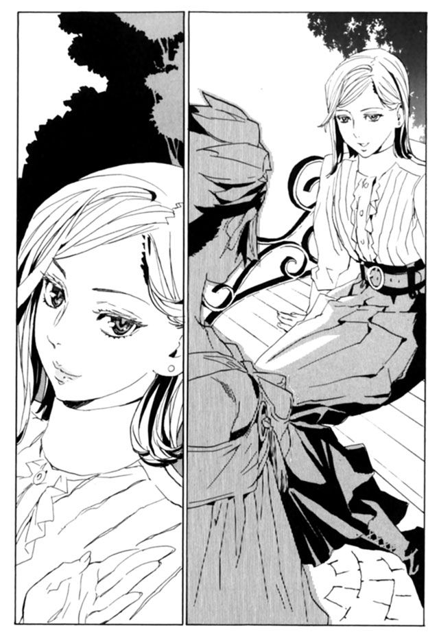
「.........ああ、ごめんな、急に声をかけて。たいした用事はないから気にするな」
女性は、顔に似合わない乱暴な口調で言った。
「......迷いの道？」
「あたしが勝手に呼んでるだけさ。どういうわけか、何かに迷ったり悩んだりしている奴は、この道を歩き回るんだ。
レナスって奴が、ここをぶらついていたことがある。その前には、モッカニアっていう奴がここを歩いていたよ。聞いたところによると、ミンスってのが同じようにこの道を歩いた。そうそう、ヴォルケンってのもいたかな」
女性が語った名前には、聞き覚えがある人が何人かいる。それは、たしか全員が。
「ジンクスが一つあってな。この道を迷いながら歩いた奴は、必ずバントーラ図書館から消える。不思議だよな」
女性はそう言って笑った。今気がついたが、時折彼女は、脚を叩いてほぐしている。彼女も散策の途中だったのだ。
「あなたもですか？」
「ああ。君もだな、尻尾頭の少年」
女性はヤンクゥの後頭部を見ながら言う。
「君は、何に悩んでる？ 言っても良いことはないが、悪いこともたぶんないぜ」
見ず知らずの、たぶん一度きりしか会わない女性だ。ヤンクゥは何の気なしに口を開く。
「一年前、僕は神溺教団に、大事な人を殺されました。それを今でも引きずってます。一年たっても割り切れません」
「一年前なら、昨日みたいなもんさ。大事な人の死なら、一生引きずるのが当たり前だろ」
慰めではなく、実感の籠もった言い方だった。
「で、君は何を悩んでるんだ？」
「僕は、戦いたい。あの人の死に決着をつけたい。でも、怒りばかりがこみ上げて、戦う相手がいないんです」
「そうかい。神溺教団は、滅んだからな」
その女性は、話の途中だというのに立ち上がる。
「だけどな、君の本当の敵はまだ生きてるぜ」
「え？」
「敵は、神溺教団だけじゃない。君の敵は武装司書さ」
「どうして？」
その女性は、ヤンクゥとは逆方向に進んでいく。
「それに、神溺教団はまだ生き延びているかもしれない。いや、たぶん、生き延びている」
振り向きながらそう言い残し、女性は去っていく。ヤンクゥは首をかしげて、その女性を見送る。ただの変な人だったのだろうか。
その女性のことはすぐに忘れた。しかし、言葉は頭の奥にしまいこまれた。神溺教団は生きている。そして、本当の敵は武装司書だと。
――１９２６年12月６日
過去神島にいても良いことはない。ヤンクゥは島を離れることにした。どのみち休暇中である。行く場所は、一つしかない。彼の故郷、南方辺境の諸島である。
飛行機の操縦はまだ覚えていないので、ヤンクゥは定期船のチケットを買って島へと向かう。一週間の旅を経て、南方辺境の港へ着く。
それからさらにボートに乗って、故郷の村へと向かった。
「.........？」
ヤンクゥは、水平線の向こうから小さな快速艇が近づいてくるのを見た。ヤンクゥの船のきっかり真向かい。故郷の村と街の港をつなぐ直線上だ。
「僕の村から来たのか？」
ヤンクゥは、快速艇に乗っている人物を、すれ違いざまに見る。三十かそこらの女性が一人で乗っている。見知らぬ人物だ。
相手も、ヤンクゥを見ていた。彼女の視線に、ヤンクゥは不穏な予感を感じた。
その予感の意味を知るのは、もう少し後のことになる。
故郷の村に着いた。村まで続く道を歩く。
ふと、人影を見つけた。それを見て、ヤンクゥはほっとした。ヤンクゥの胸のあたりまでしかない、小さな人影。赤い麻布を頭から被った少女である。名前はマニ＝リッカー。ヤンクゥの妹だ。
「兄ちゃん、帰ってきたの？ 本当に兄ちゃん？」
「そうだぞ、兄ちゃんだぞ！」
ヤンクゥは、口を閉じ、唇を横に広げて歯を見せる。
「いー」
「いー」
マニも同じ動作で答える。いつの間にか始まった、二人の挨拶だ。
ヤンクゥはマニの体を高く持ち上げて、優しく振り回した。昔は楽しんでいたマニだが、きゃあきゃあ悲鳴を上げた。それに構わず、ヤンクゥは振り回し続ける。
「怖いよ兄ちゃん」
「重くなったなあマニ。背も伸びた」
頭を撫でる。やっぱり、帰ってきてよかったと素直に思った。頭にこびりついていた怒りが、嘘のように消えていた。
マニは、ヤンクゥより六歳年下だ。今年で九歳になる。二人には血のつながりはないが、兄妹と呼び合うことに何の疑問も持たない仲だった。
「兄ちゃん、おみやげおみやげ」
「現金だなあ、変わったのは外側だけか」
そう言いながら、いつものナッツのお菓子をあげた。街では道を歩けばどこでも売っているようなものだが、この村では手に入らない。
「お返しに、これ」
マニが、ポケットの中から取り出したのは、小さなぬいぐるみだ。紙を折り曲げて作った、くす玉状のぬいぐるみである。南方辺境に生きる子供たちは、自分で作ったこのぬいぐるみで遊ぶのだ。
本来は綺麗な色紙で作るのだが、マニから渡されたのは小麦を包む紙袋を切って作った粗末なものである。だが、そんなことはどうでもいい。この、手間のかかるぬいぐるみを作ってマニは待っていたのだから。
「ありがとう」
バントーラ図書館の宿舎には、このぬいぐるみがいくつもある。しかし、いくら増えても邪魔になるとは思わない。
「お土産、これだけでいいのか？ 兄ちゃん、これからは給料もらえるようになるから、いろいろ買って来るぞ」
「あたし、これで遊ぶからいらない」
気を遣っているのではない。本心からそう言っていた。
「良い子だな、お前は」
ヤンクゥは言う。帰ってきて、マニに会ってよかったと思った。切れ目なく胸をむかつかせていた怒りが、マニの顔を見るだけで消え失せた。
そうだ。自分の務めは、この村を守ること。ノロティから、自分が受け継いだ使命を果たすことだ。やり場のない怒りなど意味はない。武装司書になることと、マニを支えることだけを、考えていればいいのだ。
遊びたいとはしゃぎまわるマニをなだめて、ヤンクゥは両親のいる家に戻った。
「ただいま、母さん。いたんだ」
中には、母親が一人で麻布を織っていた。マニと同じく、この人とも血のつながりはない。だが、親代わりとして育ててくれた人である。
「ああ。お帰り。待っていたよ。マニには会ったかい」
「さっきそこで。元気そうでよかったよ」
「いつも元気なのはあの子だけさ」
ヤンクゥに、豆を焼いて淹れた茶が出された。この村で昔から飲まれている、懐かしい味だ。それを飲みながら、母親と話をする。
「もうすぐ見習いになれそうだよ。仕送りする余裕もできると思う」
「すまないね。あんたたちには、迷惑かけるよ」
ノロティは、見習いとして勤めていた一年間、この村の皆に仕送りを続けていた。その金で、村は支えられていた。自分に才能があってよかったと、心底から思う。見習いになるのが、あと一年遅れたら村は破産するだろう。
「だけど、心配だよ。ノロティみたいなことに、なるんじゃないかって」
「.........大丈夫。戦いはもう終わったよ。それに僕、たぶん姉ちゃんより強くなるから」
「だから心配なんだよ」
一年前、ノロティの『本』を読んで知ったことがある。この人は、赤んぼうだったマニを間引きしようとした。それに激怒したノロティが暴れまわり、村を出ることになったのだ。
しかし、ノロティの行動で、この人は変わった。辛くても、マニを育てようと決意してくれたのだ。確かにノロティの存在は、村を導いていたのだ。
ヤンクゥも、それに続かなければならない。
「そういえば母さん、出稼ぎのほうはどう？」
数カ月前、手紙で知らされた近況のことを思い出す。母はマニの子育ての合間に、鉱山で働いている。
「どうもこうもない。辞めちまったよ」
「どうして！」
母親は、途中で物事を投げ出すような人ではない。何か事情があるはずだ。
「.........男どもが、鉱山の人から金を盗んでいったのさ。あたしも、共犯だって言われてさ」
「母さんはやってないんだろ？ なら、鉱山に行ってくる。武装司書の人とは知り合いだし、話のわかる人だから.........」
「いいよ。やめとくれ。武装司書のカルネさんはわかってくれたさ。だけど、他の鉱夫や一般司書は、信じてくれなかったんだよ。
あたしをかばえば、カルネさんの立場まで悪くなるだろ？」
「.........ちょっと、出てくる」
家を出ると、マニが遊びたいとせがんできた。マニを待たせて、村のはずれに行く。
今は使われていない山羊の小屋に、彼らはいた。数人の男たちが、車座になって酒を飲んでいる。そこにはマニの父がいる。今の村長までもがいた。
「なんの用だ？」
酒の匂いを撒き散らしながら言う。
「盗んだものを返せ」
「ああ、これだよ」
金の代わりに、男たちの一人は空になった酒瓶をヤンクゥの足元に投げ捨てた。ヤンクゥは怒りを込めて、瓶を足で踏み潰す。
「久しぶりの酒で、いい気分になってきたぜ、おいヤンクゥ、お前もやろうや」
と、マニの父が瓶を掲げる。
「.........母さんや、リグおばさんは働いてるんだぞ」
「ああ？」
「恥ずかしくないのかお前ら」
酒瓶が飛んできた。顔に当たる前に、ヤンクゥの泥が地面に叩き落とした。
「俺らの勝手だろうがごちゃごちゃ言うなこのガキが！」
男たちを、劣等感と絶望がむしばんでいる。そのしわよせは、女性と子供に来ている。もしヤンクゥがいなければ、村の女性に何をやらせているかわからない。金になることなら、なんだってさせているだろう。
「文句があるのかよ」
「ある。働け。酒を飲むな」
ヤンクゥが、彼らに一歩近づく。男たちが、嘲りながらヤンクゥを挑発する。
「文句があるなら殺せよ。ほら、やってみろよ」
「俺らあ命なんざ惜しくねえよ。ほおらやってみなよ」
ヤンクゥが村に戻るたび、毎回毎回、このようなやり取りを繰り返す。ヤンクゥが村人を殺せないことがわかっていて、こんなことを言うのだ。
わかっているのだろうか。ヤンクゥが彼らのために、どれほど必死にこらえているのか。殺さないでいるために、どれだけ努力しているのかを。
「.........くそ！」
ヤンクゥは一言吐き捨てて、外に出た。
村を守りたいと、ヤンクゥは願っている。そのために、日々を捧げている。なのに、なぜ守ろうとするものが、壊れていくんだろう。
武装司書になりたいと願っているのは、村のためだ。もし村がなくなれば、自分はもうバントーラ図書館で働く意欲を失うだろう。そうなれば、図書館にはもういられない。
その後、自分はどうなってしまうのだろう。
「.........兄ちゃん、どうしたの？」
村に戻ると、マニが寄り添ってくる。不安そうなマニに笑いかけ、心配ないとヤンクゥは言った。その日は、マニと遊びながら夜を過ごした。
夜が更けたころ、ヤンクゥは寝床の中で母と語り合った。
「なあ、ヤンクゥ、お前このままでいいのかい？」
「何が？」
「もう、この村のことを考えなくてもいいと思うんだよ。何もかもあんたに背負わせちゃ、あんたが可哀相さ」
「じゃあ、この村はどうなるんだ」
「.........外で働ける奴は外に行くよ。街で働いて、子供たちは学校に行って、生きていくよ。それだけだよ」
それは、かつてノロティが言ったことだ。村では暮らせないから、外の世界で働こうと、かつてノロティは言った。それは必ずできると、証明するために武装司書を目指したのだ。
「.........嫌だ」
と、ヤンクゥは言った。そこだけはヤンクゥとノロティで意見が違った。
「この村は、僕が守る。武装司書になれば金も入る。移住のための費用も作れる。それまで、みんなを散り散りにしたくない」
「.........なあヤンクゥ」
「マニは外に行くのを嫌がってる。母さんだって、この村にいたいだろ？ それに僕も、帰るところがなくなるなんて嫌だ」
「ヤンクゥ、あんた一人で全部背負うのかい。あんただけで、それができるのかい。もうよしとくれ。しかたないんだよ」
母の言葉が現実的であることは、ヤンクゥにも十分わかっている。武装司書になり、金をためるためには長い時間がかかるだろう。それに武装司書になれる保証もない。
そして、村人の心は取り返しがつかないところまで荒廃している。
「しかたないなんて思わない。何があっても、絶対に、村を守ると決めたんだ」
「.........でも」
「もういいよ、その話は」
ヤンクゥはそう言って、強引に会話を打ち切った。息の詰まる沈黙が流れる。ヤンクゥは別の話題を探した。
「そういえば、今日、来客があったんじゃないか？」
海上ですれ違った船のことを思い出した。
「いいや、来ていないよ」
「おかしいな、すれ違ったんだけど」
「もしかしたら、ラティさんじゃないかい？ 眼鏡をかけた、金持ちそうな女の人でしょう？」
ちらりと見た女性の姿を思い出す。
「そう、多分その人だよ」
母親は起き上がる。
「あんたにもそろそろ話しておいたほうがいいかもしれない。ここしばらくね、外のお金持ちの人が訪ねてきて、うちの村を援助したいって言ってるのよ」
初耳だ。ヤンクゥは思わず起き上がる。
「どんな人だ？」
「人なのか、なんかの組織なのかよくわからない。とにかく外の人だよ」
「おかしな話だな。僕たちを騙すつもりじゃないのか？」
「わからないよ。でも、おかしな人たちだよ。あたしも詳しく話を聞いてないんだけど.........
村というより、マニを援助したいのかもしれない」
「マニ？」
ますます、理解できない。マニに用事のある外の人間など、見当もつかない。里親になりたいという慈善家がいるのかもしれないが、村全体に援助するのはおかしい。
「マニとはよく話してるみたいだけど、あたしは何にも聞いてないんだよ。だから、マニに聞いておくれ」
しかし、マニは涎をたらしながら寝息を立てている。話を聞くのは、明日の朝にしよう。
「それじゃ今日は、そのラティさんは何をしに来たんだ？」
「たぶん、新しい島に行ったんじゃないかな。その帰りだと思う」
「.........ちょっと、行ってみる」
ヤンクゥは起き上がった。明日でも構わないが、ひどく気にかかった。村を出て、ボートを停泊させている港へ走る。
新しい島とは、かつてバントーラ図書館がこの村のために買った島である。本来なら、村人はそこに移り住み、新しい生活を始めるはずだった。
しかし、村人はその島の開発費も、移住のための費用も、全て浪費してしまった。現在は、住む者もいない無人島になっているはずだ。
ヤンクゥのボートは、島に着いた。ボートを降り、カンテラを下げて夜の島に入る。
島を囲っていた有刺鉄線が、取り外されている。ヤンクゥは中に入る。
カンテラで、地面を照らす。声を上げて驚いた。雑草だらけだった島の地面が均されている。岩や小石が取り除かれ、農地として使える状態になっている。
「誰がやったんだ？」
開拓されているのは、島の一部だけだ。しかし、狭い面積ではない。ヤンクゥはさらに島を見渡す。
小屋がある。工事に使う機械が、しまわれている。
その横に井戸を見つける。汲んで一口飲むと、質の良い水の味がした。
「そんな馬鹿な」
ヤンクゥは呟く。誰がやったのだろう。半端な投資でできる工事ではない。
バントーラ図書館が動いているのかと考えた。しかし、すぐに否定する。
数カ月前、ノロティの村のために、もう一度移転費用を捻出できないかと動議が出された。ミレポックのほか、ノロティと親しかった数名の武装司書からだ。しかしすぐに否決された。動議を出した武装司書には、ユキゾナから訓告処分が下された。
武装司書は、敵対者以外の万人に平等でなければならない。特定の地域や人物へのひいきは、殺人に匹敵する大罪である。それを許せば、武装司書はただの利益追求組織に堕してしまいかねないからだ。
武装司書のわけがない。ならば、誰がやったのだろう。
素性を明かさず、巨額の金を秘密裏に動かす。まるで神溺教団だとヤンクゥは思った。
「.........」
迷いの道で出会った女性の顔が、脳裏に浮かんだ。まさか、そんなわけがないと、ヤンクゥは否定する。
次の日の朝、ヤンクゥはマニを村から連れ出した。村の隣の丘を越え、林の手前で止まる。連れ出したのは、話を聞くためだ。
「ねえ、どうしてこんなとこに？」
マニが聞いてくる。答えに少し困る。誰かに盗み聞きされるのを防ぐためだが、聞かれて困る話なのかは、ヤンクゥ自身にもわからない。
ただ、何か妙な予感がした。
「あのさ、ラティさんのことなんだけど」
切り出した瞬間、マニが大きな声で否定した。
「知らないよ、ラティさんなんて」
「.........」
ヤンクゥは目を丸くして、マニを見つめる。嘘をついているのは、顔に書いてある。わからないのは、なぜ自分に嘘をつくかだ。
「なんで、隠すの？」
「.........あの、兄ちゃんにはまだ、秘密にしてくれって言うから」
「ラティさんが言ったのか？」
マニは頷いた。不審や疑惑を通り越して、恐怖すら感じた。知らぬ間にそばに忍び寄っていた、謎の人物ラティ。何者なのだろう。
「なんなんだ、ラティっていうのは」
「あの、良い人だよ、すごく良い人なの。この村を支えたいって言うんだよ」
「良い人なのに、僕には話せないのか？」
「まだ、言わないほうが良いってラティさんが言うから.........」
なんだそれ、とヤンクゥは思った。詐欺師か、それとももっと恐ろしい何かなのか。
最初に、最悪の事態の可能性を消しておきたかった。絶対にありえないはずだが、万が一の可能性が脳裏に浮かんでいた。あの、迷いの道の女性が言ったことだ。
「まさかその人、神溺教団とか言わないよな」
今度はマニが、目を丸くした。
「どうして知ってるの？」
足元の地面が消えたような気がした。一瞬、腰を抜かしたヤンクゥは、背後の地面に手をついた。
「神溺教団って、言ったのか？」
「うん。一回だけだけど」
マニは確かに頷いた。
「この村を、神溺教団の村にしたいんだって。あ、言っちゃだめなんだ」
慌てて口を押さえるマニを、呆然と見ていた。
マニたち一般の人間には、神溺教団のことは伝わっていない。一年前、世界を滅ぼしかけたことなど、無論知らない。伝えることも許されていない。
何よりマニは、そのラティという人物のことを信じきっている。神溺教団のことを話すわけにはいかなかった。
ヤンクゥは、マニを連れて村に戻った。母親から、ヤンクゥに手紙が来ていることを知らされた。
差出人は、『マルグント人類進歩財団』と書かれている。その下に小さく、『理事ラティ＝マルグント』と書かれていた。どうして、今自分が村にいることを知ったのかはわからない。
文面は、型どおりの挨拶。それに続いて、会合の提案だった。
村とマニの将来に関わる、重大な相談事。是非とも会いたいと書かれていた。
神溺教団とは、手紙のどこにも書かれていない。だが、ヤンクゥの頭の中では、その名が渦巻いていた。
『神溺教団は滅んでいない』
あの、奇妙な女性の言葉が何度も木霊していた。
「どうしたの、兄ちゃん」
マニが、不安そうな声で尋ねてきた。内心の動揺が顔に出ていたらしい。ヤンクゥは慌てて作り笑いをする。
「なんでもない。大丈夫だよ、マニ」
「.........何が、大丈夫なの？」
聞き返されて答えられなかった。何が大丈夫なのだろうか。神溺教団の手がこの村に迫っているのに。
「大丈夫、とにかく大丈夫だ。でも、僕はやることがあるからもう行くよ」
ヤンクゥはせわしなくマニに別れを告げ、村を出て行こうとする。
「兄ちゃん、戻ってくるよね」
その時、ヤンクゥの後ろ髪をマニが掴んだ。不安そうに尋ねてきた。
「何でそんなこと聞くんだ？ 戻ってくるさ」
「本当に？」
「お前に兄ちゃんが、嘘ついたことあるか？」
マニが頷き、手を放す。ヤンクゥは急いで村を発つ。
ヤンクゥは、心の中で決意する。そうだ、自分はマニに嘘などつかない。この村は大丈夫だ。そして、自分は必ず生きて帰る。
――現在 １９２６年12月28日
ジャガイモを剥いていたヤンクゥは、背後の気配に気がついた。座っていた木箱から跳ね上がるように立ち上がった。
「うわ、びっくりした」
背後の人物が、ヤンクゥに驚いて飛びのいている。
一カ月前、迷いの道でヤンクゥと出会った女性、オリビア＝リットレットである。なぜか厨房に入ってきていた。手にアイスペールを持っている。
「どうしましたか、オリビアさん」
リズリーが話しかけてくる。
「酒に入れる氷が切れたんだけど。あるか？」
「ありますよ。ちょっと待ってください」
リズリーがアイスペールを受け取り、氷の塊を削って入れる。その間、オリビアはなぜかヤンクゥの顔を見つめていた。
「どうかしましたか？」
「なあ、どっかで会わなかった？」
オリビアが、ヤンクゥの目を見つめながら言う。
「いいえ」
「そうだよな。面白い髪だし、会ってたら覚えてるか」
オリビアはヤンクゥから興味を失ったようだ。リズリーからアイスペールを受け取り、会場に戻っていく。ヤンクゥは小さく息を吐き、ジャガイモの皮剥きに戻った。
――１９２６年12月15日
ラティから指定された会合の日にちと場所は、十二月十日のこの村だった。それを、二週間後の二十四日まで延期するように手紙を書いた。一度バントーラ図書館に戻り、対策を立てるためだ。会合の場も、村から少し離れた無人島に変えることにした
ヤンクゥは船で一週間かけてバントーラ過去神島に戻っていた。
休暇は続いている。特にマットアラストに顔を見せる必要はない。それに、今はそれどころではなかった。
街の中を走り回り、あの迷いの道で出会った女性の姿を探した。
神溺教団は滅んでいない。それを聞いて、最初に話を聞きに行くのが、武装司書ではなく見知らぬ女性。奇妙な話だが、今は頓着している余裕もない。
「いた！」
見つけたのは、仕立て屋の店先の中だった。最初に会った時は、予言者のような人だと思っていたので、そんな日常的な場所にいるのが不釣合いに思えた。
ヤンクゥは中に駆け込む。
「いらっしゃい。注文？」
女性はぶっきらぼうな口調で応対してくる。ただの客だと思っているらしい。しかしすぐに、ヤンクゥのことを思い出したようだ。ただごとならぬ雰囲気にもすぐに気づく。
「あと三十分で閉店する。店の裏を空けておく」
ぶっきらぼうにそう言って、外を指差した。ヤンクゥは、言われたとおりに外に出た。
三十分後、その女性はミシンをかけながらヤンクゥを出迎えた。
「ぶしつけだが、すまんな。あんたの事情がどうでも、店は毎日やってんだよ」
その人は、オリビア＝リットレットと名乗った。名前は知っていた。肉たちに記憶を取り戻させた、英雄的女性と聞いている。
ヤンクゥも名乗る。オリビアは彼の名前は知らないが、ノロティとは旧知の仲だという。ノロティが、世界を救った功績も知っていた。
「それで、神溺教団が生きていたのかね」
ヤンクゥは頷く。
「やっぱり、そうか。そうでなきゃいいと、思ってたんだがな」
オリビアは悲しそうに言う。しかし、どこか他人事のような雰囲気も感じられた。
「どうして、それを知っていたんですか。それより、武装司書に言わないのはなぜ」
「.........あんたも、マットやハミュッツに言ってないんだろ？ 神溺教団が滅んでないんだぜ、さあ大変だ。正義の味方の武装司書に伝えなきゃいけないんじゃないか？」
ヤンクゥは口籠もる。
他の武装司書に伝えていないのは、オリビアが本当の敵は武装司書だと言ったからだ。それだけではない。神溺教団の謎は解明され、完全に滅んだと発表された矢先の事件だ。マットアラストたち武装司書の上層部に、ヤンクゥは不信の念を抱いていた。
「まあ、あんたの判断は正しいよ。ハミュッツに下手なこと喋ったら、あんたは消されていたかもしれない。神溺教団が生きてることなんて、ハミュッツには先刻承知のはずだからな」
「どうして、そんなことがわかるんですか。そもそも、あなたはいったい...」
オリビアは、窓の外を見つめた。しばらく何かを考えていた。
「ハミュッツが触覚糸でこの話を聞いてるかもしれないな。まあ、気にするこたないか。用心のしようがねえ」
「あなたは、いったい何者なんですか？」
オリビアは一つため息をついた。
「何者でもないよ。ただの一市民だ。何の力もない、普通の女だよ」
そんなはずはないと、ヤンクゥは思う。ただの一市民が、神溺教団の秘密を知っているわけがない。
「その前に、あんたのことを話しなよ。なんだって、神溺教団が滅んでないって知ったんだ」
ヤンクゥは、自分の村のことを話した。神溺教団が接近していること、妹のマニに取り入っていることを。
「そうか、大変だとは思うが、あたしは何もできないよ」
「そんな、助けてくれないんですか？」
オリビアは首を横に振る。
「あたしには、何もない。本当に何にもできないんだよ。あたしに期待するな」
「あなたは、何者なんですか？」
ミシンを動かす手を止める。そして、少しの間目を閉じて、何を話すか頭の中で整理をしている。話し始める。
「あたしが、どうやって神溺教団と戦ったかは聞いているな」
ヤンクゥは頷いた。
「実は、あたしはその時のことを覚えていないんだ。船の中にいたときのことは覚えている。だけど、ヴォルケンに連れられて過去神島を去ってから、マットに連れられて過去神島に戻ってくるまでのことがほとんど記憶にねえ。
ハミュッツとマットアラストに、記憶を消されたんだよ」
「どうして？」
「黙って最後まで聞きな。
あたしは、それから心の中に違和感を持ち続けていた。大事なことを忘れていると感じていた。
あたしは、微力だが魔法権利を持っている。アーガックスの記憶抹消を、解除する能力だ。その力を使って、何カ月もかけて、思い出した。人生で最初の友達、ベンド＝ルガーっていう、馬鹿野郎のことさ」
オリビアは、ベンド＝ルガーのことを語った。戦場をさ迷い歩いていた、奇妙な鉛の戦闘兵器。誰かに覚えてもらうために生きていた、悲しい人形の話だ。
ベンド＝ルガーは神溺教団に生み出され、ハミュッツに殺された。
「でもな、これは知っちゃいけないことなんだ。武装司書たちは、あたしを捕まえてベンド＝ルガーの記憶を消したんだ。
どうして、ベンド＝ルガーのことを知っちゃいけないか、わかるか」
オリビアは言葉を切った。ヤンクゥは考える。神溺教団は、敵のはずだ。その敵を倒したことを、どうして隠さなければいけないのか。しばらく考えて、ヤンクゥは気がついた。
「それ、何年前の話ですか？」
「わかったらしいな。十年かそれ以上前だ」
それが意味することは何か。オリビアは語り続ける。
「ハミュッツ＝メセタは少なくとも、十年前から神溺教団のことを知っていた。教団が存続していることも、戦闘兵器を生み出していることも」
「.........代行は、どうして、黙っていたんだ。その時に、神溺教団を滅ぼしていたら、みんな死ななかった。ノロティ姉ちゃんも、仲間の皆も、何千人もの人も、誰も死ななかったのに」
「どうしてだろうな。あたしにはわからん。だけどな、考えてみろ。十年前、神溺教団の存在を知っていたのはハミュッツだけだと思うか？」
「.........」
「当時の館長代行のフォトナはどうだ。その前の代行は？ ハミュッツの腹心のマットアラストはどうだ。次の代行のユキゾナやボンボは？」
「.........」
「違和感を感じたことはないか。どうして、神溺教団が千何百年もの間生き延びてきた？ その神溺教団が、なぜ今回はあっさりと滅んだ？」
「.........それは」
「武装司書は、神溺教団を守ってるんだ。倒したと見せかけて、存続させてるんだよ。武装司書と神溺教団の戦いは、出来レースなのさ」
ヤンクゥは、眩暈すら感じた。ベンド＝ルガーという一人の人物の記憶。それが、平和だと信じていた世界の虚像を暴いていく。
「ハミュッツは、ベンド＝ルガーの敵だ。あたしの半生の敵で、死んでいった仲間たちの敵だ。だけどな、それを知っていたところであたしには何もできないんだよ。あたしは戦う力なんてない。一緒に戦ってくれる仲間もいない。誰かに敵を討ってくれと、呼びかけることもできない。そんなことをしたら、あっと言う間に殺されちまう」
「.........」
「もう、帰りな。あたしと話してても、良いことは何もないよ」
オリビアはドアを開け、帰れと促す。ヤンクゥは立ち上がれない。
「僕は、どうしたらいいんでしょうか？」
「そのマニちゃんを連れてどっかに逃げな。それぐらいしか、ないだろう」
「戦えないんですか？ 他の武装司書にそのことを伝えれば、みんな戦ってくれるはず」
「武装司書の上層部が、神溺教団を保護してるんだぜ。どうせ、潰されるだけさ。
そもそもこんな話、誰が信じてくれる？」
「打つ手はないんですか？」
「ないね。少なくともあたしの頭には」
「.........くそ！」
話を聞きながら、ふつふつと怒りが湧いてきた。
ヤンクゥは、壁を殴りつけた。店を壊すなと、オリビアがたしなめる。
神溺教団はノロティを殺し、自分の村まで潰そうとしている。それを武装司書が容認しようとしている。
ノロティは何のために戦ったのだ。何のために死んだのだ。
許せない。
絶対に、許せない。
ノロティが死んでから、ヤンクゥの中でたぎっていた怒り。理不尽な運命と、ままならない世界への怒り。それが今、武装司書への怒りへと転化された。
燻っていた燃料に、酸素が送り込まれたかのように燃え上がった。
「やめな、坊や。逃げるんだよ。戦って勝ち目のある相手じゃない」
ヤンクゥは吐き捨てるように言う。
「オリビアさん、僕は戦います。あなたがなんと言おうと、関係ない。武装司書を、許さない」
「.........坊や」
オリビアは、額に手を当ててため息をつく。彼女に背を向けて、外に歩いていく。
「よしてくれよ、戦うなんて。あたしだって、正真正銘の外道じゃないんだよ。あんた一人、見殺しにするなんてできないよ」
ヤンクゥは振り向く。
「あたしも、やるよ。爪も牙もないけど、囀るぐらいならできるさ。なら、精一杯囀ってやるよ」
ヤンクゥとオリビアは互いの目を見つめ、小さく頷きあう。
「接触は、今後は絶ったほうがいいと思う。あたしが死んでも、あんたが生き残ればいい。その逆もしかり。互いに、互いのことは忘れて勝手に戦うことにしよう」
ヤンクゥは頷く。そして、仕立て屋から出て行った。
オリビアと話して、わかったことは、絶望的な状況だけだ。村を守るために神溺教団と戦わねばならないのに、武装司書すら味方ではない。
いや、それどころか、武装司書こそ真の敵なのだ。
どう足掻いても勝ち目のない戦いに挑もうとしているのに、ヤンクゥの心に迷いは無かった。それどころか、鼻歌でも歌いたいような高揚感に満ちていた。
胸が高鳴っている。顔が熱い。心が逸る。怒りと殺意に、体が踊りそうになる。
ヤンクゥは笑った。その顔はかつて、武装司書を滅ぼし、世界を滅ぼそうとした、アーキット＝クロマの笑顔に何処か似ていた。
――１９２６年12月18日
ヤンクゥは宿舎の自室に戻っていた。オリビアとの接触は、言われたとおりに絶っている。ヤンクゥは三日間、部屋の中で考え続けていた。
冷静にならなければならない。決意は熱く、思考は冷たく冴えていなければならない。村を守るのだ。神溺教団と、武装司書と、たった一人で戦うのだ。
神溺教団の尖兵、ラティ＝マルグントからの手紙を見る。ここに来る前に、会合の日時を延期するように連絡を出してある。
対策を考えるまでに、猶予が必要だったからだ。その判断は、正しかった。
会合の時まで、時間はもう少しある。その前に、やるべきことをやっておこう。
「.........泥よ」
ヤンクゥは、魔術審議を発動する。手の中から泥を放出し、部屋の床を満たす。そして、泥の中から硬化した粘土の刃が、数十本突きあがる。
一般人なら、問題なく倒せる力だ。しかし、しょせんは見習いである。現在のヤンクゥでは、ミレポックにも勝てないだろう。ハミュッツやマットアラストとは戦いにもならない。いくら将来有望と言われていても、魔術審議を始めて二年ではその程度だ。
力が要る。まず考えたのはそれだ。
仲間を集めることは、最初から頭の中になかった。誰も信用などしない。頼れるのは、自分一人と決めている。
一人で神溺教団と渡り合う。それを可能にする力。しかも、今すぐに手に入る力。そんな都合の良いものが、存在することをヤンクゥは知っている。
「.........だが、可能なのか」
ヤンクゥは頭を絞る。力を手に入れる策を練る。
難しいだろう。だが、この程度のことを為し遂げられないなら、村を守ることは夢のまた夢だ。
村を守るためには、危険な橋を何度も渡らねばならない。これは、その最初の一つだ。
ヤンクゥは立ち上がる。
「ほほう、マットさんが、そんなことをねえ」
図書館地下、封印書庫の入口で武装司書、キャサリロ＝トトナは言った。彼女は生前のノロティを可愛がっていたこともあり、ヤンクゥとも見知らぬ仲ではない。
マットアラストから、事実上の謹慎処分を受けていることを、封印迷宮の前でキャサリロに話した。
「マットさんも変なことするねえ。君は全然問題児なんかに見えないよ」
キャサリロは、素直にヤンクゥに同情の色を見せる。
「いろいろ問題を起こしましたけど、反省しています。でも、マットアラストさんはまだ納得してくれなくて」
「可哀相に。君も早く武装司書になりたいんでしょ？」
ヤンクゥは頷いた。
年末が近づき、バントーラ図書館でも働いている一般司書の姿はまばらになっている。武装司書たちも、封印迷宮から離れ、一年の仕事納めをしている。今現在迷宮に潜ろうとしているのは、キャサリロ一人だ。
「それであたしに何の用さ？」
「マットアラストさんに言われた以上、まだ戦闘訓練を行ってはいけないと思います。だから、過去の武装司書の『本』を見て、戦い方の研究をしたいんです」
「向上心が高いね。うちの見習いどもに爪の垢でも飲ませたいさ。大急ぎで持ってくるから、五時間ぐらい待っててね。『本』の配架のついでに持って来るよ」
そう言ってキャサリロは、第五封印迷宮の門を開ける。
「たった五時間で戻ってこれるんですか」
ヤンクゥが驚く。
「あたしを舐めちゃいけないさ」
と、キャサリロは笑った。
迷宮に向かう彼女は、大変な大荷物だ。配架する『本』が入った箱を背負っている。
それだけではない。全身のさまざまな箇所に装着した、十二丁の銃。それに、予備の銃をさらに五丁ほど。それに加えて、ドラム缶一個分の弾を小さな車輪のついたカートに積んで、がらがら大音を立てて引いている。人一人で持てる量ではない。馬二頭でもどうかという量だ。
「じゃあ行ってくるわね」
そう言うと、全身の銃とドラム缶が空中に浮いた。それらが一列に並び、カルガモの子供のように、キャサリロのあとをついてくる。
これがキャサリロの能力だ。恐るべき精密さの念動力で、特別製の銃を十二丁、空中で同時に操る。一丁一丁が一流のスナイパー並みの精度を持ち、戦車の装甲を破壊する威力を持つ。
火力だけならマットアラストの五倍を軽く超える実力者だ。
彼女を見送りながら、ヤンクゥは心の中でほくそ笑んでいた。策に利用するには、うってつけの相手だ。
五時間後、特別閲覧室の一室でヤンクゥは、『本』を読んではノートにペンを走らせていた。過去の武装司書の戦法をまとめ、自分が取り入れられる部分を見つけていく。
もちろん、これは本当の目的ではない。だが、キャサリロに疑われている気配はない。元来は勤勉な学生だったヤンクゥだ。いつもどおりにやればいい。
「はい、そろそろいいかな。『本』を返しに行くよ」
しばらくたって、キャサリロが机に散らばった『本』をまとめていく。
「すいません、何から何まで」
「別にいいのよ、ついでなんだから」
そう言ったキャサリロは、工具の入った箱を抱えている。この後の彼女の仕事は、第三封印迷宮の中にある電信設備の点検である。
ヤンクゥの待っていた時が来た。
緊張が走り、キャサリロを騙す罪悪感が胸をよぎる。キャサリロが、迷宮に入ってから数分後、ヤンクゥはそのあとを追いかけた。
キャサリロの靴音が、遠くから響いてくる。幸いにも彼女は今日、底の固い革靴を履いていた。靴音を追跡できなければ、見失っていただろう。
ヤンクゥは自らの能力、泥を放出する。そして粘度を調節しながら、床に敷き詰める。その上を歩けば、足音は立たない。
「.........いける」
呟いた言葉は、ヤンクゥの口元に近寄らなければ聞き取れないほどの小ささだ。何があっても、キャサリロに尾行を気づかせてはいけない。
どれくらい歩いただろうか。その間、背後から衛獣が襲ってこないことを、ただ祈り続けた。キャサリロは、二百メートルほど先を歩いている。靴音は高く響いている。
「.........幸運が、続いてるな」
ヤンクゥは呟いた。
他の武装司書に見つかれば、問いただされることは間違いない。が、その心配は今日ばかりはない。第五封印迷宮に、武装司書や見習いの姿はない。このようなことは、年の終わりから年明けまでの、一時期しかない。普段から迷宮は静かな空間だが、その静寂は今日は物理的な重さで、耳を圧迫するようだ。
もう一つの幸運は、キャサリロの協力を得られたことだ。
「！」
次の瞬間だった。
突如、轟音が聞こえてきた。キャサリロの銃声である。数十人が銃撃戦を展開しているような音だが、戦っているのは一人だけだ。
この轟音が、ありがたい。ヤンクゥはすぐさま駆け出して、キャサリロを視認できるところまで接近する。
宙に浮いた十二丁の銃が、衛獣の騎兵を取り囲んでいる。圧倒的な火力で、騎兵の体が見る間に千切れ飛んでいく。その隙をヤンクゥはつく。
魔法権利を発動する。ヤンクゥの足元に両手で握れるほどの泥が生まれる。音もなく封印迷宮の床を滑り、キャサリロの足元へ向かう。キャサリロの背後で、宙に浮いているドラム缶へと、生き物のように飛び上がる。ドラム缶の底に、上手く付着した。
「楽勝！」
キャサリロの楽しげな声が聞こえてくる。ヤンクゥは足音を立てないように、身を隠す。
足音は遠ざかっていく。付着したドラム缶の泥に、気がついている様子はない。
これでよし、とヤンクゥは思う。最初のステップを越えた。
やがて、キャサリロは第五封印書庫にたどり着いた。キャサリロが通り過ぎてから、数分後にヤンクゥもそこに入る。
目的はこの先にある。ヤンクゥの目的は、第四封印書庫に収められている武器、かつてハミュッツを追いつめ、モッカニアを撃破した、常笑いの魔刀シュラムッフェンだ。
キャサリロは第四封印迷宮を歩いている。この先を尾行することはまず不可能だ。第五封印書庫を越えれば、衛獣の数も格段に増える。尾行中に背後から襲われ、キャサリロに発覚するのは目に見えている。
ヤンクゥが単独で、迷宮を越えるのもまず不可能。そこまでの実力があれば、正規の武装司書に昇格している。
方法は一つ。ヤンクゥは書庫の中で目を閉じ、神経を集中させる。キャサリロのドラム缶に付着させた泥を、一滴地面に落とす。十秒ごとにまた一滴、一滴と。音を立てないよう、泥の粘度を慎重に調節する。
床に落ちた泥は、複雑極まりない第四封印迷宮の、最短ルートを示す道しるべになる。
それから数時間が過ぎる。キャサリロは第四封印迷宮を越えて、第三封印迷宮へと足を踏み入れるころだ。
最後の関門だ。成功するか否かとともに、ヤンクゥの体力が持つかも問題だ。ヤンクゥは大きく息を吐き、最大限の泥を放出する。
足元に山のようにたまった泥から、一本の紐が生える。紐は長い長い蛇のように、道しるべを辿って迷宮を進んでいく。
「.........くう」
コントロールを失いそうになる。長く伸びた泥が、ただの土くれに変わりそうになる。
そして、泥の触手が第四封印迷宮の扉に達した。精一杯の力で扉を開く。五センチほどの隙間に忍び込む。
泥から伝わってくる感触に、全神経を集中する。書庫の中を這い回り、蜘蛛の姿を探す。この書庫に、シュラムッフェンは保管されているはずだ。
これは違う。『本』だ。これも違う。誰かが置いていった救命器具だ。泥の触手が、封印書庫の中を這い回っていく。
そしてついに、蜘蛛の魔刀を見つけた。
何か思うところがあったのか、蜘蛛は自分から脚を動かし、泥にしがみついてきた。もう泥を操る体力が残っていない。ヤンクゥは最後の力で泥をゴム状に変化させた。そして、自分の手で泥のロープを引っ張った。
衛獣が目をつけて、ロープを切ってしまったら終わりだ。侵入者を排除する衛獣たちだが、泥のロープまでは攻撃するように作られていないのだろう。
何時間もかけて、泥を引っ張り続ける。魔術を使いすぎで起こる頭痛が、きりきりと響く。どれだけ時間が過ぎたのか。泥のロープが突然止まった。何度も引っ張るが、動かない。
「何かに、引っかかったのか？」
ヤンクゥは青ざめる。何度もロープを引っ張る。弱く引いても動きそうにないが、強く引けばロープが切れる。
「どうしよう、こんなことが...」
蜘蛛がぶつかる音がすぐ近くで響いていることに、動転したヤンクゥはしばらく気がつかなかった。
ようやく気づいたヤンクゥは第四封印迷宮に続く扉を開ける。足元に、蜘蛛の魔刀は転がっていた。ヤンクゥの勝利の可能性が、無造作に床に落ちていた。
拾い上げ、右手に装着する。蜘蛛の脚が広がって、右手に食い込む。ヤンクゥは疲労と眩暈を堪えながら、第五封印迷宮を走っていった。その顔には、殺意の笑みが浮かんでいた。まずは、神溺教団の尖兵ラティ。このシュラムッフェンで血祭りにあげてやる。
――現在 １９２６年12月28日
ヤンクゥは、ジャガイモの皮を剥き終えると、今度は鳥の丸焼きの下拵えを任された。十羽の鳥を軽く炙り、ラードと香辛料を塗っていく。
シュラムッフェンを盗み出したことは、キャサリロにはばれなかった。第五封印迷宮を抜けて、宿舎に変えるまでの間もだ。その後大急ぎで南方辺境に移動する時も、ヤンクゥの異変に気づいたものはいなかった。
もしばれれば、こんなところで鳥の丸焼きを作っているはずがない。
ラードを塗りこみながら、ヤンクゥは会場をちらりと見る。そこでは、武装司書たちが酒を食らって歓談していた。ヤンクゥが、戦うと決意した相手が、ほとんど全員そこにいた。
「おい、ヤンクゥ。どうかしたか？」
見習いが声をかけてくる。
「なんでもないよ」
ヤンクゥは、不穏なそぶりも見せずに答えた。
ハミュッツは、気の抜けたシャンパンのグラスを、飲むともなく手の中で弄んでいた。その彼女が、ふと立ち上がった。シャンパンの瓶とグラスを持って歩き出す。
骨付きステーキを骨ごと食べるボンボの横を通り過ぎる。下世話な話で盛り上がっているマットアラストとリズリーを無視する。完全に酔っ払って殴り合っているカルネとツァムロを、壁に叩きつけて黙らせる。
入り口近くの椅子に放置されているミレポックの横を通り過ぎ、ハミュッツは外に出た。
「やっぱりあんたねえ」
ハミュッツは、屋根の上に目を向けて言った。屋根の上に、一人の女性が立っていた。長袖のドレスに、白い手袋。顔を薄絹で覆っている。布の下の顔には、どうやら重度の火傷があるようだ。その手には、一本の石剣が握られている。
ハミュッツは飛び上がり、屋根の上に立った。
「あんた、また姿変えたのね」
「その通りでございます。なにぶん、子供の体というのは使い勝手が悪うございます」
ラスコール＝オセロはくぐもった声で言った。人の物語に続きを与える追憶の戦器、過ぎ去りし石剣ヨル。死んだ人間の体を借りて、自律して動く剣である。
「何の用？ ここでは誰の『本』も掘り出せないわよ」
「用事は特にございません。オリビア様と、あなた様のご様子を伺いに来ただけでございます」
ラスコールは答える。
「あっそう。好きになさいねえ」
そう言いながら、ハミュッツは屋根の上に腰を下ろした。階下からシャンパンの瓶と、グラスを一つ持ってきていた。とっぷりと日の沈んだ夜空を眺めながら、ハミュッツは一口飲んだ。
「ご気分が優れないご様子ですが、いかがなさってございましょうか」
「優れないわけじゃあないわ。ただ、考え事してるだけ」
「何か、憂慮なさることでも？」
「オリビアは、何を考えているのかしら」
ラスコールは、小さく笑った。
「あの女は、半年前に言ったわ。自分の勝利は確定しているって。その意味が全くわからないの」
「なるほど、オリビア様はそんなことをおっしゃってございますか」
「だけど、わたしは生きてる。マットも酒飲んで笑ってる。これはいったいなんなの？」
膝を抱えて考えるハミュッツの後ろで、ラスコールは静かに笑っていた。
――１９２６年12月19日
オリビアの降伏から、七カ月。その間ハミュッツは、時折オリビアの店に触覚糸を伸ばしていた。もはや、マットアラストはオリビアのことを気にかけていない。当然だろう。触覚糸で監視する限り、彼女はまるっきり、一般市民の生活を続けていた。
それでも、数日おきにオリビアの様子を窺う。何かしてくるという確信があったからだ。
ヤンクゥが、オリビアの家を訪ねたとき、ハミュッツはたまたま触覚糸でそれを見ていた。
「大当たり、ね」
しかし、ヤンクゥにもオリビアに対しても、行動は起こさない。黙って見ているだけだ。
その後、ヤンクゥはシュラムッフェンを盗み出した。なかなかの手際に、ハミュッツは感心した。ヤンクゥは、姉と慕う人物とは別の才能を持っているらしい。
その後、ヤンクゥは島を出て行った。その代わりに、ハミュッツはキャサリロの動向を追った。なぜなら、ヤンクゥに騙される前日に、オリビアがキャサリロに接触していたからだ。
キャサリロが仕事を終えて、第三封印迷宮から戻ってきた。食事を取り、風呂に入って一眠りした後、キャサリロはオリビアの店に向かった。
その時ハミュッツは、執務室でミレポックからの報告を聞いていた。ミレポックの言葉を聞いているように見せかけて、意識のほとんどをキャサリロとオリビアに向けていた。
「改まって、話って何？」
オリビアには、緊張した様子が見えた。無理もないだろうと、ハミュッツは思う。いくら親しい間柄とはいえ、ただ事ではない秘密を打ち明けるのだ。
オリビアは、店のなかで話をした。ベンド＝ルガーのこと、神溺教団と武装司書のことだ。
キャサリロは、冷や汗をかきながらオリビアの話を聞いていた。
「信じてくれる？」
「.........オリビアさんの言うことは疑わないよ。それに、嘘にしてはでかすぎる」
「どうにかしないといけない。死んでいったみんなのためにも、これから神溺教団の犠牲になる人のためにも」
「それで、どうするの？」
「一緒に戦って欲しい。キャサリロだけじゃなくて、他の信頼できる仲間も集めて欲しいんだ」
「.........」
「やってくれるか？」
キャサリロは、オリビアを制する。
「待って。話が大きすぎる。ちょっとだけ、考えさせて」
オリビアは頷く。しかし、不安そうな表情ではある。
「心配しないで、あたしは絶対、オリビアさんに悪くはしないから。それだけはわかって」
「わかった。あんたを信じる」
二人は頷き合い、別れた。
館長代行の務めは、この時点でオリビアとヤンクゥ、キャサリロを抹殺することだろう。それをハミュッツは放棄した。マットアラストやユキゾナに伝えることもしなかった。
これは、明らかな背任行為である。しかし、それを躊躇しない。長く続いた退屈に、ハミュッツは耐えかねていたからだ。
――現在 １９２６年12月28日
屋根の上で、過去神島の夜景を眺めながらハミュッツは考える。武装司書と神溺教団を滅ぼすための戦いは動き出した。静かに、日常の中に隠れるように反乱は始まった。
しかし、オリビアたちが真の勝利を得るためには、これだけでは足りない。新生神溺教団を打倒しても、ハミュッツを倒しても、全ての根源である天国を滅ぼさなければ何の意味もないからだ。
天国を滅ぼす唯一の手段、『菫色の願い』がなければ、オリビアたちの戦いは全て無意味になる。
オリビアは『菫色の願い』を、ヤンクゥにもキャサリロにも伝えていない。何か思うことがあって伝えていないのか、それとも、本当に知らないのか。
「ねえ、ラスコール。あんた、オリビアに何か吹き込まなかった？」
背後に立つラスコールに、ハミュッツが語りかける。
「流石、鋭くございますね、ハミュッツ様」
ラスコールは、悪びれた様子もなく言った。
「こういう余計なことには、たいていあんたが絡んでるからねえ。あんた、オリビアに、『菫色の願い』を伝えたでしょう」
「その通りでございます。ベンド＝ルガー様はオリビア様に、『菫色の願い』を伝えませんでした。ベンド＝ルガー様の願いは、誰かが自らの存在を覚えていることのみでございました。
なれど、それでは菫の咎人様の物語は終わりでございます。それは、私の機能に反することでございます故に、オリビア様に願いを伝えたのでございます」
「まったく、あんたも無駄に状況をかき回すわねえ」
ハミュッツは、屋根の上に寝っころがる。
「ねえ、間違いないのよね。『菫色の願い』をオリビアに伝えたっていうのは」
「間違いなくございます」
ラスコールは嘘をつかない。しかしそうなると、ますますわからなくなる。
『菫色の願い』なくして、オリビアに勝利はありえない。そのことは、オリビアにもわかっているはずだ。だが、『菫色の願い』のことを、誰にも話していない。キャサリロやヤンクゥに、秘密にしておく必要性が、どこにあるのだろうか。
それに、ミンスが尋問したことをどう考える。オリビアは『菫色の願い』を知らないと、ミンスの聖浄眼ではっきりとわかったじゃないか。
ミンスが嘘をついていたのか。それはありえない。彼は、任務に忠実な楽園管理者だ。神溺教団のデメリットになる存在を放置しておくはずはない。
オリビアは、『菫色の願い』を知っているのか知らないのか。オリビアはなにをしているのか。オリビアが天国と武装司書を滅ぼす、その道筋がどうしても見えない。
「お悩みのようでございますね、ハミュッツ様」
「そうよ。悔しいけど、さっぱりわからないわ」
「ただ、一つだけ申し上げておきます。天国が滅ぶ可能性は、確かに存在してございます。菫の咎人の物語、天国の終焉に繋がる物語は、ピリオドを迎えてはございません」
ラスコールは語り始める。
「それは、不可能に限りなく近い可能性でございます。蜘蛛の巣の上に城を築くような、鳥の羽毛でダイヤモンドを砕くようなものでございます。なれど、それを不可能と思わぬものがいる限り、可能性は確かに存在してございます」
「オリビアやヤンクゥが、天国を滅ぼすことは可能だと？」
「さて、どうでございましょうか。未来は私の管理化ではございませんので。菫の咎人様の願いが叶うか、武装司書がそれを阻止するか、私には知り得ることではございません」
そう言って、ラスコール＝オセロは屋根の上に溶け込んで消えた。
「ますます、わからなくなったわ。あの子はこれから、何をしようっていうの？」
ラスコールの姿は消えて、ハミュッツは一人、悩み続けていた。
第四章 魔刀は踊る
パーティは続いている。武装司書たちは、普段の厳しい規律も忘れはて、好き放題にはしゃいでいる。
「つまり、だ。今の武装司書はだめなんだ！」
「そうだ！」
ツァムロやカルネたち、血気盛んな連中が怒鳴りあっている。テーブルを蹴り倒し、床に車座になって座っている。どれだけ酒が回っているのかは、見当もつかない。
「なぜか！ 次の代行はユキゾナだ！ だけど、ユキゾナじゃ、だめなんだ！」
「そうだ、ユキゾナにやらせちゃだめなんだ！」
床を拳で叩いてわめきあう。なぜユキゾナではだめなのかは誰も話題にしない。おそらく個人的な感情レベルだろう。
「だが、今はユキゾナしかいない！ マットさんは、じきに引退する！ ボンボは一級武装司書じゃない！ キャサリロやマーファは実力不足だ！」
「そうだ！」
「つまり、だ、今の武装司書はだめなんだ！」
彼らは三十分ぐらい前から、ほぼ同じ話を繰り返している。たぶん、全員が酔いつぶれるまで続くだろう。
厨房で、リズリーとボンボが怒鳴りあっている。ボールで酢漬けにしておいた薄切りサーモンが、あらかた消えている。
「あーあーあー、全部食っちゃって。何考えてるんですかボンボさん！」
「どうせ僕の腹に入るんだから同じだね」
付け合わせに使うはずだったパセリを頬張りながら、ボンボがしれっと言う。
「最低ですあんたは！ 料理をなんだと思ってるんですか！ 最高の味を求める料理人の努力ってものを」
「今日の僕は食欲の怪物だね。殺す以外では止まらんよ」
リズリーの怒りは、魔法権利を発動する寸前だ。しかしボンボと喧嘩をしたら、間違いなく街が壊滅する。ボンボは武装司書で一番手加減の利かない男である。
見習いたちは、八つ当たりは自分たちに来るんだろうなあと、陰鬱な顔をしている。
マットアラストが、ルイークの人生相談に乗っている。身長二メートル、体重は百五十キロを超えるルイークが、子犬のように縮こまっている。
「実は俺、ずっと前からレナスさんのこと、いいなあと思ってたんすよ」
「そうかそうか、気持ちはわかる、素晴らしい女性だ」
「でも、俺、こんなのだから、声とかかけられないし。たぶん、怖がるから、何にも言えずに過ぎちまったんです」
ルイークがひぐひぐと泣いている。
「オリビアさんが、生きてるのは嬉しいんですけど。レナスさんも生きてるってことだから。嬉しいんですけど、嬉しいんですけど、あの人、なんか怖いんですよう」
「わかる。お前は正しい。あの人は危険だ」
マットアラストは、何度も頷く。
「だけど、オリビアさんを見てると、どうしてもレナスさんを思い出して、だって同じ人なんだから.........」
「飲め。飲んで忘れろ」
ルイークが、ウイスキーの瓶を素手でねじ切る。ほぼ一口で、一瓶を飲みきる。
「俺はいったい、どうすればいいんだよう」
「忘れるんだ。何もかもなかったことにするんだよ」
一方、雑談を続けるキャサリロとオリビア、その周りには何人かの女性の武装司書が集まっている。
「それじゃ、ここからが本題だよ、あたしがあのデブをどうやってたらしこんだかだ」
キャサリロが、ごくりと息を呑む。
「やっぱりね、何と言ってもベッドのことなんだよ」
多少酒も回っているオリビアが、身振り手振りも交えて、シャーロットとの関係を話していく。あまりに露骨な猥談に、キャサリロなどはついていけてない。
「オリビアさん、も、もう少し言葉を選んで」
「何を言ってるのさ。ベッドに入りゃあ、それはそこにあるんだよ。あんなもんにびびって女が務まるか」
聞いている女性たちは、引きながらも興味津々である。
「.........皆、浮かれてるな」
そんな武装司書たちの間を縫って、ヤンクゥが歩いている。皿を片付け、壊されたテーブルを隅にどけていく。呑気な武装司書たちは、知りもしない。数日前に、武装司書の根幹すら揺るがしかねない戦いが起きたことも。
ヤンクゥがこの日、この場で、武装司書たちを虐殺すると決意したことも。
――１９２６年12月24日
ヤンクゥは、バントーラ図書館を離れ、大急ぎで南方辺境に来ていた。
神溺教団の尖兵ラティ＝マルグントとの会合に臨むためだ。場所はヤンクゥが指定した。故郷の島から、十キロほど離れた海に浮かぶ、無人島である。
有史以来、この島に人が暮らしたことはない。島の九割は、高さ五十メートルはある巨大な樹木の森だ。海に面した残るわずかな土地は、ごつごつとした岩に覆われている。
あらかじめ、戦闘に適した場所を選んだつもりだ。ヤンクゥ単独で、複数の敵を迎え撃つには、この障害物の多い島はうってつけだ。適度な広さがあり、隠れる場所はいくらでもある。逃げ回りながら、各個撃破を狙うのだ。
「.........待つのも、疲れるな」
ヤンクゥは呟いた。約束の時間までは、まだ数時間ある。その間にシュラムッフェンの使い応えを確認し、戦いに備えている。緊張を保ったまま、数時間もの時を過ごすのは、容易ではない。この辺りにも、ヤンクゥの経験の浅さが現れていた。
約束の時間まで、残り一時間を切ったとき、水平線の向こうに船の影が見えた。二十日ほど前に、海の上ですれ違った小さな快速艇だ。
乗っているのは、一人。あの時に見た女性だった。ラティ＝マルグントと見て、間違いはないだろう。
ヤンクゥは、手に、常笑いの魔刀シュラムッフェンを装着する。森の中に下がり、身を潜めて女性を観察する。
ラティは、岩だらけの海岸に快速艇を接岸させる。手際は悪い。その動きから、彼女には戦闘能力はないと推測する。肉体強化の魔法を会得しているなら、船を固定した後、岸に跳躍するはずだ。だが、ヤンクゥを油断させようとしている可能性も否定できない。
ヤンクゥは、手に食い込んでいたシュラムッフェンを解除する。懐に隠す。とりあえず相手の出方を窺うことにする。
「早かったかしら？」
と、ラティは周囲を見渡す。ヤンクゥは、木の陰から姿を現し、ラティに言った。
「こっちに来い」
ラティは、ヤンクゥの言動に首をかしげながら、森の中に足を踏み入れてきた。
ヤンクゥは、森に入ってくるラティを観察する。年は三十ほどの、金髪の女性だ。身なりは悪くない。男物のスーツも、黒ぶちの眼鏡も、革のカバンも、高級品ではないが品は良い。
体を鍛えた様子はない、ごく普通の体格だ。表情は知性に満ち、ひ弱さは感じられない。財界で活躍するエリートという第一印象は、事実とさほど相違してはいないだろう。
互いの距離は、十メートルほど。会話は問題なくおこなえ、攻撃を仕掛けられても十分に対応できる距離だ。
「初めまして、ヤンクゥ＝クインさん。私は、『マルグント人類進歩財団』の理事を務める、ラティ＝マルグントと申します。
諸事情がございまして、挨拶が遅れましたことをお詫びします」
無難で、穏当な挨拶だった。ヤンクゥは、直接、本題を切り出した。
「神溺教団だな」
「なぜそれを.........」
ラティは一瞬ひるむが、すぐに気を取り直す。
「そうね、マニさんが言ったのね。困った子ね」
ラティは毅然とした態度を崩さず、話し続ける。
「さっきから私のことを警戒している理由が理解できました。ですが、ご安心ください。私にはあなたに危害を加える意思はない。その能力もないことは、すでにわかっているでしょう」
ラティに戦闘力はない。それは物腰を見るに、ほぼ確定している。
「信じがたいことと思いますが、まず理解していただきたいことがあります。神溺教団は、もうあなた方武装司書と戦う意思はない。すでに、神溺教団と武装司書の戦闘は終わったのですから」
「あんたらはそう言っても、神溺教団の殲滅は武装司書の使命だ」
「これを、ごらんください」
ラティはカバンの中から、一枚の書類を取り出した。ヤンクゥは、投げるように指示する。ラティは書類を折りたたみ、ヤンクゥに向かって投げた。
『この女性は、神溺教団の一員だが、敵ではない。俺が保障する マットアラスト＝バロリー』
確かに、マットアラストの署名だった。偽造ではあるまい。
「驚かれましたか。しかし、事実なのです。元来、武装司書と神溺教団は敵対する間柄ではありません。あの戦いは、神溺教団にとっても、あってはならない過ちなのです」
「.........」
ヤンクゥは、たいして驚いていない。だが、神溺教団と武装司書が繋がっているという話が、事実であることは、やはり多少はショックだった。そして、ハミュッツだけではなくマットアラストも陰謀に関わっていることも。
「ご理解いただけましたか。私もあなたに殺されるのは御免蒙りたい。落ち着いて話を聞いていただきたいのです」
「.........」
この女性を殺すことは簡単だ。しかし、それよりも話を聞くほうがいいだろう。情報は武器になる。まして、敵が明かしてくれる情報は。殺すのはいつでもできることだ。
「用件の前に、まずは神溺教団の真実を、あなたに明かさなければいけません。長い話になりますが、聞いてください」
「最初に、あんたのことを話してくれないか。あんたが何者か知らなきゃ、話もどう聞けばいいのかわからない」
「そうですね、私の名前はラティ＝マルグント。表向きは、イスモの投資家。同時に、慈善団体『マルグント人類進歩財団』の代表理事を務めています。
そして、新生神溺教団の擬人、その筆頭です」
そこまで言って、ラティは思い出したように首を振った。
「失礼しました。擬人という呼称はもう使っていません。現在は、ただの構成員とのみ呼んでいます。現在の楽園管理者の方針です。たいしたことではありませんが」
「もう少し、踏み込んだ話はないのか。それとも、言えないのか？」
ラティは、言いにくそうに視線をそらす。
「わかりました。信頼を得るには、過去の愚行も晒さなければいけません。私はもともと、カチュアに見いだされ、神溺教団に入信しました。その時は、神溺教団の理念に、疑いを抱きませんでした」
ラティの今に至るいきさつを、ヤンクゥは興味深く聞いた。これまでは神溺教団を殺すべき敵としか認識していなかった。そこにも、目鼻のある人間がいることを初めて知った。
彼女はもともと、パーニィ＝パールマンタに仕えていたという。パーニィは、素晴らしい女優であり、良き主人であった。情熱的な女優の成功のために力を尽くした。彼女のために尽くす日々には、疑問を抱かなかったという。
後にパーニィは死ぬ。主人であり、友人でもあった女優の死をきっかけに、ラティは神溺教団の教義に疑問を抱くようになった。
そして、シガル＝クルケッサに出会ったとき、ラティは棄教を決意した。
幸福を追い求めることは素晴らしい。しかし、この男は何かを間違えている。そう感じた。
ラティは、信仰の奴隷ではなかった。イスモから去り、資産を隠し、名前を変えて神溺教団から逃げ出した。その後の、武装司書と神溺教団との戦いには、全く関わっていないという。
カチュアから逃げ出した人物は、ラティの他にも数多くいるという。良心と信仰を天秤にかけ、良心をとる人物もいるのだ。
「そして私は、当代の楽園管理者ミンス様に出会いました。あの方の理念に共感し、あの方の信頼を得て、もう一度神溺教団に復帰したのです」
「ミンス＝チェザインが、楽園管理者だと？」
会ったことはないが、ノロティの『本』を読んで彼のことは知っている。あの誇り高い男が、なぜ神溺教団などになっているのだろう。悪行を肯定し、真人の幸福のために全てを犠牲にする楽園管理者などに。
しょせん、人間は理解できないものだ。善良そうに見える者も、腹の中で何を考えているか知れたものではない。
やはり、一人で戦うという決意は間違えていなかった。他の武装司書など、誰も信頼できないのだ。
「私の話は、この程度でよろしいでしょうか。小間使いの私のことなど、取るに足りないことですので」
嘘は言っていないだろう。だからといって、この女性を信頼することはできない。神溺教団は、神溺教団なのだ。
「それでは、本題に入りましょう。武装司書と神溺教団の本当の関係。そして、天国のことを」
ヤンクゥは頷いた。
「神溺教団の誕生と正体については知っていますね」
「ああ。馬鹿ないきさつで生まれた、妄想のはずだ」
「あれは全て嘘です。あの話はマットアラストさんが考えた作り話に過ぎません。天国は、実在します。間違いなく」
「天国というのは、なんだ。どこにあるんだ？」
ヤンクゥは、思い出した。そういえばノロティもカチュアに、同じ質問をしていた。
「申し訳ありませんが、私も知らないのです。どこにあるのか、そもそも何なのかも。それを知るのは、館長代行とその側近、そして楽園管理者のみです。
私が知っているのは、二つだけ。天国は幸いなる人の『本』を欲するということ。そして、武装司書は天国に幸いなる人の『本』を運ぶ使命を担っている。それだけです」
「武装司書？ 神溺教団ではないのか？」
ラティは、首を横に振った。
「武装司書の使命なのです。神溺教団とは、武装司書の命を受け、幸いなる人の『本』を作り出すための組織です。武装司書の使命の一部を担う、下部組織に過ぎないのです」
「聞いていたのと、ずいぶん違うな。あらゆる欲望を肯定するという、神溺教団の教義はどこにいった？」
「それは、幸いなる人の『本』を生み出すための方便に過ぎません。神溺教団の信徒を集め、真人に尽くさせるため、真人たちに自らの欲望を叶えさせるための、建前なのです」
ヤンクゥは、喉の奥で笑った。
「なるほど。武装司書の任務のために、嘘の教義を信じ込まされているってことか。神溺教団の連中も、利用されてるだけなのか」
幸いなる人の『本』を生み出す使命のため、と言っても動いてくれる人間は少ないだろう。それより、天国という餌で釣り上げ、偽の教義を吹き込んで、命令を聞かせるほうがいいということか。
「その通りです。歴代の楽園管理者は、信徒を欺いていました。全ては、天国へ『本』を運ぶという使命のためです」
「.........なぜ、そんな使命に従わなければならない」
「理由は聞かされていません。聞く必要もないからです。私は、ミンス様と神溺教団に忠誠を誓っています。従う理由を問うならば、それは忠誠ではありません」
ラティは、ヤンクゥに向かって一歩を踏み出す。
「本題に入ります。ヤンクゥ＝クインさん、あなたを神溺教団の一員に招きたい。いいえ、あなた一人だけではなく、あなたの村に暮らす皆を、神溺教団に迎えたいと思っています」
「なぜ」
「私たちはマニさんを、真人として迎えたい。天国のため、我らの使命のためにあの善良な少女に最大の幸福をもたらしたいのです。
あなたの承諾さえいただければ、あなたの村に平和と繁栄を約束します」
ラティは真剣な顔でヤンクゥを見つめる。その目を受けて、ヤンクゥは思わず笑い出した。
「よく、そんなことが言えたものだな、神溺教団。信徒を利用し、何の罪もない、何の関係もない人を不幸にして、全ては使命のためと。
ノロティ姉ちゃんを殺して、全ては使命のためと」
「ノロティさんを殺したのは、カチュアの愚行です。あの男が武装司書に背いたからです」
「違うね、神溺教団さえなければ、姉ちゃんは死ななかった。お前らさえいなければ死ななかった。違うのか」
ラティは、言葉に詰まって一歩後ずさる。
「死ね、神溺教団、お前たちは、ノロティ姉ちゃんを殺した」
ヤンクゥは、魔法権利を発動する。彼の足元に泥が生まれ、ラティに向かって滑り出す。
「これで、終わりと思うなよ。お前ごときの命じゃ、千分の一も償えない。お前の仲間を、一人一人刈り取ってやる」
ラティは、背中を向けて逃げようとする。だがしょせんは一般人の足だ。何の抵抗にもなっていない。
泥がラティの足元に絡みつく。ラティは転ぶこともできない。
「待ってくださいヤンクゥさん。落ち着いて。私たちがマニさんに危害を加えるなんてありえない。私たちはマニさんの、忠実な味方です」
「.........味方？ 利用しているだけだろう」
「.........それは」
ラティは口籠もる。
「僕の村だ。ノロティ姉ちゃんが守ろうとした村だ。お前たちに、利用されるためにあるんじゃない」
「違います！ 私たちは、利用なんて」
話すのも汚らわしい。ヤンクゥの泥が、ラティの全身を覆っていく。
顔を呑み込もうとした瞬間、ヤンクゥの耳に痛みが走った。少し遅れて、銃声が響いてきた。
「感情的になってはいけませんわ。ヤンクゥ」
ヤンクゥの泥は、ラティを殺す直前で止まった。ヤンクゥの足元に戻り、硬化して戦闘体勢をとる。
背後を振り返る。油断したかと、ヤンクゥは思った。ラティが一人で来たものと、安心しきっていた。ラティと話している間に、島の対岸から上陸していたのだろう。
その人物は、杉の木の枝に、軽やかに立っていた。彼女の名前を、ヤンクゥは呼んだ。
「ユーリ＝ハムロー」
細い長身の体を、白いコートに包んだ女性だ。長い黒髪を揺らす姿は、深い森の中よりも、シネマのスクリーンのほうが似合うだろう。優雅な物腰ゆえに、片手の巨大な拳銃が異彩を放っている。
「呼び捨ては、感心しませんわ。お兄さまの影に過ぎぬ身とはいえ、これでも私は武装司書ですのよ」
ラティが、逃げていく。それをヤンクゥは無視する。使い走りの木っ端に関わっている状況ではない。
「武装司書だから、呼び捨てで構わないだろう。敵に敬称をつける馬鹿がいるか？」
ユーリは、くすくすと笑う。
「問題児という評判は本当ですのね。武装司書を敵だなんて」
「敵だろう？ 神溺教団を生み出し、利用している敵じゃないか」
「物騒な話はおよしなさい。ラティさんも私も、あなたを敵だなんて言いましたか？ あなたに胸襟を開いて、誠意を見せて、仲間になってほしいと言っているのですよ」
「断ると言った。なら敵だ」
ユーリは小さくため息をつく。聞き分けのない子供を見る顔だった。
「意外とわからない子ですね。どうしても反逆するつもりなら、消さなくてはならないのに」
銃口がかすかに動く。
「お兄さまは寛大な人だから、あなたを殺さないようにと言っています。あなたを殺したら、私、ひどく怒られてしまいますの。反逆しないでいただきたいのですが」
こいつは油断している。ヤンクゥはユーリの口調から確信する。ヤンクゥがシュラムッフェンを持っていることを、知らないのだ。
幸運だとヤンクゥは腹の中でほくそ笑む。マットアラストやハミュッツ相手では勝ち目はなかっただろう。しかし、ユーリなら勝てる。
「ヤンクゥさん、どうしても反逆するのですか？ あなたが死ねば、マニさんが悲しみます。マニさんは、神溺教団の大切な真人です。悲しみを与えるわけにはいかないのです」
その言い方に、苛立ちを覚える。高級品の家畜を育てるような言い方だ。
この女は殺す。ヤンクゥの腹は決まった。
――１９２６年12月21日
ヤンクゥと向かい合う三日前、ユーリは、ユキゾナやボンボとともに、世界の軍部首脳が集う会議に出席していた。バントーラ図書館の敷地内にある国際議事堂に座っていた。
ユキゾナはこの一年間、ハミュッツの代役として各国との会合に出席している。次期館長代行としては当然のことだ。これからユキゾナは、戦闘力だけではなく、政治の力量も問われることになる。
ボンボも、外見や普段の言動に似合わず、ものが良く見える男である。そうでなければ、停戦監視官など務まらない。
この二人は、『本』の管理にはほとんど関わっていない。神溺教団とも接触はない。彼らの職場は戦場ではなく、政治と外交の舞台である。世界に安定と平和をもたらすことが、彼らの仕事であった。
夕刻、会議は終わった。
「お疲れさまでした、お兄さま」
控え室で、ユーリは兄の胸を撫でる。寒い冬は、肺の病が悪化する時期だ。長い会議の心労も悪影響を与えているだろう。
「僕も疲れたんだね。癒して欲しいんだけどね」
ボンボの冗談を無視して、ユーリは魔法権利を発動する。橙色の光で兄の病を治癒する。
「しかし、今日も長引いたね。どうせたいした結論なんて出ないんだから、てきぱき終わらせられないものなのかね」
ボンボが、肩を叩きながら愚痴をこぼす。
今日の会議も、お決まりの流れだった。各国軍部は、権限の強化と武装司書の軍事介入を減らすことを求める。ユキゾナたちは、過去管理者に与えられた使命を楯に、それを突っぱねる。
蒼淵呪病の大乱の責任問題をめぐり、武装司書の無能を訴えてくる。それに対して、蒼淵呪病の蔓延になんら手を打てなかった各国政府の無策を取り上げて反論する。不毛な議論だった。
「仕方ありませんボンボさん、あの方たちはそれが仕事ですわ」
「都合のいいもんだよ。カチュアがいたころは、僕らに頼りきり。いなくなったら武装司書の権限を減らせ。殺しちゃおうかなあ」
ボンボはぼやき続ける。
各国の軍部にとっては、武装司書は自分の頭を押さえつける邪魔者だ。影響力を排除することに血道をあげている。
人間は権力を持てば、それを行使したくなるものだ。自らの力を誇示することを求め、戦争を求めている。権力を拡大するための不毛なゲームを望んでいるのだ。
軍隊だけではない。反政府勢力やテロリストなど、戦いの火種は世界中に散らばっている。神溺教団が戦いを止めても、平和を乱すものは他にいくらでもいるのだ。
「短気を起こすな。世界の平和を守るには、日々の地道な折衝を重ねる以外にない。短絡的な行動から平和が生まれることはありえない」
ユキゾナが言う。
「わかってるよ。ユキゾナは冗談通じないんだから。フォトナさんかね君は」
ユーリが、ユキゾナの治癒を終えて、手を離す。
「それとユーリ。明後日の会議は出席しなくていい。別の仕事が入った」
「どうしたのですか。お兄さま」
「神溺教団のラティから、頼みごとが来た。ユーリに任せる」
そう言って、ユキゾナはユーリに一枚の紙を渡す。
「あら、神溺教団ですか。私に何の用でしょうか」
ユーリは手紙に目を通しながら言う。ユキゾナやユーリは、神溺教団との関わりは浅い。神溺教団に関わる仕事は、マットアラストにほぼ任せているからだ。
「ヤンクゥさんとの会合に、護衛が必要になる。三日後に、南方辺境の島に来て欲しい、と。こんなこと、マットアラストさんやミンスさんでいいのに」
「彼らに任せきりではいけない。神溺教団の保護は、重大任務だ」
ぼやくユーリを、ユキゾナがたしなめる。
「ヤンクゥは利発な少年だが、まだ若い。ノロティのこともある。暴発を防ぎ、穏当に事態を収めて来い」
「かしこまりました。お兄さま」
三日後、ユーリは飛空艇でバントーラ図書館を離れる。図書館では各国軍部とユキゾナたちの交渉が続いている。
少年一人に関わっている暇など、本来はない。手際よく終えて、図書館に戻ろうとユーリは思っている。
島に到着する。ユーリはヤンクゥの背後から、二人の話を聞いていた。ラティの心配どおりに、ことは進んだ。ヤンクゥは激情に駆られてラティを攻撃する。ユーリはヤンクゥに銃口を向けて制止する。
「ヤンクゥさん、どうしても反逆するのですか？ あなたが死ねば、マニさんが悲しみます。マニさんは、神溺教団の大切な真人です。悲しみを与えるわけにはいかないのです」
ユーリはどうにか、ヤンクゥの怒りを鎮めようと言葉を重ねる。しかし、どうにもヤンクゥは強情だ。なおも、ユーリに怒りの目線を向け続けている。
さて、どうしてものか。子供は苦手だ。
「僕を殺すのか」
「はい。もはや、マニさんが真人になることは、決定事項です。障害となるものは全力で排除いたします。
いかがですか、ヤンクゥさん。我々武装司書と、殺しあうつもりなのですか？」
ユーリはこの時、一つの思い違いをしている。武装司書に逆らうことは、死を招く。武装司書に従うことが有利。そんな利害を持ってヤンクゥを説得しようとしている。
政治の世界は感情よりも利害で動く。長くその世界で暮らしていたユーリにもその思考が染みついている。
ユーリは忘れている。世の中には利害を捨てた人間がいることを。
「ユーリ。一つ聞きたいことがある。武装司書は、なぜ神溺教団を作ったんだ」
ヤンクゥが言った。
「ラティ様から聞いているでしょう？ 天国に幸いなる人の『本』を運ぶ、使命のためです」
「そういうことじゃない。なぜ、武装司書が自ら動かないのかを聞いている。神溺教団に任せたのはなぜなんだ」
ユーリは説得に成功していると勘違いした。ヤンクゥに、理を説けば納得してくれるだろう、と。
「二つ、理由はあります。真人は、幸福を追い求める余りに、暴走してしまうことがあります。シロンを操ったワイザフなどが良い例ですわ。その時に、真人を殺し、悪行を阻止する勢力が必要だからです。
暴走を食い止めるには、神溺教団と武装司書は別の組織であったほうが良いのです」
ヤンクゥは頷かない。黙って聞いている。
「もう一つは、武装司書が正義の味方であるためです。
武装司書を支えているのは、つまるところ世界の人々の信頼なのです。我々は常に平等であり、正義と平和の守護者である。下部の武装司書たちが使命に燃え、世界の人々がそう信じているからこそ、武装司書は存続していられるのです。
その武装司書が、手を汚すわけにはいかないでしょう？」
ヤンクゥは喉を鳴らして笑い出した。
「ほとほと、呆れ果てた。神溺教団の信徒を騙し、武装司書を騙し、世界の人々を騙し、正義の味方を装ってるのか、呆れ果てた。心底、どうしようもないよ、あんたらは」
良くない方向に進んでいることに、ユーリはようやく気づいた。
「仕方ありませんわ。それが武装司書ですもの」
「姉ちゃんは、お前たちを信じていた。正義の味方と信じていたよ。お前らは、姉ちゃんを騙して、利用して、殺したんだ」
「何度も申しますが、ノロティさんを殺したのはカチュアです。我々とカチュアを混同しないでいただきたいわ」
「違う、一番の悪党は、お前たちだ。嘘つきのお前たちだ」
説得には失敗したと、ユーリは判断する。残念だが殺さなければいけないだろう。
ユーリは、銃の撃鉄を起こす。兄やマットアラストには怒られるだろう。マニには、上手くごまかさなければならないだろう。しかし、仕方がない。反逆者には死以外ありえないのだから。
「オリビアさんには、感謝しなきゃあな」
と、妙なことを言い出したので、ユーリは引き金を絞る指を止めた。オリビアとは、あのオリビア＝リットレットのことだろうか。ヤンクゥと何の関係があるのか。
「あの人に会ってなきゃ、ここで死んでいた」
ヤンクゥが懐の中から取り出したもの。それを見た瞬間、反射的に引き金を引いていた。銃弾は、空中で粉々に切り刻まれ、地に落ちた。
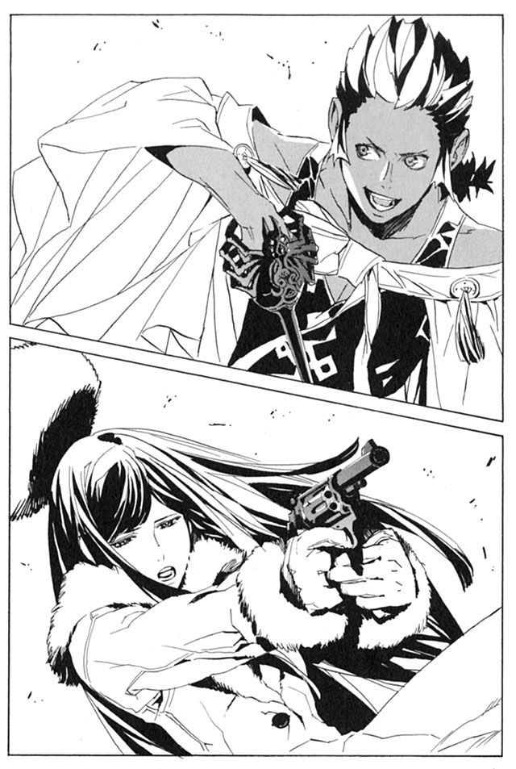
ユーリは身を翻して枝から跳んだ。一瞬前まで立っていた木の幹が、切り刻まれて倒れた。
「シュラムッフェン！ あなたが、どうして！」
返事はない。詮索をしている余裕もない。ただ今は逃げるしかなかった。
ユーリは躊躇わずに、島の反対側に向かって逃げた。杉の枝を足場に、一直線に走る。入り江にユーリが乗ってきた水上飛空艇が停泊している。
足はユーリのほうが速い。ヤンクゥを引き離していく。
枝を蹴り、岸の岩の上を跳び、飛空艇の操縦席に駆け込む。エンジンのレバーを引く。
「！」
焦っていた。強く引きすぎてエンジンが回らない。もう一度引く。これもだめだ。
「醜態ですわ！」
ユーリは飛空艇を捨てて飛び降りた。海に浮かぶ岩を足場に、逃げていく。次の瞬間、飛空艇は五個か六個に分断されて海に沈んだ。
ヤンクゥは森の出口にいる。海を走りながら、ありったけの弾を打ち込む。弾が切れると、銃を投げ捨てた。
常笑いの魔刀シュラムッフェンに、銃弾は通用しない。意思を持つ魔刀の自動防御機能が、全て撃ち落してしまうのだ。
「しくじりましたわ、お兄さま。私のほうが始末されそうです」
そう呟きながら、ユーリは島の周囲を走り続ける。
真人シガルからシュラムッフェンを奪取してから、武装司書はこの魔刀の研究を続けていた。ハミュッツを追いつめた時は無敵と思われていた魔刀だが、弱点も多くあることが、すでに判明している。
欠点の一つは、使い手の邪悪さに応じて、破壊力が変わることだ。ハミュッツやシガルが使えば最大限の力を発揮する。だがミレポックが使った時は自動車をやっと破壊する程度の威力だった。ノロティにいたってはキャベツを千切りにするのが精一杯だった。
「ヤンクゥくん、なかなかに悪い子のようね」
そのシュラムッフェンをヤンクゥは、使いこなせている。最大限の威力とはいえないが、シロンが使っていた時ほどの威力はある。
「く、」
ヤンクゥに追いつかれかけた。ユーリは海に飛び込んで逃げる。海上で岩が破壊される音が聞こえてきた。
ユーリは海の底を泳いで、シュラムッフェンの射程から離れる。
射程が、最大五十メートルほどしかないのも、弱点の一つだ。逃げ回ることはユーリの実力でも可能である。
ほとんどの攻撃を無効化する自動防御も無敵ではない。切れない攻撃は防げないし、攻撃と防御の合間に、タイムラグが発生することもわかっている。
だが、ユーリの実力ではその隙を突くことは不可能だろう。
海から身を飛び上がらせ、岸に着地する。ヤンクゥからの距離は、目測で四十五メートル。ヤンクゥがシュラムッフェンを振るう。
避けては間に合わない。ユーリは瞬時に、自らに与えられている力を行使する。
体の周囲、一メートルほどの範囲が、黒い蜃気楼のようなものに覆われた。あらゆるものを無条件で切り裂く、シュラムッフェンの斬撃が黒い蜃気楼を襲う。
黒い蜃気楼が消える。その中にいたユーリは、無傷だった。
「あれは！」
ヤンクゥが叫んでいる。彼もその目で見るのは初めてだろう。ユキゾナの持つ魔法権利、腐壊波動の力である。
この黒い波動は、あらゆるものの機能を破壊する力だ。波動に触れたとき、生物は老化し、機械や道具は壊れ、移動するものは静止する。一切の例外もなく、全てを無用のがらくたに変える力である。それは実体のないシュラムッフェンの斬撃すら無効化するのだ。
「ユーリも使えるのか。侮っていた」
ヤンクゥが、シュラムッフェンを構えなおす。ユーリは笑い、余裕があるように見せかける。
この能力は、兄ユキゾナから譲渡されたものである。今の防御を五度も行えば、譲り受けた力は切れるだろう。
しかし、この限られた力で戦うしかない。
数千年の時を重ねてきた巨木を、惜しげもなく切り倒しながら戦いは続く。ユーリは逃げ、ヤンクゥは追っている。
「代行のようにはいきませんね」
と、ユーリは幹を蹴りながら呟く。逃げながら戦うのは難しい。ハミュッツの真似も付け焼刃では限界がある。
指先に腐壊波動を纏わせ、ヤンクゥに向けて放つ。銃弾のように飛ぶ波動の塊は、ヤンクゥの泥に迎撃された。もう一発放てば、あるいは当たるかもしれない。しかし、五十メートルの射程距離に入りかけている。ユーリは身を翻して逃げるしかない。
斬撃は何度もユーリの体を掠めている。白い肌に血が流れている。
「待ちなさい、ヤンクゥ。こんなことを続けてどうするつもりなのですか！」
「自分の首を心配しろ！」
ユーリは逃げ続ける。
「私を倒せば、何かが変わるとでも？ そんなことはありえません。お兄さまも、代行も、マットアラストさんもいるのです！」
「なら、全員殺してやるさ。全員が姉ちゃんの敵なら、全員殺す。当たり前だ」
「ノロティさんがそれを望んでいると？」
それを言うと、ヤンクゥの動きが止まった。
「望んでは、いないだろうね」
僅かながらユーリは安心する。逃げようとした足を止める。
「なら、こんな馬鹿な戦いは」
次の瞬間、反射的に腐壊波動を発動させていた。知らぬ間に射程距離に踏み込んでいた。シュラムッフェンの斬撃を腐壊波動でかろうじて防いだ。
これで、譲渡された力は半分以上使ってしまったことになる。
「わかってないな。僕は、お前らが許せないんだよ。姉ちゃんがどう思っても、お前らの罪は罪なんだ。姉ちゃんを利用して死なせて、僕の村まで利用する。それが許せないんだ！」
じりじりと、ユーリに近づいてくる。ユーリは完全に説得を諦めた。
「死ね！」
ユーリは、血に濡れた手を近くにあった木に叩きつけた。幹が血に赤く染まる。それと同時に、横に跳んだ。
ユーリの動きが変化した。これまでは、ただ逃げ回ることだけを考えていた。だが今はなるべくその場から離れないように、攻撃をかわしていく。
「.........気づいていないかしら」
ユーリが呟く。血のついた木は、目印だ。その周囲に、指先ほどの腐壊波動の塊が浮いている。数は七つ。木を取り囲んでいる。
正面から戦っても勝ち目はない。罠を仕掛けるしかない。ヤンクゥが目印の木の近くに来たら、配置していた腐壊波動を動かす。
波動の塊は小さなものだ。そのままぶつけても、人を殺す力はない。狙いは、ヤンクゥの後頭部、小脳の部分だ。そこに腐壊波動をぶつければ、脳は末期の脳腫瘍のような状態になる。
小脳を破壊すれば、人間は歩くこともまっすぐに立つこともできなくなる。その場に倒れこんで、糞尿を垂れ流しながら、長い時間をかけて死にいたる。
残虐極まりないが、手段を選んでいられない。
長い時間をかけて逃げ回る。次第に足がもつれていく。防御に使う腐壊波動も、残り少なくなっていく。
あきらめかけた瞬間、ヤンクゥが目印の木の近くに来た。そこで、無防備に立ち止まった。
「今！」
気づくべきだっただろう。ヤンクゥのあまりの無防備さに、疑いを抱くべきだっただろう。追いつめられた人間は、小さな希望にすがりつく。百戦錬磨とはお世辞にもいえないユーリでは、なおさらのことだ。
ヤンクゥの体を、泥が包み込んだ。腐壊波動は泥に当たり、効力を失った。必殺の罠は、泥の防御を僅かに削っただけだった。
次の瞬間、ユーリの足元が揺れた。下を見ると、地面が生き物のように蠢いていた。
はめられたと気づいた瞬間、ユーリの体は沈む。膝まで地面に埋まった。そして硬いゴムのように形質が変化した。
「.........負けたのね」
ヤンクゥが、シュラムッフェンを持ってゆっくりと近づいてくる。静かに言った。
「.........村を、守りきれるとは思っていない。たった一人で勝てるとは思ってない」
「よしなさい。まだ、引き返せます」
ユーリの言葉に、ヤンクゥは耳すら傾けない。
「だけど、やるしかない。僕は死ぬまで戦い続けるしかないんだよ。姉ちゃんから、受け継いだんだ。村を守らなくちゃいけないんだ」
ヤンクゥの右手が動く。シュラムッフェンが笑い出す。
――現在 １９２６年12月28日
パーティ会場で、誰かの話し声をヤンクゥは聞いた。
「そう言えば、ユキゾナとユーリが来てないね」
振り向いてみると、話していたのはボンボだった。幹事のキャサリロを呼んで話を聞いている。
「あたしもよくわかんないよ。来るって言ってたのは確かだけど」
「聞いたのいつ？」
「よく覚えてない。一週間ぐらい前かなあ」
ヤンクゥは、ボンボたちに背中を向け、会場の片付けに戻った。
四日前。ユーリを追いつめながらヤンクゥは考えていた。ユーリを殺した後のことを。
ユーリを殺した後、武装司書たちは全力でもってヤンクゥを殺しにかかるだろう。迎え撃つことは不可能。ヤンクゥから仕掛けるしかない。
ユーリの死がばれた後では、仕掛けることもままならないだろう。勝負は、ユーリを殺してから数日以内だ。
そこまで考えた後、ヤンクゥは次の一手を考えていた。強大な武装司書に、大打撃を与えられる唯一の時。一年に一度の機会。
武装司書たちが、完全に油断するこのパーティ。仕掛けるにはその時しかない。シュラムッフェンの全力の力で、暴れまわるのだ。
どれだけの相手を殺せるだろう。ハミュッツ、マットアラスト、ユキゾナ、ボンボ。一万の兵を超える力を持つ彼らを相手に、何ができるだろう。そんな疑問も感じなかった。
勝利はもとより捨てている。生き延びることも諦めた。ただ、戦うだけだと決意した。
パーティは、平穏に続いている。その中をヤンクゥは、静かに歩き回っていた。
屋根の上でハミュッツは、一人座っている。ラスコール＝オセロはいつものように、意味深なことをのたまった挙句、消えていった。毎度毎度、勝手な奴だと憤慨する。
しかし、わからない。ハミュッツはオリビアのことを考え続ける。
ラスコールの言葉で、『菫色の願い』がオリビアに受け継がれていることはわかっている。オリビアは『菫色の願い』をどうやって叶えるつもりなのか。
『あたしの勝利は九分九厘決まってるのさ』
とオリビアは言っていた。ならば、叶える手立ても目算ができているはずなのだ。
オリビアはどうやって『菫色の願い』を叶えるつもりなのか。その算段と、ヤンクゥやキャサリロはどう関わっているのか。この平和な日々の、どこに逆転の秘策があるのか。
全くわからない。
「ああ、混乱する！」
ハミュッツは頭をかきむしる。
「わからないわ、全く、何もかも全然わからない」
ハミュッツは屋根の上に寝そべって、星空を見上げる。冬の空は天が高く、星の瞬きも秋よりずっと鮮やかだ。
その星空を見ながら、ハミュッツは一週間ほど前のことを思い出した。
――１９２６年12月21日
その日もハミュッツは、ミレポックから退屈な業務報告を受けていた。やる気のないハミュッツに、ミレポックが言う。
「明日から休みですから、我慢して聞いてください」
出来の悪い生徒を叱咤する家庭教師のような言い方だった。
触覚糸の先を、オリビアに結びつけている。オリビアは今日も、普段通りに仕立て屋で働いている。
ユーリが、ユキゾナの命令を受けて南方辺境に飛ぶらしい。神溺教団のラティを護衛するのだという。
ヤンクゥがシュラムッフェンを盗み出したことには気がついていないようだ。生きて帰るかしらと、ハミュッツは他人事のように思う。
執務室から島の中を観察しながら、ハミュッツは日々を過ごしていた。
「聞いていますか代行」
「聞いてるわよ。続けて」
ミレポックは憮然とした表情で報告を続ける。
オリビアの働く仕立て屋に、近づいてくる人影があった。キャサリロだ。明るく能天気な彼女が、苦渋に満ちた顔をしている。裏口から入り、オリビアを手招きして連れ出した。
「ここじゃ、ちょっと話しにくいの。オリビアさん、来てくれる？」
オリビアは緊張した顔で仕立て屋を出て、キャサリロについていく。オリビアが迷いの道と呼んだ遊歩道に、二人は入っていった。
二人はベンチに腰を下ろす。周囲に人影はない。キャサリロが、どこか疲れたような声で話し始める。
「あの話、考えたよ」
オリビアは頷く。キャサリロを信用しきっている様子だ。もし、キャサリロに裏切られるとしたら、オリビアの味方など世界のどこにもいないだろう。
「それで、どうするの？」
「オリビアさんの話、たぶん間違いないと思う。武装司書は神溺教団と繋がってるよ。それだけじゃない。神溺教団を作ったのは、武装司書なんだよ。神溺教団を滅ぼすってのは、つまり武装司書と戦うことなんだよ」
オリビアが驚いている。
「よく、そんなことがわかったな」
「あたしは武装司書だからね。いろいろ、情報を集める方法もあるさ」
「そうか、すごいんだな、あんた」
キャサリロは、ため息をつく。
「ねえ、オリビアさん、あなた、どうしても武装司書と戦いたいの？」
オリビアが目を丸くして、キャサリロを見る。
「なんでそんなことを聞く」
「武装司書と戦うってのは、とんでもないことだよ。代行やマットさんが強いとか、そういう問題じゃない。武装司書はね、この世界を守る人なの。神溺教団だけじゃなくて、世界中にいる悪い奴や、自分勝手な奴と戦ってる。戦争を防いだり、テロリストとかと戦ったり、二千年もそういうことをしてたの。
もし、武装司書がなくなったら、世界中がめちゃくちゃになる。神溺教団を倒しても、他の悪い奴がのさばることになるんだよ」
「.........キャサリロ。怖気づいたの？」
「今はオリビアさんの話だよ。死んでも戦う覚悟はあるのはわかるよ。でも、それだけじゃだめなの。オリビアさんには、世界をめちゃくちゃにする覚悟があるの？」
キャサリロは、オリビアの目を見つめる。
「そうだな。その覚悟がないなら、あんたもついて来てくれないよな」
オリビアは、考える。
「大丈夫さ。覚悟はできてるよ」
「どうして、そんな覚悟ができるの？」
「義務だからさ」
キャサリロは、首をかしげる。
「キャサリロ。あたしはね、いろんな人の死の上に、生きてるんだ。ベンド＝ルガー。船の仲間たち。シャーロット。レナス＝フルール。そして、たぶんヴォルケンもだ。みんなが死んだから、今あたしは生きている。あたしは、ものすごくいろんな奴の命を背負っているんだ」
「.........そうだね」
「あいつらがね、胸の中で叫んでるのさ。なぜ死んだ。なぜ殺されなきゃいけなかった。あたしの胸はあいつらの死で満ちている」
「.........」
「実を言えばね、あたしだってもう戦うのは嫌だよ。武装司書を滅ぼして、世界をめちゃくちゃにするなんて嫌だ。でも、あたしは戦わずにはいられないんだ。あいつらがあたしの中で生きている。あいつらの分まで戦わなきゃ、あたしは何のために生き延びたんだかわからない」
「.........オリビアさん」
「キャサリロ。わがままな願いだってのはわかってる。あんたに恨まれても仕方ないとも思ってる。承知の上で頼んでるんだ。
神溺教団を滅ぼしてくれ。武装司書の秘密を暴いてくれ」
キャサリロは、両手で顔を覆った。そのまま、しばし沈黙していた。
「オリビアさん」
キャサリロが、両手で顔を覆ったまま、言った。
「.........ごめん。オリビアさんのこと、マットの旦那に話した」
オリビアは、天を仰いだ。その顔に、悲しみも怒りもなかった。触覚糸で撫で回しても、奥底の読み取れない静かな表情だった。
「あたしの手には、大きすぎる。あたしは、ただの馬鹿なんだよ。何にも背負ってない、何にも背負えない。正義より、他人の命より、自分が可愛いんだよ。毎日、楽しく暮らすだけが取り柄の小娘なんだよ。武装司書を滅ぼすなんて、怖くてできない」
キャサリロは顔を覆っている。泣いてはいない。泣くべきなのは、オリビアのほうだ。
「怖いの。今の平和が壊れるのが。怖くて、戦えない。オリビアさんみたいに、命かけられない」
「.........だけどな、マットの野郎に話すことはないじゃねえか」
オリビアは、笑いながら言った。キャサリロを恨むことはできないのだろう。
「オリビアさんは、このままだと殺される。それは嫌だ。だから、相談したの。オリビアさんを殺さないで済むにはどうすればいいか」
「嫌だよ。また、記憶を奪われるのは。ベンド＝ルガーのこと、また忘れるなんて絶対に嫌だ。忘れてもまた思い出してやる」
「うん。わかってる。オリビアさんがそういう人だって。
だからね、マットの旦那が知恵を絞ってくれたよ」
キャサリロが、アーガックスを取り出した。
「マットの旦那は言ったよ。オリビアさんは、ベンド＝ルガーの敵を討つために戦っているんだろう。なら、敵を討ったことにすればいいって」
「どういうこと？」
「ベンド＝ルガーを殺したのは代行なんだよね。その記憶を消すんだって」
「.........」
「神溺教団のバダっていう学者が、研究してた技術があるの。アーガックスで記憶を消した後、偽の記憶を刷り込むのよ。
ベンド＝ルガーを殺したのは神溺教団。代行も武装司書も、何の関係もない。
代行が十年前から神溺教団を知っていたことも、神溺教団が生きていることも、みんな忘れる。何もかも悪いのは神溺教団で、武装司書は何も悪くない。
そういうことにしちゃえばいいってさ」
オリビアは、無表情にその話を聞いている。
「ひどい男だね、人の頭の中いじくりまわして、なんて奴だね」
「だけど、こうすれば、オリビアさんは殺されずに済むよ」
オリビアはしばし黙り込んでいた。やがて、静かに笑い出した。キャサリロは、静かにその背後に立ち、後頭部を掌で打った。オリビアは意識を失い、倒れこんだ。
キャサリロがオリビアを抱え起こす。そしてアーガックスに水を注ぎ、発動させる。記憶抹消の水を、意識のないオリビアに、口移しで飲ませた。
それから少しの間、意識のないオリビアを見下ろしていた。そして、呼びかけた。
「マットさん、出ておいで。終わったよ」
バントーラ図書館の敷地内から、マットアラストが塀を飛び越えてきた。
「オリビアさんを頼むよ。約束、守ってね」
マットアラストは頷き、倒れたオリビアを抱える。
「俺は約束は守るよ。目覚めた時には、オリビアは復讐なんてきれいさっぱり忘れているさ」
「そう。ありがと」
キャサリロは、マットアラストに背中を向けて気のない礼を言った。マットアラストはまた塀を飛び越えて、消えた。
「.........代行。たぶん聞いてるんじゃないかな」
と、キャサリロは言った。
「あら、鋭い」
ハミュッツは思わず口に出してしまった。ミレポックが、この報告のどこが鋭いのか悩んでいる。
「オリビアさんを殺さないでね。あの人は、代行と戦えるような人じゃないんだから。平和に暮らさせてあげて」
ハミュッツは立ち上がる。ミレポックがどこに行くのか聞いてくる。
「トイレよ。待ってなさい」
そう言いながら、ハミュッツは執務室の窓を抜けて屋根に上る。ミレポックが目を丸くしている。
「代行.........まさか若年性の認知症なんて」
ハミュッツはミレポックを無視して、投石器を取り出す。連絡用の石に字を書いて、投げる。
『いいわよ』
キャサリロが、頭に当たって落ちた石を拾って読む。一安心した表情で、くすりと笑った。
ハミュッツは屋根から執務室へ戻る。
「代行、そっちはトイレではありません」
「何言ってるのよ馬鹿。当たり前じゃない」
キャサリロは、そのあとしばらくの間ベンチに座ってぼんやりとしていた。そして、手で弄んでいたアーガックスに、水を注いだ。
「.........ほんとに、ごめん、オリビアさん」
そう言いながら、水を飲んだ。憂いに満ちていた顔が、普段のキャサリロに一瞬で戻った。
「む、あたしはなんでアーガックスなんぞ持ってるの？」
手の中にあるアーガックスを不思議そうに見つめる。
「失恋でもしたのかな。まさか、ミレポじゃあるまいし」
そう言いながら、しきりと首をかしげていた。
――現在 １９２６年12月28日
キャサリロとオリビアは、パーティ会場で仲良く話している。
ハミュッツは屋根の上から、触覚糸を垂らし、様子を窺う。
しばらく続いていた過激な猥談は終了したらしい。オリビアを囲む、女性武装司書の輪は、なにやらしんみりとした雰囲気になっている。
「その人、それでどうなったの？」
キャサリロが言った。
「死んだよ。あたしが駆けつけたときには、もう息も絶え絶えだったさ」
オリビアが、グラスを傾けながら言う。
「鉛の兵器ベンド＝ルガーも、ああなっちまえばおしまいだよ。あたしに見取られて、死んだよ」
オリビアは、ベンド＝ルガーの話をしている。キャサリロたち武装司書は、それを興味深く聞いている。
「誰に、殺されたの？」
「決まってるだろ。神溺教団さ。裏切り者は、消される運命だったんだよ」
「.........可哀相」
テナが涙ぐんでいる。
「あいつは、どうして神溺教団を裏切ったのかな。あたしにはもうわからないよ。あいつのことはほとんど何も知らないからな。ただ、手が温かかったってことしか覚えていない」
「.........感動です」
「でも、いいのさ。あたしはそれを、一生忘れない。あいつの手の温かささえ覚えてりゃ、十分なのさ」
そう言ってオリビアは、話を打ち切った。
かつて、ベンド＝ルガーの名前は語ってはならないものとして封印されていた。しかしマットアラストは、もう秘密にする必要もないと判断した。
オリビアの記憶は改ざんされた。ベンド＝ルガーの存在から、秘密がもれる心配はなくなった。ハミュッツは十年前から神溺教団を知っていたという事実も闇の中だ。菫の咎人へ繋がる線も、全て断ち切られた。
秘密にしておく必要は全て消えたのである。
『秘密を隠す最良の手段は、秘密が存在することを知らせないことさ』
マットアラストはそう言った。今回も、その手を踏襲したわけだ。
「世界を揺るがす武装司書の秘密が、今は単なる悲しい美談か。感服するわマットアラスト」
天性の嘘つきマットアラスト。とんでもない男を部下に持ったものだと、ハミュッツは思う。
「オリビアは、これで終わりなのかな」
ハミュッツは夜空を仰いで呟く。
終わりなのだろう。どう考えても、この先オリビアから波乱が起きることはない。ベンド＝ルガーの敵は討ったものだと信じ込み、戦う意思は失われている。
となると、残る波乱の可能性は、ヤンクゥのみ。果たしてどう動くのか。
ハミュッツは、触覚糸をヤンクゥに纏わせる。その一挙一動を、じっと観察していく。
第五章 虚言者は笑う
――現在 １９２６年12月28日
パーティの同日、バントーラ図書館から遠く離れた、イスモ共和国でのことである。
楽園管理者ミンス＝チェザインは、昼間からいびきをかいていた。古びたソファに、靴を脱いで寝そべっていた。
「顧問。顧問、起きてください」
頭上で女性の声がした。ミンスは目を開ける。お茶汲みに雇っているおばさんが不機嫌そうに立っていた。
「なんなら、気持ちよく寝とるんじゃ。黙っとれんのか」
ミンスは目を擦りながら言う。
「銀行から来客があるんです。応接室で寝ないでくださいな」
「仕方ないの」
応接室といったところで、ソファが二つと、テーブルが一つあるだけの狭い部屋だ。調度品は一見高級品に見えるが、実際は質流れの安物である。
その部屋をミンスは離れ、ぶらぶらと奥へ歩いて行く。
バントーラ図書館を離れて九カ月。筋骨隆々だった体は、いささかしぼんでいる。厳しかった顔からも険がとれている。
楽園管理者に就任してから今まで、ミンスは戦いとは無縁の日々を送っていた。
慈善団体、『マルグント人類進歩財団』の顧問。それが、ミンスの表向きの肩書きである。
「顧問ちゅうのも、存外仕事がないの」
そんなことを呟きながら、ミンスは窓の外を見た。
ここは、イスモ共和国の首都モールアール市の郊外である。築三十年近い、古いビルの一室だ。窓の外には、開拓時代の名残を残すような、埃じみた町並みがうかがえる。
四階建てのビルのうち、ミンスは自費で三階と二階を買い取っている。二階は財団の事務所で、三階はミンスの自宅として使っている。
一階はある弁護士の個人事務所だ。四階には、ロナ国から石鹸や化粧品の輸入をしている小さな貿易会社がある。どちらも、神溺教団とは何の関係もない。
ありふれたビルの一室。ここが、ミンスが作り出した新生神溺教団の本部である。
過去の神溺教団を覚えているものには、秘密の拠点の一つにしか見えないだろう。本拠地は別にあり、ここはカモフラージュではないかと疑うだろう。
しかし、そうではない。ここがまぎれもない本部であり、このビル以外に拠点としているところはない。
カチュアの時代に比べて、あまりにもちっぽけで庶民的だ。かつては、政界財界の重鎮を取り込み、世界を裏で操っていた神溺教団。それが今は、小さなビルに押し込められている。
「一服するか」
ミンスは、紙巻煙草に火をつける。武装司書時代は禁煙していたが、最近また吸い始めた。
退屈しのぎに、ミンスは机の上の書類をめくる。ミンスが顧問を務める、『マルグント人類進歩財団』の活動計画のまとめである。
『マルグント人類進歩財団』は、人類の発展に関わるあらゆる活動の後援を、表向きの目的としている。よく言えば、自由な発想で活動をする団体。悪く言えば、何がしたいのか良くわからない団体だ。
世間一般では、退職した武装司書と投資で富を作った資産家の、道楽事業と思われている。
活動内容は、様々だ。とある地方の治安維持に協力し、恵まれない子供たちに教育資金を寄付し、科学者の研究資金を補助しと、とりとめがない。
真の目的は、もちろん天国に運ぶための、幸いなる人の『本』を生み出すことだ。しかし、実際に行っている業務は、ただの慈善団体となんら変わりはしない。
「悪くないの」
と、ミンスは書類をファイルに収める。
現在の、小さく庶民的な神溺教団。これは、失敗の結果でも、教団拡大の途中でもない。これがミンスの目指した新たな神溺教団なのだ。
カチュアのように、世界を裏で操りながら、幸福を作り出そうとは思っていない。金がなくても、権力がなくても、武力がなくても、幸いなる人の『本』は作り出せる。
ミンスはそう信じている。そして、それを実践しているのだ。
「ん？」
散らかった机の上に、見慣れない封筒を見つけた。差出人を見て、思い出した。武装司書恒例の、パーティの誘いだ。
「暇じゃし、行けばよかったかの」
ミンスは封筒を見ながら呟く。そういえば、パーティは今日だった。行く気がなかったので忘れていた。
「まあええか。マットやハミの顔を見るのも、腹立つしの」
封筒を机に放り出す。煙草を灰皿に押しつけながら、ミンスはふと、この一年のことを思い返した。楽園管理者として築き上げた、新たな神溺教団のことを考えた。
――１９２６年３月
マットアラストに、新たな楽園管理者に任命されたミンスは、迷いを感じていた。
邪悪でおぞましい神溺教団を、自らの手で存続させる。叩き潰すために死力を尽くしてきた相手の、指導者になる。迷いを感じないとしたら、まともな精神の人間ではない。
しかし、ミンスは天国の正体を知っている。幸いなる人の『本』を運ぶ使命が、逆らえないものであることも知っている。逃げ出すことはできない。
だからミンスは、考え方を変えることにした。
今までの神溺教団は、邪悪な組織だった。ならばミンスは、善良な神溺教団を作ればいい。
それは可能である。そしてそれが、ミンスに与えられた仕事である。しだいにミンスは迷いを捨て、楽園管理者の仕事に没頭するようになった。
武装司書時代、ミンスは聖浄眼の力で、信徒を見つけ出しては抹殺してきた。
ミンスの目は、邪悪な人間と善良な人間を見極める。信徒の大半は、欲望に溺れ、良心を失った人間だった。
だが、そんな人間ばかりではない。カチュアの思想に反発したもの、神溺教団から逃げているものも中にはいた。そういう人間は、ハミュッツやイレイアには内緒で見逃していたのだ。
ミンスは楽園管理者に就任した後、彼らを探し出して集めた。カチュアが隠していた、神溺教団の本来の使命を明かし、それに尽くすことを誓わせた。わずか十数人の彼らを率いて、ミンスは新生神溺教団を発足させた。
戦闘力を持つのはミンス一人。銃の一丁も、剣の一本も持っていない。だがそんなことは問題ではない。新生神溺教団に、戦闘力は必要ないのだ。
続いて探したのは、真人である。
真人に必要なものは、ある種の純粋な心だ。欲望をかなえることを躊躇せず、自らの生きかたを疑わない。そんな人間でなければ、心の底から幸福になることはできないのだ。
シガルなども、たしかに純粋な人間だった。純粋だからこそ、残虐な行為をためらわずに行えたのだ。過去の真人にも、シガルのような人間は多くいる。
ミンスはそんな人間を、真人として迎えるつもりはない。純粋な心を持ち、なおかつ良心を備えた人間でなければならない。
そんな人間を探すのは難しい。心の底からの善人など、百カラットの宝石よりも貴重だ。ミンスの人生の中で、そんな人間はノロティ一人しか知らない。
しかしいくら貴重でも、探さなければならない。それが、ミンスの仕事だからだ。
世界を渡り歩き、ミンスはそんな人間を見つけ出していた。
――１９２６年12月15日
ミンスはイスモの事務所を離れ、自家用の飛行機に乗って旅に出た。ミンスの見つけ出した、新たな真人たちの様子を見るためだ。
九カ月かけて見つけ出した真人は三人。あまり早いペースではない。
クラー自治区の、山岳地帯。そびえたつ山のふもとで、ミンスは一人目の真人の姿を見つけた。
褐色に日焼けした、屈強な体の男。重く丈夫な登山服に身を包んでいる。名前をガールゼという。
「おう、見送りに来たぞ」
「ああ、来たか、楽園管理者」
ガールゼは、山の上を見つめながら言った。ミンスも、天を見上げる。
山の上部は雲に覆われて見えない。目の前にあるのは、坂というよりは壁である。上空の大気は、恐ろしく寒く、乾いている。ガールゼはそんな場所に、たった一人で挑もうとしているのだ。
「改めてみると、とんでもないのう。大丈夫かよ」
ミンスは空を見上げながら言う。
「さあな。まあ、失敗したところでたいした話じゃねえさ。馬鹿が山で死んだだけだ」
ガールゼは、笑いながら言う。
彼は普段は、グインベクスで銀行員を務めている。余暇を利用しては、世界各国を回って冬山に挑んでいる。
ガールゼは魔法の使えない一般人だ。過酷な冬山に挑む苦労は、常人の想像を絶する。
登ったところで、金にも名誉にもならない。しかし彼は、何にもならないことに命を懸けて挑む。物好きな奇人と周囲には思われているだろう。
「楽園管理者には感謝しているよ。この壁に挑むのが夢だったんだ。こいつが、たぶん世界で一番難しいからな」
ガールゼが、最初のピッケルを岩盤に打ち込む。岩の感触を丁寧に確かめている。
「わしらの仕事だからの。気にするなや」
ミンスは言った。この付近は長く、独立軍から野盗に転じた武装集団に占拠されていた。登山家が足を踏み入れることなど、夢のまた夢だった。
ミンスが野盗を排除し、近隣の警察組織に財団から多額の寄付をした。名目は、近隣住民の生活の維持だが、本当の目的はガールゼがこの山に登れるようにするためだ。
しかし、とミンスは思う。ガールゼはなんだって、山に挑むのだろう。
頂上に行くためなら、飛行機を使いパラシュートで降りれば済む話だ。あるいは魔術審議で肉体を強化すれば、簡単に登れる。そのほうがずっと安全だ。
登った後、金がもらえるわけではない。にもかかわらず、彼はひたすら登る。
ミンスは自らの能力を発動させ、ガールゼの魂を見る。彼の周囲に、霧のような光のようなものが見える。
そこにあるのは酷く孤独で、不器用な魂の相だ。登る直前の感情は、不安と、不安をねじ伏せようとする勇気の斑模様だ。
しかしその中に、ダイヤのように輝くものが点滅している。それは、ミンスが他に見たこともないほど、美しい幸福の色だった。
「山に登るのがそんなに楽しいか」
「どうかな。登っている間は苦しいことばかりだぜ」
ガールゼは、岩肌に手をかけていく。
「楽しくないのかよ」
「楽しくないさ。他の人たちが、犬の散歩をしたり、花壇の花に水をやったり、嫁さんを可愛がったりしてるときに、なんだって俺は生死の境をさまよってるんだ。そんなことばっかり考えてるぜ」
「なら、なぜ登る」
「さあな。だが、頂上を踏んで、街に帰って思い出すと、死ぬより苦しかった山の出来事が、どれもこれも楽しくて仕方ない思い出になってるのさ」
そう言いながら、ガールゼは山の頂上へと向かっていった。その背中には、ミンスが求める幸福が、確かに存在した。
次にやってきたのは、イスモ共和国の田舎村にある、木造の一軒屋である。煙草の火でも落とせばあっという間に炎上してしまうぼろさだ。ミンスは咥えていた煙草を素手でもみ消す。
隣の牧場で、牛がもの珍しそうにミンスを見ている。そんな中、ミンスはドアを叩いた。
「へ？ 楽園管理者じゃん。何の用だよ」
中から出てきたのは、二十代の青年である。分厚いメガネと、埃だらけの白衣で、彼がどんな人間か簡単に予想がつく。クエインという青年だ。彼が、ミンスが見つけ出した最初の真人である。
「様子を見に来たんじゃ。研究は進んどるんか」
ミンスは中に入った。木造の家の中は、鉄くずの山である。山頂で寝そべっている老犬が、クエインの唯一の家族である。
「良いところに来たなあ。これ見ろよ。完成一号機」
クエインは、鉄くずの山から離れたところに置いてあるものを見せた。
「名づけて『ピーナちゃんのふともも号』。どうだ驚いたか！」
そこにあるのは、失敗作の玩具のような、小さな機械である。ロケットと呼ばれている。調整した石油燃料を後部から噴出させ、その反動を利用して空を飛ぶらしい。ちなみにピーナとは、隣に住む牧場主の一人娘だ。
「ちっぽけじゃの」
とミンスは素直な感想を漏らす。クエインは全く気にせず、いそいそとロケットを運んでいく。クエインはこのロケットという機械で、なんと宇宙へ行くことを夢見ているのだ。
彼はかつて、科学庁で天才とうたわれたエリートである。だが、その宇宙へ行くというあまりに突飛な夢を誰にも理解してもらえず、職を失った。
正直に言えばミンスも、本当に宇宙などに行けるのかは半信半疑である。創造神の生み出したこの世界の外へ行くなど、人間にできる領域を超えているのではないだろうか。
だがクエインは、迷うことも疑うこともせず、研究を続けている。食うや食わずの生活を続けているのに、落ちぶれたとは頭の片隅でも思っていない。
そこに、ミンスは確かな幸いの形を見出していた。
「行くぞー」
クエインが導火線に火をつける。轟音と呼ぶには情けない、小さな音をこだまさせて、ロケットは空に飛んでいく。ロケットは五十メートルほど飛んで、ぽとりと落ちた。ミンスは、ハミュッツあたりならジャンプで届く距離だなと思った。
「やった、すごい！ 完璧すぎる！」
ミンスには理解できないが、これが成功らしい。宇宙へ続く道の、確かな一歩なのだという。天才なのか、馬鹿なのか。どちらも大差ないのかもしれない。
その時、隣から大声を上げて男が駆け込んできた。三叉のモリを片手に持っている。
「おうクエイン！ 何度言ったらわかる！ 牛が驚いてミルクが出んぞ！」
顔は知っている。隣に住んでいる牧場主だ。クエインは慌てて家の中に逃げ込む。
「待てやこのボケ！ 阿呆な研究は止めて働けと何べん言った！ こら、逃げるな！」
牧場主は、クエインの家の扉をがんがんと蹴っている。クエインは中からしっかりと錠をかけている。ミンスが来ると、毎回毎回展開されている光景である。
「あーあ。またクエインの馬鹿ね」
一人の少女が、転がっていたロケットを蹴っ飛ばした。ロケットの名前にもなっている、牧場の一人娘だ。ミンスに話しかけてくる。
「あんた、クエインの仲間でしょ。あいつから聞いたけど」
「そうじゃが、なんなら」
「別に用なんてないよ」
そう言いながら、牧場の娘とミンスは、怒鳴りつける牧場主を眺めている。
「ねえ、あいつが目指している宇宙って、あの星とかのあるところだよね」
急に牧場の娘が話しかけてきた。
「らしいの。科学はよく知らんが」
「本当に宇宙なんか行けるもんなの？」
ミンスは肩をすくめる。
「知らん。おんしはどう思うんなら」
「わかんないけど、まあ、行けたら、凄いよね」
牧場の娘は、ぱたぱたと手を振る。なにやら慌てた様子である。
「しまった、クエインを認める発言をしてしまった.........あたしは違うからな、あいつと違って真人間なんだからな」
なぜか怒りながら、牧場の娘は帰っていく。牧場主はクエインを引きずり出して、頭を殴っている。
研究のために、この牧場一家を立ち退かせることも考えた。あるいは、武装司書時代のコネを使って、科学庁に復帰できるように立ち回ることも考えた。しかし、どちらもすぐに止めた。この牧場一家との騒動も、彼の幸せの一部なのだとわかったからだ。どうもクエインは、この頑固で朴訥な人々が、好きで好きでたまらないらしい。
ミンスは殴られるクエインを放っておく。牧場主の怒りがミンスに向かないうちに、急いでその場から逃げ出した。
その晩は、クエインの家に泊まった。夕食は、とうもろこしのシリアルだけだった。牧場の娘からわけてもらったミルクをかける。
真人なんだから、もう少し良いものを食えとミンスは思う。クエインには潤沢な資金を提供しているが、全て彼は研究に使ってしまうのだ。
「そういえばミンス。三人目の真人ってのはどうなってるんだい？」
クエインがスプーンを動かしながら聞いてきた。
「おんしには関係ないわ。早うロケットを完成させんか」
「上手くいってないのかい？」
「阿呆が。ラティに任せとるだけじゃ。あいつが上手くやってくれてるわ」
とミンスがむくれた。三人目の真人マニについては、ミンスはあまり動いていない。全てラティに任せている。
「なんでさ。がんばれよ。ミンスは楽園管理者なんだから」
「わしは、強面じゃからの、マニが怖がるわ」
「そんなことないよ。大丈夫だと思うよ。それとも、何か行けない理由でもあるのか？」
この男は、間抜けなくせに妙なところで鋭い。
「.........おんしには関係ない」
ミンスは、口籠もった。
マニを見ていると、どうしてもノロティのことを思い出してしまう。ノロティが自分の村を守ろうとしていたことが頭をよぎるのだ。
気後れする必要はどこにもない。ミンスはマニの村を、守ろうとしているのだ。楽園管理者という職務にも、今は誇りを抱いている。だが、ノロティを殺した楽園管理者の後継者であることを、どうしても意識せずにはいられないのだ。
そのあたりの事情を、ラティも汲んでいるのかもしれない。ヤンクゥとの会合に行く時も、ミンスに護衛を頼まなかった。
「行ってやれよ、楽園管理者。神溺教団にはお前が必要だと思うよ」
「.........そうじゃな」
次の日、ミンスは南方辺境に飛んだ。到着したのは奇しくも、ヤンクゥとラティの会合と同じ日だった。会合に顔を見せるか、それともマニの村に行くか、ミンスは悩む。
結局どちらにも行かず、ミンスはマニの村の新天地に足を運んだ。移住のための開発が、数カ月前から始まっていた。
島に降り立つと、見知った人影を見つけた。
「おう、代行かよ」
ミンスは少し驚いた。なぜかハミュッツが島にいた。ぶらぶらと、島の中を歩いている。
「あらミンス。どうしたのう？」
「どうしたのはこっちの台詞じゃ。仕事はどうしたんじゃ」
「年末だし、もうたいした仕事残ってないわよ。なんか暇になっちゃってねえ」
そう言いながらハミュッツは、島の中を歩き回る。ミンスもとりあえずそのあとに続く。ハミュッツは島の開発の状況を見に来たらしい。
「意外と進んでないのねえ。時間はともかく、お金はもうちょっと必要みたいね」
ハミュッツが言う。
「金なら神溺教団で出すぞ」
「別に要らないわよ。みんなが出してくれるわよ」
とハミュッツは言う。
この島の開発は、神溺教団が行っているのではない。資金を出し、指揮を取っているのは武装司書たちだ。
バントーラ図書館が命令を下したわけではない。ミレポックやキャサリロら、ノロティと仲のよかった武装司書たちが、自分たちの資金で始めたものだ。
武装司書たちは皆、ノロティに感謝している。彼女の戦いと死に、少しでも報いてやりたいという気持ちで動いている。この計画には、マットアラストやユキゾナ、ボンボたちのような悪党までもが、善意のみで協力してくれているのだ。
「すまんの。世話かけるわ」
「あんたらのためじゃないわねえ。ノロティとマニちゃんのためよ」
とハミュッツは言った。
ふと、水平船の向こうから手漕ぎのボートが近づいてくるのが見えた。長い時間をかけて、島に接岸する。
マニと、その母親が乗っていた。島に上陸した母親が、ハミュッツに何度も頭を下げる。
「どうしたんですか、こんなところまで」
「館長さんが来ていると聞きまして、この子がどうしても会いたいと」
母親がそう言ってマニを促した。
「楽園管理者さん、ハミュッツさん、こんにちはです」
「こんにちはマニちゃん。どうしたの？」
「これ作りましたから、もらってください」
と言って、紙でできた手作りのぬいぐるみを差し出す。ハミュッツは少し困った顔で、それを受け取った。
「あ、でも楽園管理者さんの分、持って来てない」
ハミュッツは笑いながら言う。
「良いわよ。ミンスはまた来るから、その時にあげなさいねえ」
「はい。ごめんなさい、楽園管理者さん。また来てください」
「.........ん、まあ、ええわ」
マニの目を、ミンスはちゃんと見返せない。どうにも、子供は苦手なのだ。
ミンスとハミュッツ、それにマニは島を歩きながら話をした。ノロティの思い出話、移住した後の新生活の話。そんなとりとめもないことばかりだ。
最初に出会ったとき、聖浄眼で見たマニの魂に、ミンスは驚いた。
マニは、信じられないほど無欲な少女だった。食事と温かい空気だけで満ち足りる、野生動物のような魂だった。
彼女が持つ、たった一つの望みは、ヤンクゥや母や村人とともに暮らすことだった。皆が争わず、いがみ合わず、平穏に暮らすこと以外に、何も欲しがっていなかった。
出会ったその瞬間に、マニを真人に迎えることを決めた。マニはあらゆる望みをかなえるという、神溺教団の有りかたに何の興味も示さなかった。ただ、神溺教団に入れば、失われた村の平和が返ってくることだけを喜んだ。
ミンスが楽園管理者として、マニにできることは一つしかない。村人をこの地に移住させ、ただ普通に生活させることだけだ。なんとも手のかからない真人だと、ミンスは感嘆する。
「.........あら、どうしたのマニ」
ふと見ると、マニが何かを口籠もっている。
「心配があります、ハミュッツさん、楽園管理者さん」
二人は、話すように促す。
「ヤンクゥ兄ちゃんが、最近何か、悩んでるみたいです。でも、何を悩んでるのか教えてくれません」
「あら、悪い子ねヤンクゥは」
「お兄ちゃんは良い人です」
ハミュッツの言葉を、マニが強く否定する。ハミュッツは慌てて謝る。
ヤンクゥのことは、ミンスも懸念している。彼はマニを真人にすることに、同意するだろうか。ヤンクゥはノロティの死を、一生忘れられないだろう。ノロティを殺した神溺教団を果たして許すだろうか。
「神溺教団のことで、悩んでるみたいなんです。どうして悩むのかわからないんです」
「.........そう」
「なんだか、怒ってるみたいです。なんでなのか、わからないんです。神溺教団は悪い人みたいな感じなんです。だから楽園管理者さんに相談したくて」
「わしにか」
「偉い武装司書さんに手紙を出して、相談したんですけど、まだ返事が来ないんです。手紙、届いてないのかもしれないです」
ミンスは、マニの頭を撫でる。
「マニ。気にせんでええ。大人の世界にはいろいろあるんじゃ」
「.........楽園管理者さん、神溺教団は悪い人ですか？」
ミンスは、違うと答えるべきだ。しかし、ミンスの中で、その問題には未だ答えが出ていない。一年前の戦いを、ミンスはまだ忘れていない。シロンの事件や七王大乱のことも、よく知っている。それらが、どれだけの悲劇を生んだのかも。
マニに嘘をつきたくはない。ミンスは正直に答えた。
「マニ。何が正しくて、何が間違えとるのかは、本当に難しい問題じゃ。大人になればなるほど、わからなくなる。神溺教団が正しいのか、わしにもわからん」
「.........？」
マニはよく理解していない。子供に話すには難しい問題だろう。
「わからなくても、人間は動かにゃならん。わからないからと立ち止まっていたら、死ぬまで何もできないからの」
ミンスはまだ完全には迷いを捨て切れていない。天国に『本』を運ぶ使命に、心の底から尽くしているわけではない。
だが、ガールゼやクエイン、そしてマニを幸福にすることだけは、迷っていない。この純粋で不器用な奴らの幸福が、間違ったことだとは絶対に思えない。
その思いは、おそらく、楽園管理者に最も大切なことだ。
『本』を運ぶ使命のみに尽くせば、カチュアのように道を誤る。真人の幸福のために、犠牲を生み出すようになる。大切なのは、他人の幸福を喜べる心なのだ。マットアラストはミンスの中にそれを見つけ出したのだろう。
「わしにはわからん。だから、わしは自分がやりたいことをする。楽園管理者の務めを果たし、おんしを真人にして、おんしの村を再生させる。それだけじゃ」
「.........よくわからない」
「ほうか。わからんならそれでええ。ヤンクゥが帰ってきたら、訊いてみろ」
「うん、兄ちゃんが言うことなら、絶対正しい」
「そうじゃな、なら、ヤンクゥに聞くとええ」
ミンスは、海の向こうにいるヤンクゥのことを思う。
彼は、神溺教団の生存を怒るだろう。真相を知れば、武装司書にもその怒りを向けるだろう。向こう見ずな性格が災いして、たった一人でも武装司書と戦うなどと考えるかもしれない。思いつめて、命を捨てて武装司書を殺しにかかるかもしれない。
しかし、ヤンクゥの本心は、マニと村を守ることにある。受け入れるのが辛くても、わかってくれるはずだ。ミンスはそう信じている。
村を存続させるには、神溺教団の力では足りない。荒廃した村人の心を立て直し、導いていく人間がいる。正しい心と、正義感を持った人間が要るのだ。
それは、ヤンクゥ以外にありえない。
「ラティ、ユーリ、上手く話をせえよ。阿呆なことするんじゃないぞ」
ミンスは、海の向こうに向かってそう呟いた。
同時刻、ミンスたちのいる島から、数十キロ離れた無人島で、ヤンクゥはユーリと死闘を演じていた。ユーリの罠をすんでのところで見抜き、逆にユーリを追いつめていた。
距離は三十メートル。シュラムッフェン射程内に収めている。腐壊波動の防御ごと斬り裂く気迫で、ヤンクゥは魔刀を振るった。
だが、因果抹消攻撃の不可視の刃が、生まれなかった。その隙にユーリは泥から脱出する。必殺の一瞬をヤンクゥは逃した。
なぜ今、刃が生まれなかった。シュラムッフェンは、使い手の意思に反応して、攻撃を行うはずだ。
まさか、自分はためらったのか。
ユーリの腐壊波動が襲ってくる。ヤンクゥは泥で迎撃する。
逃げるユーリを追いかけながら、ヤンクゥは考える。なぜ、ためらったのだ。武装司書を皆殺しにすると決意したはず。ノロティの敵を討つために。その決意は、本物のはずだ。
「.........」
理由はわかっている。ラティもユーリも、マニに危害を加える意思はないからだ。マニと村を、守りたいと言ったからだ。
それがどうしたと、ヤンクゥは自分を叱咤する。マニを守るのは自分だ。神溺教団ではない。何と言おうと、何を企んでいようと、神溺教団は敵だ。神溺教団を操る武装司書も敵なのだ。
走りながら、ヤンクゥは島の端にたどり着く。湾岸線を走ってユーリを追いつめていく。
「次は逃がさない！」
と、もう一度シュラムッフェンを振るう。ユーリは、力尽きかけている。殺せるはずだ。
だが、その瞬間。
ヤンクゥは空気を引き裂く音を聞いた。遥か彼方から放たれた銃弾が飛ぶ音だ。シュラムッフェンの自動防御が発動し、銃弾を切り裂いた。
ヤンクゥは、どこから撃たれたのか周囲を見渡す。ユーリも同じように戸惑っていた。
「.........誰だ？」
水上飛空艇が、新たに一機、ヤンクゥたちの真上を通り過ぎていく。そこから、黒い人影が飛び降りた。飛空艇は操縦主を失ったのに、そのまま直進して海面に見事着水する。黒い人影は、飛び降りた後の飛空艇の軌道までも計算していたのだ。
岩場に立つ男を見て、ユーリが呟いた。
「マットアラストさん、なぜ」
降りてくるときに飛んだ帽子が、ゆらゆらと風に吹かれて落ちてくる。マットアラスト＝バロリーは黒い帽子を受け止めて、頭に被りなおした。
「ヒーローの登場に、なぜってのも無粋だぜ」
マットアラストは、冗談めかして言った。ヤンクゥは、シュラムッフェンを構えなおす。
「ちなみに答えてあげると、ユキゾナにここを聞いたんだな。ヤンクゥを探してる時に、君も一緒だと聞いたのさ」
「なぜ、僕の居場所を？」
ヤンクゥが聞くと、マットアラストは答える。
「実は、マニっていう女の子から手紙が届いてね。ヤンクゥに何かあったのかって訊いてきたのさ」
そう言ってマットアラストは、藁紙の手紙を懐から取り出した。それは覚えたての字で書いた、マニの手紙だった。
故郷に帰ってきたとき、マットアラストのことをマニに話していた。自分の監督官で、頼れる人物だと、伝えていたのだ。
その時は、武装司書の陰謀など知る由もなかった。思いもよらない不覚だと、ヤンクゥは歯噛みする。
マットアラストはヤンクゥに一歩近づく。手紙を大事そうに懐にしまう。
「ヤンクゥ。マニさんは大事な妹だろう？ 心配をかけちゃいけないな」
その言葉に、苛立ちを感じた。思わずシュラムッフェンが発動する。マットアラストは余裕を持って回避する。
「こらこら。なんで謹慎してるのか忘れたか。暴力はいけないぜ」
「お前と話すことはない！」
「それはいけないな、ヤンクゥ。言葉は大切だよ。暴力を振るわず、平和に暮らすために言葉ってものはあるんだ。
言葉があれば、真実を語ることもできる。それに嘘をつくこともできる」
マットアラストはシュラムッフェンの攻撃をかわしながら、普段どおりに喋り続ける。この攻撃をかわすためには、ハミュッツすら全力で逃げなければならなかった。その攻撃を、まるで遊んでいるように避ける。
ヤンクゥは思い出した。マットアラストの予知能力は、全ての武装司書の中で、最もシュラムッフェンと相性が良い。
遅まきながらヤンクゥは、絶望的な現状を理解する。ここに立っている相手は、およそ考えられる最悪の相手なのだ。
「さて、ヤンクゥ。ここまで戦ってなんだが、一応聞いておくぜ」
マットアラストは左手で銃を抜く。彼の戦闘スタイル、二丁拳銃の体勢をとった。
「ラティさんやユーリが話しただろう。俺たちは、お前の村に悪さをしようとは思っていない。マニとお前の村に、平和をもたらすことが目的だと。
それでもお前は戦うのか？ 戦うとしたら、何のために戦うんだ？」
答える言葉が浮かばず、ヤンクゥはしばし沈黙する。マットアラストはさらに続ける。
「お前も、本当はわかっているはずだ。神溺教団に入り、マニの幸福のために尽くすのが最善の道だと。それがわかってるのになぜ戦う」
ヤンクゥは、上手な答えが浮かばない。だから、心に浮かんだことをそのまま言った。
「ノロティ姉ちゃんが、死んだ。それが理由だ」
マットアラストは笑った。失笑だった。どうしようもなく不出来なものを見た笑いだった。
「ならしょうがないな。戦うとするか」
マットアラストは、持っていた二丁拳銃を、黙って見ていたユーリに投げた。
「マットアラストさん、私に渡されても」
ユーリが戸惑う。彼女が銃を使ったところで、シュラムッフェンには通じない。
「使えとは言ってない。しばらく預かっていてくれ」
「どうして」
「素手で相手をするよ。そうでなきゃ、戦いにならないからな。そうだろ、ヤンクゥ」
マットアラストは唇をゆがめて笑った。こういう笑い方ができる男だとは、知らなかった。
「これだけじゃハンデが足りないな。もう一つつけるか」
そう言いながら、被っている帽子を指差す。
「この帽子、もし落とせたらお前の勝ちで良い。この首を、帽子ごとくれてやる」
「なっ.........」
ヤンクゥが言葉を詰まらせる。
「欲張りな奴だな。まだハンデが足りないか？」
「舐めるな！」
ヤンクゥはシュラムッフェンを振るう。同時に泥を放出し、マットアラストを襲う。
「舐めてるのは、どっちかな？」
マットアラストが動いた。さっきとは比較にならない速さだった。
十五分が過ぎる。
その間、戦いは、一方的に進んでいた。
かつて過去神が作り出し、あらゆる因果を超える必殺の魔刀。それが、素手の男の帽子すら落とせていない。
マットアラストが接近してくる。ヤンクゥの目で追えるのは、体の動きだけだ。繰り出される拳は、当たってからでなければ気づけない。
シュラムッフェンが自動防御を発動する。不可視の刃が右腕を切り裂く寸前に、マットアラストは拳を引いている。地面を蹴って直角に曲がり、ヤンクゥの横に回りこみ、同時に裏拳がヤンクゥの後頭部を襲う。
自動防御の僅かな隙間は、ハミュッツやユキゾナですら見極めるのが難しい。しかし、二秒先を正確に予知するマットアラストには簡単なことだ。当たる瞬間を予知してから殴ればいいのだから。
「ぐぅ！」
ヤンクゥの体が、回転しながら吹き飛ぶ。木の幹にぶち当たって落ちる。その間にも、シュラムッフェンは攻撃を行っている。しかし、マットアラストは冷静に場所を移して攻撃を避けていた。
フェイントを一つ入れ、自動防御が発動した隙を突いて一撃を加える。十五分の間、ずっとその繰り返しだった。いくら強くともシュラムッフェンは剣である。知恵のない剣に、戦い方の改良もできない。
対応策は、使い手が見つけなければならない。しかしヤンクゥはマットアラストの動きを目で追うのが精一杯なのだ。
「くそ！」
攻撃を防げないならこちらから攻めるしかない。だがマットアラストはヤンクゥが仕掛けてくる瞬間を狙って、行動を起こす。ヤンクゥは後手に回るしかない。
突進しようとした瞬間、マットアラストは足元の小枝を拾い、ダーツのように投げた。正確にヤンクゥの眼球を狙っている。シュラムッフェンは無視できない攻撃と判断して、小枝を切り裂いて迎撃する。
その隙にマットアラストは跳躍する。ヤンクゥの体を飛び越す瞬間に回転し、空中から背中につま先を叩き込む。
「おっと、危ない」
マットアラストの帽子がずれていた。着地した瞬間、慌てて帽子を被りなおす。
ヤンクゥはうつ伏せに倒れてうめいていた。立てない。背骨を撃たれて、下半身がしびれている。
これほど、差があるのか。ヤンクゥは現状が信じられなかった。自分は見習いとはいえ、才能ある戦士のはずだ。シュラムッフェンは追憶の戦器の一つだ。それが、こうまで一方的に攻め込まれるのか。
マットアラストは立とうとするヤンクゥを、余裕を持って見つめている。
元来、戦力差はここまで大きくはない。たとえ素手でもマットアラストの勝ちは揺るがないだろうが、帽子の一つも落とせないほどではない。
だがマットアラストは、ヤンクゥをよく知っている。監督官として、ヤンクゥの長所と短所をしっかりと分析している。シュラムッフェンのことは、竜骸咳事件の時から解剖するように調べ上げている。
対するヤンクゥは、マットアラストの戦いを見るのも初めてなのだ。その差が、結果として表れていた。
「ヤンクゥ、もう止めてもいいんじゃないか？」
立てないヤンクゥに、マットアラストが言う。
「俺を倒しても、ノロティは帰らない。それどころか、敵を討ったことにもならないと思うぜ。経過はどうあれ、俺はノロティの味方だったんだ」
マットアラストは答えを待っている。ヤンクゥは何も言い返さない。
「神溺教団に入れ。マニと村を支えろ。それはノロティの意思に反することではないはずだ」
「ノロティ姉ちゃんの名前を言うな！」
ヤンクゥが足の震えを押さえながら立ち上がる。
「断る。ノロティは俺たちの仲間だった。お前がどう思おうが、俺は仲間だったと思ってる」
「うるさい！」
シュラムッフェンを振るって、マットアラストに向かって駆けていく。マットアラストは、拳を握って迎え撃つ。
ヤンクゥは思う。姉ちゃんを仲間などと言うな。お前たちは姉ちゃんを騙し、利用してきた。それを仲間とは認めない。
もし、僕が神溺教団に入ったら、姉ちゃんを騙してきた連中と同じになってしまう。マットアラストとまるきり同じ、最低の人間になってしまう。
姉ちゃんに憧れ、姉ちゃんみたいになりたいと願い、生きてきた。その今までの人生を根こそぎ否定することになってしまう。自分の中から、姉ちゃんが消えてしまう。
絶対に嫌だ。それだけは、絶対に嫌だ。
「僕は、戦う！」
マットアラストの目は、くだらないものを見る目だった。今までと同じように、ヤンクゥはいたぶられ続ける。
それから、さらに十分。ヤンクゥは立っているより、倒れている時間のほうが長くなっていた。マットアラストは立ち上がるのを気長に待ち、立てばまた倒す。
「マットアラストさん。もうよろしいのでは.........」
ユーリが銃を持ったままで言う。
「それは、とどめを刺せって意味か？」
「それは.........その.........」
ユーリは口籠もる。その間にヤンクゥが立ち上がる。なぜ立ち上がれたのか、ヤンクゥにはわかっている。マットアラストが手加減をしているからだ。攻撃は全力だろうが、当てる箇所は急所を外している。
それでも、もう立ち上がるのが精一杯だった。
「ユーリも言ってるし、そろそろとどめを刺しにいくかな」
そう言って、マットアラストは走る。迎え撃とうと、ヤンクゥは魔刀を構える。
次の瞬間、マットアラストが帽子を高く放り投げた。目が、空中の帽子を追った。
あの帽子を斬れば、自分の勝ちだ。ヤンクゥが一瞬、帽子に攻撃をしかけそうになる。
そんなことを考えた時点で、ヤンクゥの負けだろう。その一瞬の間に、マットアラストは正面に立っていた。
帽子を攻撃するのか、マットアラストを攻撃するのか、それとも防御するのか。三択のどれも選べない。マットアラストは手刀で、シュラムッフェンを持つ右手を狙った。
右手に食いついていた蜘蛛の刀身が弾き飛ばされる。それに続いて、ヤンクゥの腹と胸に、拳を叩き込む。
前のめりに倒れこむ瞬間、拳を突き上げて立たせる。さらにヤンクゥの足を払い、空中に浮いたところに廻し蹴りを打ち込んだ。
ヤンクゥの体が、二十メートルは飛ばされた。シュラムッフェンは遠く離れたところに落ちる。ヤンクゥは腹を押さえながら呼吸困難にのた打ち回る。
蹴りを撃った次の瞬間、マットアラストは後方に移動していた。軽く差し出した手の中に、黒い帽子が風に乗って落ちてきた。
「まだ、生きているか」
帽子を被りなおしたマットアラストは、のたうつヤンクゥを見ながら言う。落ちていたシュラムッフェンを蹴って転がす。
「拾え。まだ、終わっていない」
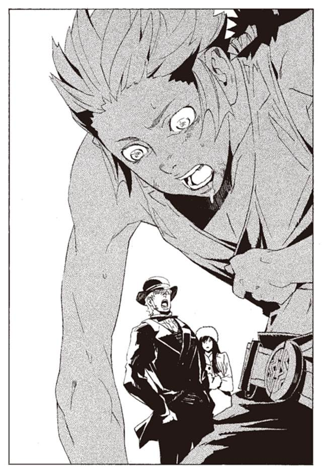
シュラムッフェンは、ヤンクゥから一メートルほどのところで止まった。そこに手を伸ばすことができない。体が戦うことを拒否している。闘志は尽きかけている。
「拾わないなら、ここで殺すぞ」
マットアラストがゆっくりと近づいてくる。
その時、別の女性の声が聞こえた。森から、急ぎ足で歩いてくる音も聞こえる。
「待ってください、マットアラストさん」
「ラティさん、まだいたのか」
マットアラストが呆れた顔で言う。
「ヤンクゥさんを殺させるわけにはいきません。マニさんにも、神溺教団にも、必要な人間なのです」
「それは諦めてくれ。彼の決意は思った以上に固かった。もう殺すしかないのさ」
「できません。マニさんが悲しみます。二度と消えない心の傷を負います。真人としての価値を失ってしまうかもしれません」
「.........それはないよ。悲しみはするが、すぐ忘れるさ。人間ってのはそんなもんだよ」
マットアラストは、歩き続ける。ラティが言い返す。
「あなたはマニさんの何をご存知で？ マニさんにとって、ヤンクゥさんがどれだけ大事か」
マットアラストは立ち止まらない。
「悲しむとしても、しょうがないだろう。別の真人を探してくれ。ユーリ、銃を返せ」
死ぬと、ヤンクゥは確信する。呼吸困難で茫漠とした頭には、悔しさも恐怖も浮かばない。
オリビアは、どうなっただろう。仲間を見つけ戦い続けているのだろうか。それとも、もう殺されているのだろうか。
村はどうなるのだろう。マニはどうなるのだろう。神溺教団のもとで生きていくのだろうか。それとも、見捨てられて、滅んでいくのだろうか。
「.........」
自分は、いったい何をしたのだろう。それを思うと、ただ虚しい。何も守れず、何も成せず、何も残さずに死んでいく。それだけだ。
「.........マニ」
ヤンクゥは呟いた。最後に交わした言葉が、頭の中に浮かんだ。
『戻ってくるよね』
そう言われた。それに自分は、なんと答えただろうか。
『戻ってくるさ。兄ちゃんがお前に、嘘をついたことあるか？』
マットアラストが、隣に立っている。その約束は守れそうにない。自分はマニに、生まれて初めて嘘をつく。
ごめんな、マニ。だけど仕方ないんだ。こうするしかなかったんだから。
「覚悟を固める時間はないぞ」
ユーリが二丁の銃を投げる。片方でいいんだぜと言いながら、マットアラストが受け取る。銃弾が入っているのを確認し、安全装置を外す。
倒れながら、ヤンクゥは思う。仕方ないんだよ、マニ。武装司書と神溺教団は悪い奴で、僕は絶対に許せない。
許せないから、戦う。戦うから、殺される。これは、しかたないんだ。
そう思った瞬間、誰かの声が響いた。それは、ヤンクゥ自身の声だった。
『しかたないなんて思わない。何があっても、絶対に、村を守ると決めたんだ』
「ヤンクゥ。さよなら」
マットアラストの銃口が、ヤンクゥの額に向いている。ゆっくりと、ゆっくりと、マットアラストは引き金を絞る。
「.........る」
息ができないヤンクゥが、肺に入っていた空気を搾り出した。
「何か言ったか？」
マットアラストが聞き返す。ヤンクゥは肺から血を絞り出すように言う。
「.........入る」
銃口にかかっていた人差し指が止まった。マットアラストはヤンクゥの顔を覗き込む。
「神溺教団に、入る。生き延びる、生き延びて、マニを、守る」
そうだ。自分は何があっても村を守ると決めたのだ。だけど、村を守るために、ノロティを裏切るなんて、考えてもみなかった。
「もう一度、言ってみな」
「神溺教団に入る。もう、武装司書とは.........戦わない」
ヤンクゥの目から静かに涙がこぼれた。大切なものを守るために、大切なものを裏切った。今、自分は、確かにノロティを裏切った。
なぜだろう。大切なものが二つあり、そのどちらかを選ばなければならないのは。ヤンクゥにはわからない。これが現実なのだろうか。こんなものが現実なのだろうか。
ヤンクゥは、声を出さずに泣き続けた。
「.........やれやれ」
マットアラストがヤンクゥから目をそらした。そして、銃口から指を離し、腰に戻した。ヤンクゥに背を向け、一言言った。
「.........やれやれだ」
それはマットアラストの口癖である。それを見ていたユーリが呆れた声で言った。
「残酷な人ですのね。初めから殺すつもりなんて無かったのでしょう？」
マットアラストは、ユーリに振り向き、冗談めかした声で言った。
「そうでもないよ」
「信じませんよ、あなたは、嘘つきですからね」
「たまには本当のことを言うさ。たまにはね」
ヤンクゥは、地面に横たわったまま、二人の話を聞いていた。彼にはわかっていた。マットアラストは本当に殺すつもりだったことを。ただ、ほんの少しだけヤンクゥに猶予を与えただけだということを。
その二時間後、ヤンクゥはマットアラストの操縦する飛空艇に乗っていた。ユーリの乗ってきた飛空艇は壊れてしまったので、彼女はラティに同乗してバントーラ図書館へ戻っている。
マットアラストはまるで隙だらけである。さっきまで殺しあっていたことを忘れたように。
「お、着いたぜ」
マットアラストは、飛空艇の機首を落とす。新天地の島に、マニとミンスの姿を発見した。飛空艇は着水し、二人は島に降りた。
「おや、ハミがいたはずだけど」
マットアラストは、ミンスに聞いた。ヤンクゥと戦いに来る前に、この島にも立ち寄っていたという。
「ミレポに怒鳴られて帰ってった」
「しかたないな、あのサボリ魔は」
「代行もおのれに言われるとは思うとらんだろうな」
「何を言う。俺は大変だったんだぞ」
ミンスとマットアラストが話している。一方ヤンクゥにはマニが、血相を変えて駆け寄っている。体中青あざと、生々しい傷跡で覆われている。
「兄ちゃん、怪我」
「大丈夫だよ、兄ちゃん鍛えてるから、一週間もすれば治る」
強がりではない。一般人なら全治三カ月、ヤンクゥなら本当に一週間で治る程度なのだ。
「なんで？ 誰がやったの？」
「マニ、大丈夫だから、気にしないで」
ヤンクゥは言う。しかしマニは一瞬で犯人を見つけていた。立ち話をしているマットアラストの、膝の裏を蹴り飛ばす。
「うわ！」
わざと蹴られたのか本気なのか、マットアラストは尻餅をついた。さらにマニはマットアラストの頭を平手で殴った。その拍子に帽子が飛んで、地面に落ちた。
「この！」
「な、なんだいったい？」
マニはマットアラストの頭をぼかぼか殴る。
「兄ちゃんに何したの！ この！ この！」
「あのな、マニ。俺はヤンクゥが嫌いで殴ったんじゃなくて、あのさ、話を聞いてくれ」
マットアラストは頭を押さえながら言い訳をする。マニは聞く耳を持っていない。
「マニ。そいつは悪い奴じゃ。ひしゃげてまえ」
ミンスは無責任に応援している。マットアラストは慌てて帽子を拾い上げる。
「かなわん。逃げるしかないな」
そう言ってマットアラストは、本当に逃げてしまった。マニは、その背中に向けて思い切り舌を出した。
「あの人、嫌いになった」
憤慨するマニに、ヤンクゥは言った。
「マニ。神溺教団の人と話をしたよ」
そう言うと、マニの顔が明るくなった。
「どうだった？」
「話はできたよ。僕は、神溺教団に.........」
言葉を詰まらせてはいけない。本心を見せてはいけない。そう思いながら喋り続ける。
「神溺教団に入ることにした。これからは、神溺教団と、僕で、村を守っていくよ」
「うん！」
マニが笑った。その笑顔ですら、ヤンクゥの心を晴らせなかった。自分は負けた。この気持ちを整理するには、まだ時間が足りていない。
「ねえ、兄ちゃん」
マニが聞いた。
「神溺教団は悪い人じゃないんだよね」
ヤンクゥは言葉を詰まらせた。長いようでほんの一瞬、返事をするのをためらった。ヤンクゥを信じきったマニの顔から、目を背けそうになった。
「うん、神溺教団は悪い人じゃない」
たぶん上手く言えたとヤンクゥは思った。ミンスが悲しそうな、申し訳なさそうな顔で目を伏せていた。
「神溺教団は、悪い人じゃない。良い人だよ」
それは、ヤンクゥが生まれて初めてマニについた嘘だった。嘘をついたのが正しかったのか、間違っていたのかはわからない。おそらくこの先、一生わからないだろうと思った。
こうしてヤンクゥはノロティの敵を討つことを諦めた。戦い続けることを諦め、嘘をつかないことを諦めた。
十五歳の少年には、あまりにも大きすぎる挫折だろう。そして、それを乗り越えなければならない宿命も、ヤンクゥは背負っているのだ。
――現在 １９２６年12月28日
全ての仕事をやり終えたマットアラストは、グラスを傾けている。パーティはまだ途中で、馬鹿騒ぎはこれからが本番だ。
「マットアラストさん、遅れましたわ」
バーカウンターでカクテルを作っていたマットアラストに話しかけてきたのは、ユーリだった。後ろにはユキゾナもいる。姿が見えなかったが、ようやくパーティにやって来たようだ。
「どうした、心配したぜ」
ユキゾナが不機嫌そうに言った。
「来る前に咳をしたら、ユーリが仰天した。構わんと言ったが、病気の様子を見ると言ってきかなかった」
「仕方ありませんわ、お兄さま」
ユーリが微笑む。ユキゾナはマスクの下で、憮然とした顔をしている。
「.........最近、お前は過保護だ」
「とんでもありません。お兄さまは大事な体ですのよ」
「それは知っている」
「まあ良いよ、とにかくお大事にな」
兄妹の惚気につき合わされるのも御免だ。マットは手を振って追いやる。
二人は早速グラスを持ち、仲良くワインを楽しみ始める。
「おーい、リズリー」
マットアラストは厨房に呼びかける。
「はい、なんですかあ？」
「そろそろ厨房も落ち着いてきたろ。見習いたちにも美味いもの食わせてやれよ」
「ええ。もっといじめたいなあ」
「却下だ。見習いの仕事は終わりだ」
リズリーが不満そうに厨房に戻っていく。エプロン姿の見習いたちは一斉に飛び出し、騒ぎの輪に加わっていく。
「.........」
最後に出てきたヤンクゥが、何か意味深な目でマットアラストを見た。すぐに目線をそらした。
「ま、放っておいてやるか」
神溺教団に入ることを承諾したとはいえ、心の整理をつけるのは難しいだろう。今は放っておくしかない。いまさら、秘密を誰かに漏らしたり、武装司書に反逆することはありえない。彼はマニを守ると決意したのだから。
彼は昨日付けで謹慎を解かれ、正式に見習いに昇格している。この先も彼は武装司書を目指し、村人を導いていくことになる。単純に言えば、今までの彼と何も変わりはない。
だが、それだけのために、なんだってあんな大立ち回りをすることになったのか。きちんと腹を割って話せば済むことだったかもしれない。
このあたりの段取りの悪さは、反省事項として覚えておこう。
もう一人の反逆者オリビア＝リットレットは、相変わらずお喋りを続けている。どうやら今度は、周りの男どもを採点しているらしい。
彼女が反逆をする可能性も、考える必要はない。アーガックスの力を無効化する魔法は確かに不安だ。だが、彼女にはベンド＝ルガーに関する偽の記憶を刷り込んである。真実の記憶を、苦労してわざわざ掘り返すことはないだろう。
キャサリロは自ら記憶を消してしまった。ヤンクゥやオリビア以上に、心配の必要はない。
「しかし、大変だったなあ」
シェイカーからカクテルを注ぎながら、マットアラストは呟いた。
反逆者を殺して、秘密を消すことは簡単だった。しかし、それは下策として捨てた。殺さず、反逆の芽を摘むことだけをマットアラストは考えた。
人を殺せば、恨みが生まれる。オリビアを殺せばキャサリロが、ヤンクゥを殺せばマニが、武装司書に恨みを抱く。いずれ、そこから戦いが生まれる。戦いはまた恨みを生み、連鎖して続いていく。
できれば人を殺さない。可能な限り悪いことをしない。なるべく他人の恨みを買わない。それが、自分のような悪党が、末永く生きる秘訣だ。
マットアラストはそう思いながらカクテルグラスを傾ける。
「.........良い出来だ」
カクテル作りは彼の趣味の一つだ。腕はプロ級と自認している。
「実に、良い出来だ」
もう一度、マットアラストは呟いた。
会場にいるたくさんの武装司書と、それ以外のもの。そのほとんどが、神溺教団は滅び、武装司書は平和を守ったと信じている。残る少数は、世界に平和はなったと嘘をついている。
偽りの平和を守るものは、当然ながら嘘つきだ。
そして、平和が偽りだと知らないものも、また嘘つきだろう。嘘を見抜けず、本当だと信じ込んで語るものは、やはり嘘つきなのだ。
「.........く」
マットアラストの口から、なぜか小さな笑いがこぼれた。慌てて口を押さえてごまかした。
勝利も平和も何もかもが偽り。それを知らないものと、知っていながら騙すもの。この会場のどこを見ても、正直者は一人もいない。
虚言者の宴、偽りの平和。なんとも奇怪で愉快で馬鹿馬鹿しい。
しかしそれが、マットアラストが一年かけて守り抜いてきたものなのだ。この偽りを守ることが、マットアラストの任務なのだ。
それが可笑しくて、マットアラストは笑い続ける。くだらない平和と、くだらない自分自身を、密かにマットアラストは嘲笑う。
英雄には決してなれず、心底からの悪党にもなりきれない。自分を嘲笑うことだけが、マットアラストにできるただ一つのことだった。
夜はまだ更けていない。馬鹿騒ぎは終わらない。マットアラストの庇護のもと、偽りの平和は続いていく。
第六章 全ては屋根で語られる
――現在 １９２６年12月29日
時は過ぎ、日付が変わった少し後。長いパーティは終わった。
三々五々、家路につく武装司書たちを観察する、一人の男がいた。
マットアラストが、ボンボが、ユキゾナとユーリが、キャサリロが、満足げな顔で歩いていく。ヤンクゥだけは、いささか浮かない顔で歩いている。
その武装司書たちを、彼はひたすらに観察していく。その様子、その顔つきを見逃さないように。彼の視線に気がつく者はいない。彼の真意を見通す者もいない。
彼は何者なのか。どこから武装司書たちを見ているのか。それを語るべき時はまだ来ていない。
「.........」
最後に残ったのは、屋根の上のハミュッツ＝メセタ。そして、遅れて出てきたオリビア＝リットレットである。その二人を、彼は見つめている。
「.........結局、何もなしか」
パーティは終わり、ハミュッツは空になったシャンパンの瓶を振りながら呟いた。
七カ月の間、ハミュッツはオリビアを監視していた。彼女は何を企んでいるのか、どう武装司書を滅ぼすのか、期待と思案をめぐらせていた。
またしても、期待はずれだったのか。オリビアが武装司書は滅ぶと明言したのはただのはったり。『菫色の願い』はラスコールから伝わった後、オリビアの記憶とともに消え去った。
現状を見ると、そうとしか考えられない。
しかし、ハミュッツは納得ができない。オリビアはこの程度ではないはずだ。
それは、ハミュッツの予感なのか、それとも願望なのか。彼女自身にもわからない。
ふと、屋根の下を見る。オリビアがパーティ会場の外に出てくるのを見つけた。
オリビアは、パーティ会場をあとにする。楽しかった。キャサリロに招待状をもらった時は、行くかどうかは微妙だったが、こんなに楽しいとは思わなかった。
怖いと思っていた武装司書も、話してみれば気のいい奴らばかりだった。今日初めて会い、仲良くなった人もいる。明日から、また楽しくなるだろう。
「最近、どうも調子が悪かったしな」
オリビアが呟く。ここ二、三日、どうも頭がぼんやりしていたところだ。何か物忘れをしているような、違和感を覚えていた。
その違和感も、今日武装司書たちと話しているうちに、消え去った。別にたいしたことでもなかったのだろう。
オリビアは鼻歌を歌いながら、帰途につく。
彼女は三日前、キャサリロに記憶を奪われ、マットアラストに暗示をかけられた。それはオリビアの人格をも様変わりさせていた。疑り深く、慎重で、不屈の闘志を抱いていたオリビアはそこにはいない。
快活で社交的で、人をからかうのが好きで、少しばかり淋しがりな普通の女性だ。それは、オリビア＝リットレットの本来の性格なのかもしれない。
「.........ん？」
その時、オリビアは誰かの視線に気がついた。周囲を見渡す。
「こっちよ」
上から声が聞こえてきた。頭上にハミュッツがいるので、少なからず驚いた。
「オリビア。帰るの？」
ハミュッツが聞いてくる。オリビアは思わず聞き返す。
「何してんの、あなた」
「ううん、ちょっと考え事」
そういえば、ずっと姿が見えなかった。帰ったものだと思っていたが、こんなところにいたのか。
「なんでそんなところで」
「馬鹿と煙は高いところが好きなのよ」
そう言いながら、ハミュッツは屋根の上から何かを投げた。
「ねえ、ちょっと付き合ってよ。どうせ予定ないでしょ？」
オリビアは投げられたものを見る。投石器の紐だ。付き合えと言われても、どうすればいいのだろう。
とりあえずオリビアは紐を掴んでみる。紐が蛇のようにオリビアの手首に絡まった。
オリビアの体が軽々と持ち上がった。オリビアは屋根の上に乗せられた。
「びっくりしたなあ、でもちょっと気持ちよかった」
「ま、その辺に座りなさい」
オリビアは、おっかなびっくり屋根を歩き、一番上に腰掛けた。
「それで、話って何？」
「どうしてもわからない事件があってね。それが気になって何も手につかないのよ。いくら考えてもわからないから困ってたところなのよね。
こりゃどっかの名探偵に頼むしかないかなあなんて思ってんの」
「マットアラストあたりでいいだろ？ 顔もそれっぽいし」
「だめだめあいつは。ほんとにろくでなしなんだから」
ハミュッツは言下に否定する。だからオリビアに相談したいということらしい。
しかし、マットアラストやハミュッツにわからないことが、自分にわかるだろうか。オリビアは首をひねる。
「まあいいか。それで、何なの？」
「あら、聞いてくれるの、名探偵さん」
「即席の名探偵だけどな。まあ話しなよ」
「頼りにするわよ」
オリビアとハミュッツは笑いあう。ハミュッツが語り始める。
「あのね、わたしには今、敵がいるのね。どんな奴かは一応秘密にさせて。でもそいつはあたしをどうしても倒したいらしいの」
「あなた、どうせ悪いことしたんでしょう？」
オリビアは一応聞いた。ハミュッツという人のことはよく知らないが、善人には見えない。
「.........微妙。わたしもたいがいだけど、そいつも別に善人じゃないから」
「まあそんなところだよな。で、そいつがどうかしたの？」
「そいつは、あたしを倒す方法を知っている。実践するのは難しいけど、倒す方法は知っている」
「それで？」
「そいつはね、わたしのことをすでに倒していると言ったのよ。ここ重要よ。必ずわたしを倒す、でもない。わたしを倒せるでもない。わたしが倒されるのは決まってるって言ったの」
「ふむ。となると、あなた大ピンチだな」
ハミュッツは頷く。
「そのはずなのよ。でもそいつは何にもしてこない。わたしは屋根の上でのんびりしている。これはどういうことかしら」
オリビアは考える。
「あなたを倒す準備をしてるんじゃないの？」
「そのはずだけど、何にもしてないの。本当にびっくりするほど何にもしてないの。これはいったいなんなの？」
オリビアは腕組みをして考える。まさかそれが、自分のことだとは思いもしない。
名探偵に推理を頼み、同時に犯人に自白させようとしている。なんとも奇妙な状況だが、オリビアはそんなことは知りもしない。
ハミュッツとオリビアが、屋根の上で語り合っている。その内容は、観察する彼にも聞き取れない。
まずいなと、彼は内心で冷や汗をかいていた。オリビアの策略が露見したのか。それとも露見しかけているのか。
マットアラストを騙しきった確信はある。しかしハミュッツだけは、まだ疑いを捨てていないようだ。やはり、最も恐るべきはハミュッツなのか。
彼は緊張に身をこわばらせる。ここまで、オリビアの策略は完璧に成功している。それが最後の最後で、頓挫するのだろうか。
彼は緊張に身をこわばらせながら二人を注視する。
オリビアの策略を推理できるのはオリビアしかいない。ハミュッツはそう考えて話しかけた。しかしオリビアは、お手上げと言うように、掌を見せた。
「だめだ。情報が少なすぎるよ。どう考えていいものか、さっぱりだ」
ハミュッツは、軽く落胆する。
「じゃあ、こう考えてみなよ。もしもあなたが、そいつの立場ならどうする？ あたしを倒したくて、あたしを倒す方法を知っている。その時オリビア＝リットレットはどうする？」
「そいつの立場で、か。あんたを倒す方法を知っているか.........」
奇妙な光景である。オリビアが、オリビアの立場に立って考えているのだ。
「とりあえず、あたしなら誰かに伝える。あなたを倒す方法を、あなたを倒したいと思っている人に。たぶん、あなたは恨みを買ってるだろうし。伝える相手はいるだろ？」
ハミュッツもそこまでは思い至っている。オリビアには戦う力がない。だから、『菫色の願い』を誰かに伝えようとしたはずだ。
事実、ヤンクゥやキャサリロをそそのかして武装司書に反逆させようとした。
「なるほど。で、そのほかに、何かするかな？」
オリビアに聞きたいのはその先だ。犯人兼名探偵は、腕組みをして考え続ける。
「そのほかにか.........でも、あたしにできることなんてそれぐらいだと思うけどな.........」
しばらく考えて、オリビアは手を叩いた。
「思いついた。あなたの弱点を誰に伝えたのかを隠す。いや、違うな。弱点を誰かに伝えたことを隠す」
「.........どういうことかな？」
「だってそのほうが有利になるでしょ。あなたは誰に狙われてるのかわからない。そもそも自分が狙われてるのかもわからない。
そうなったらいくらあなたでも、危ないんじゃないか？」
ハミュッツは、自分自身のうかつさに気づいた。少し考えればわかることだ。ハミュッツは強すぎる。だから、力のない者が戦う術を想像できなかったのだ。
オリビアがもたらしたヒントをもとにハミュッツの頭脳が回転する。
狙いは『菫色の願い』を誰かに伝えること。その相手は、ヤンクゥでもキャサリロでもなかったのだ。
ならば、いつ、どこで伝えたのか。ハミュッツは、バントーラ過去神島に来てからの、オリビアの行動を思い返す。そんな機会はなかったはず。
「.........違う」
自分は馬鹿だ。オリビアの目的は、自分の知らないところで『菫色の願い』を伝えることだ。過去神島に来てから、ハミュッツの監視下で伝えたはずはない。
機会はある。過去神島に来る前。マットアラストに捕まる前だ。
「.........そうか、わかったかもしれない」
急に血相を変えて考え始めたハミュッツを、オリビアは不思議そうに見ている。
七カ月前。オリビアがマットアラストに捕まる直前。彼はイスモ共和国で、オリビアに出会った。
彼は、神溺教団と戦い、天国を滅ぼすことを目指していた。その彼にとって、オリビアとの出会いはまたとない僥倖だった。
天国を滅ぼす唯一の手段、『菫色の願い』を知ることができた。絶望的だった彼の戦いに、ほんの一筋の光が見えた。
だが、それと同時に、重大な危機も到来した。
その時、彼の存在を知る者はいなかった。ハミュッツも、マットアラストも、死んだカチュアもだ。誰も彼の反逆を知らないから、彼は生き延びることができた。
しかし、オリビアとの出会いは、その有利を崩す。オリビアは武装司書に追われている。いずれ捕まることは免れないだろう。そうなれば、彼の存在もハミュッツたちに知られることになる。
思案に暮れている彼に、オリビアは策を提示した。
ハミュッツは考え続ける。
オリビアは、マットアラストに捕まる前に、『菫色の願い』を誰かに伝えていた。それはほぼ間違いはない。
しかし問題はある。
オリビアが捕まった時、聖浄眼を持つミンスが尋問を行った。そして、『菫色の願い』を知らないことも、誰にも『菫色の願い』を伝えていないことも、はっきりわかった。
ミンスの聖浄眼を騙すことは不可能だ。ミンスがマットアラストに嘘をつくこともありえない。
ならば、どうやってオリビアはミンスの目をかいくぐったのか。
頼りはオリビア本人しかいない。ハミュッツはなおも、オリビアに聞く。
「じゃあさ、あんたはどうやって伝えた相手のことを隠す？」
「逃げるとか」
「わたしなら捕まえるわ」
「捕まっても黙る！」
「拷問とかいろいろ、やっちゃうわよ」
なんて女だとオリビアは呆れている。
「じゃあ、いっそ自殺してみるとか」
「わたしはバントーラ図書館の館長代行よ。『本』を読めばすぐにわかるじゃない」
「そうだな.........」
オリビアはなおも考え続ける。
「あれがあるぜ。名前忘れちまった。アーとか、抹殺とかそんな名前のやつ」
「虚構抹殺杯アーガックス」
「それだ。その記憶を消す水で、誰に伝えたか忘れちまえばいいんだよ。忘れてたら拷問されても絶対ばれないだろ？」
「.........なるほど」
しかし、オリビアはアーガックスをいつ使ったのだろう。現在、アーガックスは、武装司書が使っていたものも、神溺教団に預けていたものも、両方とも封印迷宮にある。
マットアラストに捕まってから、ミンスに尋問されるまでの僅かな間。マットアラストの監視がついている中で、どうやってアーガックスの水を飲んだのか。
不可能に思えるが、そうではない。オリビアは現実にそれを行ったのだ。
それと時を同じくして、ミレポック＝ファインデルがよろよろと道を歩いている
パンチを水のように飲み干して倒れた後、ミレポックは二時間ほどで目を覚ました。その後マットアラストが、酔い覚ましとほざいて、グラスを持ってきた。ミレポックが飲み干してみると、それも酒だった。ミレポックを殺すつもりだったのだろうか。
酒というのは恐ろしい。二度と飲まないようにしよう。そう思いながら、ミレポックが家に向かって歩いている。
「マットアラストさん......絶対そのうちやり返す.........あの男、完全な愉快犯だわ.........」
歩いてるとミレポックは、妙なものを見つけた。屋根の上に人影が見える。ハミュッツと、もう一人はオリビアだ。
「何をしてるのかしら.........」
ミレポックは思考共有で呼びかけてみようとする。しかし、頭がぐらぐらするのでやめた。
ふと、過去のことを思い出した。オリビアから、ヴォルケン事件の真相を聞いた、数日後のことだ。
――１９２６年５月
「なあ、ミレポックさん、頼みごとがあるんだけどな」
マットアラストの家に、オリビアはしばらく滞在していた。そこには武装司書の皆がねぎらいの言葉を言いに訪れていた。
ミレポックが、一人仕事の合間を縫ってやってきた時、オリビアは言った。
「どうかしましたか」
「少し頼みにくいんだが、頭を下げてお願いしたい。規則を破らせることになるからな」
「.........話の内容にもよりますが、おっしゃってください」
オリビアは話し始めた。
「実はな、ヴォルケンの記憶を消したいんだ。あんたら、記憶を消せる道具持ってるだろ」
「あれは.........」
勝手に持ち出せるものではない。そう言いかけて止めた。ミレポック自身、規則に反して使ってしまった過去がある。
それに、オリビアはおそらく、ヴォルケンに暴行されたのだ。その記憶を消したいというのは、同じ女性としてよくわかる。
「.........マットアラストには頼めねえ。ハミュッツも館長代行だから、どうせ許しちゃくれないだろう。あんたにお願いするしかないんだ」
「.........わかりました」
今までのミレポックなら、同情はするができないと突っぱねていただろう。しかし、四角四面だったミレポックも、最近は少しずつ変わり始めている。
ミレポックは承諾した。頼まれたからには、全力で行おうと考えた。
アーガックスを持ってくるのは大して難しくはない。問題はマットアラストやハミュッツに、ばれないようにすることだ。オリビアのいるアパートの前で、ミレポックは思考共有を発動した。
（.........マットアラストさん、今どこですか？）
（買い物の途中）
アパートの中にいると思っていたが、あてが外れた。しかし、不用意に帰ってこないように保険をかけておく。
（ユキゾナさんが、仕事の相談をしたいとのことですが）
マットアラストが、思考を送り返す。
（明日じゃだめかな。家に早く戻りたいんだが）
家に戻って、オリビアと何をするつもりか。ミレポックは余計なことを考えてしまう。
（できれば急いで欲しいとのことです。構いませんか）
（.........ん、わかった行くよ）
ユキゾナが相談事をしているのは本当である。急ぎではないというだけだ。マットアラストは狙い通り、バントーラ図書館に向かっていくだろう。
ミレポックは、アパートに入る。その瞬間、今度はハミュッツとすれ違った。思いもよらない顔だった。ハミュッツはこの日は休日で、家で趣味の裁縫をしているはずだった。
「あら、ミレポ」
ミレポックは、一瞬ばれたのではないかとたじろぐ。
「今日は良い天気ね、気持ちがいいわ」
その時のハミュッツは、妙に上機嫌だった。何かあったのだろうか。
「どうしたんですか、代行」
ミレポックが呼びかけても返事はない。ハミュッツは楽しそうに、階段を下りて行った。
首をかしげながらミレポックは、ドアを叩く。オリビアの返事を聞き、中に入る。
「オリビアさん、頼まれたもの、持って来ました」
「.........あ、ああ、そうか、ありがとうな」
オリビアはなぜか青ざめている。ハミュッツと話していたのだろうか。他人の事情なので、深くは立ち入るまいとミレポックは思った。
「これに水を注いで、消したい記憶のことを考えながら、水を飲めば記憶は消えます」
「なんだ、結構簡単なんだな」
言ってオリビアは、水差しを手に取り、アーガックスに注ぐ。その瞬間、ミレポックはオリビアがかすかに笑うのを見た。苦しかった記憶を消すにしては、妙だなと違和感を覚えた。
オリビアは何事かを呟き、アーガックスの水を飲み干した。
「.........ん？ なんだ、これ」
飲み干した後、オリビアはあたりを見渡す。手の中にある物を不思議そうに見る。
「忘れてしまったようですね。あなたはアーガックスの水で、自分の記憶を消したのです」
「.........そうなのか？ あたしが記憶を？ .........どういうことだ？」
オリビアは混乱している。ミレポックは、落ち着いてオリビアを諭す。
「記憶を消したのは、覚えている必要がない記憶だからですよ。心配することはありません。ご安心ください」
戸惑いながらもオリビアは頷く。
ミレポックは、マットアラストが戻ってこないうちに、急いでアパートから出た。再度封印迷宮に入り、アーガックスを元の場所に戻しておくのだ。
――現在 １９２６年12月29日
そういえば、そんなこともあった。ミレポックは屋根の上のオリビアを見ながら思った。
あの時、オリビアの様子は少し変だったが、気にすることはないだろう。そのあとも今も、オリビアはなんの不都合もなく暮らしている。
それより、早く帰ろう。ミレポックは踵を返し、家路を急ぐ。
自分の行動に何の意味があったのか。オリビアはなぜ笑い、ハミュッツはなぜ上機嫌だったのか、ミレポックは何も知らない。この後も生涯、知ることはなかった。
ハミュッツはしばし考えて、思い至った。アーガックスを使うために、武装司書の誰かを利用したのだ。おそらく、ヴォルケンのことを他の武装司書に伝え、信頼を勝ち取ったのも策略の一つだったのだろう。
マットアラストの行動を読み、武装司書の誰かを利用した。なんとも手の込んだ策だ。
オリビアが眺めている前で、ハミュッツはなおも考える。
ミンスに尋問される前に、オリビアはあらかじめ『菫色の願い』に関する記憶を消していた。『菫色の願い』を受け継いだ人を守るために。
ここまではわかった。だが、まだ問題は残っている。
ヤンクゥやキャサリロをそそのかし、反逆を企てたのはなぜだろう。あの反乱で、オリビアが殺されていた可能性は十分にあった。殺されれば『本』が発掘される。『本』が発掘されれば、それ以前の策略は水泡に帰す。
行動に矛盾がある。それ以前の計略と相反する行動をとっているのはなぜだろう。
「.........そうか、忘れたのね」
ハミュッツは、すぐに閃いた。矛盾はしていない。
オリビアは、『菫色の願い』に関する記憶を消した。『菫色の願い』を知っていたことも、誰かに願いを伝え、反逆の意志を託したことも忘れた。
オリビアは、自分の組み上げた策略そのものを忘れた。だから本来の目的と反する、無謀な復讐に打って出たのだ。
おそらく、キャサリロやヤンクゥをそそのかしたのは、オリビア自身も予想していなかった不測の事態なのだろう。
「全て、読めたわ」
ハミュッツは呟いた。オリビアがその横で、きょとんとした顔で見ている。
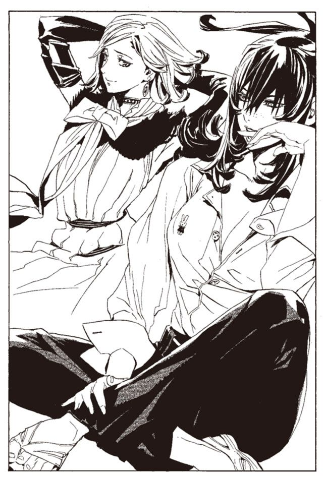
「なんだか、話の途中で考え込んでたが。何かわかったのかい？」
「わかったわ。何もかも。あなたすごいわ。名探偵よ」
喜ぶハミュッツを見て、オリビアは首をかしげている。
「そんなたいしたことも話してないけど」
「そんなことないわ。あなた、裁縫屋やめて探偵になりなさい。才能の持ち腐れよう」
「変なこと言うなよ。褒めすぎだ」
「褒めすぎてないわよ、本当にあなたはすごいわ」
オリビアは眉をひそめる。褒め殺しにあっているような気分らしい。
「まあ、役に立てたなら幸いだけど。それより、そろそろ帰っていいかい。ここは寒いんだよ」
「そうね。ありがとう、邪魔したわ」
そう言ってハミュッツは、オリビアの手首に投石器の紐を巻きつけた。投石器を操って、オリビアを優しく地面に降ろす。
「じゃあな。風邪引くなよ」
オリビアは屋根の上に手を振って、帰っていった。
「.........さてと」
屋根の上から、ハミュッツは彼女の後ろ姿を見つめる。
これで、オリビアの策略は全て読めた。残る疑問は一つだけだ。いったい誰に『菫色の願い』を伝えたのか。
どれだけ考えてもわからないだろう。それを隠すために、オリビアはとてつもない策略をめぐらせたのだから。
「.........」
知る方法は、一つだけ。
オリビアを殺し、『本』を読むことだ。
ハミュッツは投石器に小石を装填し、ゆっくりと廻し始める。オリビアはハミュッツに背を向けて、無防備に道を歩いている。
「やめた」
と、ハミュッツは小石を空に投げ上げた。
自分はまたしても、オリビアに負けたのだ。ハミュッツはオリビアが張り巡らせた策略の一片も、推理することはできなかった。オリビア本人に聞くという、反則に近い行為で、ようやくオリビアの策を知った。
頭脳の戦いで負けて、暴力で解決する。そんな格好の悪い真似はしたくない。
「.........あなた、すごいわね」
オリビアと関わるのも、これが最後だろう。見えなくなりつつある、オリビアの背中に向けて、ハミュッツはそう呟いた。
オリビアは、何の力もないただの人でありながら、カチュア打倒に一役買った。ハミュッツと渡り合い、逃げ切った。そして、天国を滅ぼすというとてつもない戦いの契機まで作った。
そんな戦いを乗り越え、全てに勝利を収めながら、あろうことか平穏な余生まで手に入れたのだ。
「殺さないわ。あなたの勝ちよ。完膚なきまであなたの勝ちよ」
僅かな悔しさと、喜びを感じながら、オリビアの背中に向けて言った。
もう一度、ハミュッツは屋根の上に寝そべる。
まだまだ世の中に、絶望するのは早いらしい。この世には、波乱の種は撒かれている。
待ち続ければ、また楽しいことが起こるだろう。
ハミュッツとオリビアの別れを見届け、彼もまた、その場から離れて家路につく。
おそらくハミュッツは、オリビアの策略を見抜いたのだろう。その上で、あえて見逃したのだ。
ハミュッツは何を考えているのだろう。彼には理解できない。ハミュッツは敵というより、理解不能の不確定要素と考えたほうが良いようだ。
「.........ここからは、俺の戦いだな」
彼は呟いた。オリビアは、十分に務めを果たした。彼に『菫色の願い』を伝え、彼の存在を隠しぬいた。この先、『菫色の願い』を実現させるのは彼の務めだ。オリビアから受け継いだこの願いは、必ず彼が果たす。
オリビアは彼を信頼したが故に、全てを託したのだ。その信頼には応えねばならない。
困難な道であることは、十分に理解している。歴史上の誰一人、傷をつけることすら叶わなかった天国に挑むのだ。マットアラストやユキゾナとも、戦わねばならない時もいずれは来るだろう。
しかし、恐れはない。そんなものはとうの昔に捨てた。
ただ進み、天国を滅ぼすだけだ。彼は決意を胸に歩き始める。
「さよなら、オリビア＝リットレット。幸せに」
最後に彼は振り向き、オリビアの背中に向けて、小さく別れを告げた。
彼は何者か。何故に戦い、いかに生きるか。それを語る時は、いずれ来るだろう。
断 章 男の名はルルタ
――１９２５年９月
ハミュッツとオリビアの戦いは終わった。自転人形ユックユックは発動し、肉たちは記憶を取り戻した。オリビアは、シャーロットの魔術で遠く離れた草原に転移していた。
それから、数時間後。
オリビアは、人気のない駅でラスコール＝オセロと向かい合っていた。
「.........信じられねえ」
オリビアは思わず呟いた。彼女はラスコールから、神溺教団の真実を聞かされていたところだった。
「武装司書は信じられねえってのは、わかってるよ。今さっき殺されかけたばっかりさ。
だけどな、武装司書と神溺教団が、グルだったなんてなあ」
「信じられない話でございましょう。なれど、事実でございますよ」
ラスコールは微笑んで言った。
本当に信じられない話だった。
神溺教団は武装司書に生み出された。それは天国に幸いな人の『本』を運ぶ使命のため。武装司書の幹部と、楽園管理者がその秘密を守っていること。
神溺教団を倒そうとも、武装司書を滅ぼそうとも、無意味なこと。真の勝利は、天国を倒さねば得られないこと。それらを、オリビアは聞いていた。
「信じるぜ。並みの奴に言われても、笑い飛ばすがな。だけどあんた、只者には見えないからな」
「信じていただけて喜ばしゅうございます」
ラスコールは、わざとらしく頭を下げる。
「しかし、腑に落ちねえ。そもそも、その天国ってやつはなんなんだ。武装司書どもは、どうしてそんな命令を必死に守ってる」
オリビアは当然の疑問を口にする。ラスコールは笑って拒絶する。
「それはご自分のお力で探り当てていただきたいものでございます。その程度のことがわからないならば、天国を倒すことなど夢のまた夢でございます。
ならば、教える必要などございません」
「なんだか、勝手な奴だな。お前は」
オリビアは、肩をすくめる。
「さて、ここからが本題でございます。強大なる天国を滅ぼす唯一の手段、『菫色の願い』をあなた様にお伝えいたしましょう」
オリビアは頷く。
「十年前、一人の少女がございました。彼女はあるお方に恋をいたしました。そのお方の名は、もはや語ることを許されてはございません。菫の咎人とのみ、呼称されてございます。
しかし哀れにも菫の咎人様は、神溺教団の策謀によって命を落とされてしまったのでございます。
彼女に仕えた方々も、ハミュッツ様とフォトナ様に、一人残らず殺されてございます。あなた様と心を繋いだ、ベンド＝ルガー様も、そのために殺されたのでございます」
「.........それで殺されたのか、ベンド＝ルガーは」
「何故に、菫の咎人様は殺されねばならなかったのか。それは、菫の咎人さまの恋の成就は、天国の滅亡を意味するからです」
「どういうことだ？」
「天国を滅ぼす。それは、力によっては叶いません。ハミュッツ様が一万人いようとも、天国に傷をつけることすら叶いません。
天国を滅ぼす唯一の手段は、一人の男を、絶望と悲しみの淵より救うことでございます」
「理解できねえ。なんなんだ、それは」
「その男こそ、菫の咎人様の思い人。その男を救うことは、あの少女の願いにして、天国を滅ぼす唯一の手段でございます。
その男の名前はルルタ＝クーザンクーナ。
この名前は、是が非でもご記憶願います」
「わからねえ。そのルルタって男はなんなんだ？ どうしてそいつを救えば、天国ってのが滅ぶんだ」
「私から伝えられることは、ここまででございます。この先を見つけ出し、天国を滅ぼすのはあなた様の物語でございます」
オリビアは、困惑に声を荒らげる。
「待てよラスコール。それだけ聞かされてどうしろってんだ。天国ってのはなんなんだよ。そのルルタって男はどこにいるんだ！
いや、そもそもあたしは、この先どうやって生き延びれば良いんだよ！」
「失礼ながら、それは、私のあずかり知るところではございません。私の仕事はただ一つ、『菫色の願い』をあなた様に伝えることのみでございます」
「だけど.........」
オリビアは絶句している。ラスコールはそれだけを言い残し、自らの体を地面の中に溶け込ませる。
「あなた様が無為に死ぬとしても、天国を滅ぼす道を作るとしても、私のあずかり知るところではございません。未来は私の知りうることではございませんゆえに」
消えかける直前、最後にラスコールは付け加えた。
「そうそう、最後にもう一つだけ申し上げて起きましょう。
ルルタ＝クーザンクーナとは何者か。あの方について簡単に申し上げとうございます」
ラスコールは、そこで意味深に言葉を切った。
「この長き、戦う司書の物語。
ルルタ＝クーザンクーナとはいうなれば、この物語の主人公でございます」
「主人公？」
「そう。物語はあの方が始め、あの方が終わらせるのでございます。それがルルタ＝クーザンクーナでございます」
「.........わからねえ」
「ルルタ様の長き物語に、あなた様が終わりをもたらすことを、心より願ってございます」
呆然とするオリビアを残し、ラスコール＝オセロは地面の中に消えていった。
集英社ｅスーパーダッシュ文庫
戦う司書と虚言者の宴
BOOK 7
著者 山形石雄
(C) ISHIO YAMAGATA 2011
２０１１年１月６日発行
この電子書籍は、集英社スーパーダッシュ文庫「戦う司書と虚言者の宴 BOOK 7」
２００９年12月６日発行の第３刷を底本としています。
発行者 鈴木晴彦
発行所 株式会社 集英社
東京都千代田区一ツ橋２丁目５番10号
〒１０１−８０５０
［電話］
０３−３２３９−５２６３（編集部）
０３−３２３０−６３９３（販売部）
０３−３２３０−６０８０（読者係）
制作所 株式会社デジタルディレクターズ
本作品の全部また一部を無断で複製、転載、改竄、インターネット上に掲載すること、および有償無償に関わらず、本データを第三者に譲渡することを禁じます。なお個人利用の目的であっても、コピーガードを解除しての複製は、法律で禁じられています。